| GENEZ―8 ジーンズ GENEZ ジーンズ (富士見ファンタジア文庫) | |
| 深見 真 | |
| (2013) | |

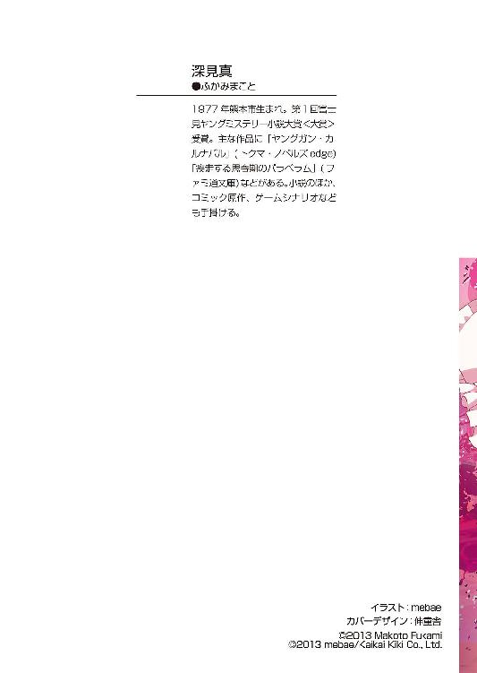
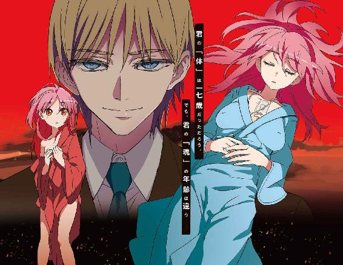
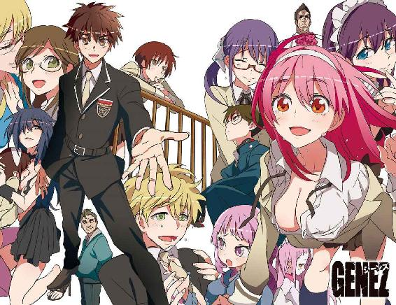
GENEZ―8
ジーンズ
深見 真

富士見ファンタジア文庫
本作品の全部または一部を無断で複製、転載、配信、送信したり、ホームページ上に転載することを禁止します。また、本作品の内容を無断で改変、改ざん等を行うことも禁止します。
本作品購入時にご承諾いただいた規約により、有償・無償にかかわらず本作品を第三者に譲渡することはできません。
本作品を示すサムネイルなどのイメージ画像は、再ダウンロード時に予告なく変更される場合があります。
本作品は縦書きでレイアウトされています。
また、ご覧になるリーディングシステムにより、表示の差が認められることがあります。
口絵・本文イラスト mebae
口絵・本文デザイン 伸童舎
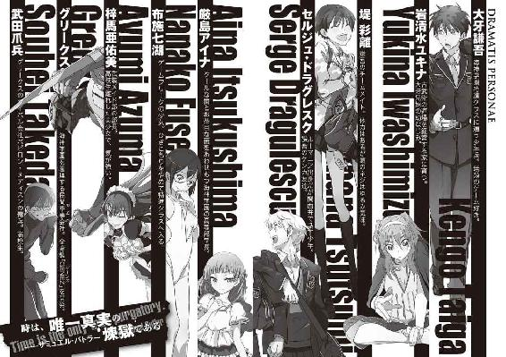
プロローグ
──岩清水ユキナは、長い夢を見ている。
広大な平野、というわけではない。川に挟まれた盆地は農地が多く、道は狭い。しかも山に囲まれている。ユキナがいる櫓の高層からは、茶臼山や旭山が描くなだらかな稜線が見える。山というよりは丘に近いのかもしれない。
永禄四年──一五六一年。信濃の国、川中島。
この地で上杉政虎（のちの輝虎、謙信）と武田信玄が激突するのは、もう四回目だ。関東管領となって上杉姓を譲渡された長尾景虎──政虎。信濃平定後の上洛を目指す武田信玄。北信濃の領有権をめぐって、激しい戦闘は避けようがなかった。
ユキナがいる海津城は、三方を山に囲まれ、千曲川に面している。
「......？」思わず、首を傾げてしまう。どうしてこんなにぽんぽんと川中島周辺の地名が頭に浮かんでくるのだろう。ついさっきまで海神学園にいたはずなのに、謙吾と一緒にいたはずなのに......。
夢なのか現実なのかはよくわからないが、とにかくユキナは戦国時代の城にいるのだ。海津城は重厚な土塁と堀によって守られている。ユキナは、本丸の四隅にある高い櫓の一つに部屋を与えられていた。その最上階から外を眺めると、濁った水を満々と湛える堀が何か大きな生き物の足あとのように見える。
上杉軍は、西に二キロほど離れた妻女山に布陣している。高い山ではないが、盆地では目立つ。あの程度の山に、よく一万三千人も布陣しているものだ。
武田軍は一万七千。それにくわえて、非戦闘員三千が同行している。
武田は城、上杉は山に陣取り、一〇日ほど睨み合っている。
「ゆきな姫──」
ユキナの背後に、いつの間にか何者かが平伏していた。語りかけられたので振り返るとそこには巫女装束の少女がいた。──ここでユキナは、自分も巫女の衣服を身に着けていることを思い出す。
少女は顔見知りだった。葛破谷という変わった名前のくノ一だ。望月城の巫女頭領、忍びの術に長けた千代女の命令で動いている。くノ一といえば女としての立場を利用して情報収集をすることが多いが、彼女は違った。ユキナの警護につく前は、暗殺を主な任務にしていたという。特殊な古武術を使うのだ。
葛破谷はユキナのことを「姫」とか「磐長の姫巫女」と呼ぶ。
──これは私ではない。
でも、私でもあるのか。
戦国時代の風景を、現代人の感覚で見ている。ユキナは混乱する、自分でも意味がよくわからない。──これはつまり、思い出している、ということなのか。
「いよいよ戦の気配が近づいてまいりました」葛破谷はかしこまって言う。「死なずのもののふはまだ見つからぬか、と。お館様が......」
ああ、とユキナは声を漏らした。──やはり私は、ナイチンゲールなのだ。
この時代、ユキナにはギルガメシュがいない。相応しい相手がいない──というより、ユキナがそれを望んでいない。武田家に協力したくない。武田信玄の戦のために、誰一人自分の力で不死化したくない。
武田信玄が、関東管領・上杉憲政と戦ったときのことだ。小田井原で敵軍を迎撃したあと、討ち取った生首五〇〇あまりを敵城の周囲に並べた。城を陥落させると、降伏した兵士は皆殺し。女は遊女にされ、それ以外は過酷な重労働が待つ金山へと送られた。信玄には、そういう残虐なところが強すぎた。冷然と自分の家族を殺すことができる男だ。彼が領地・権力を拡大していけば、いつかもっと恐ろしいことをやらかすだろう。
問題は、姉のニキだ──。彼女は尾張の織田家に仕え、その力を駆使して暗躍している。織田信長は桶狭間で今川義元を討ち取り、昇竜の勢いだ。
姉は、惜しげも無くナイチンゲール──磐長の姫巫女──の力を使った。自分と遺伝子が適合した侍大将を一人選んで、自分のギルガメシュ──死なずのもののふ──としていた。ユキナも、同じことを期待されているのだ。
その期待には応えたくない、とユキナは思う。
睨み合いの硬直状態の末に、武田信玄が動いた。山本勘助が「啄木鳥の戦法」と呼ばれる作戦を提案した。軍を二手に分けて、上杉軍に奇襲をかけるのだ。──しかしその奇襲は、上杉謙信に見抜かれる。見通しの悪い霧の中、八千の武田軍本隊に上杉軍が襲いかかった。大混乱の決戦場は、川中島の八幡原となった。
まずは、鉄砲組・弓組による射撃戦である。霧が出ていたうえに、当時の質の悪い火薬がたてる濃い硝煙によって視界が遮られて、戦場の混乱がますますひどいものになっていく。鉄砲は主に威嚇目的、相手をよく傷つけるのは弓のほうだ。
いわゆる遭遇戦だったのでたちまち間合いが詰まって、射撃戦は中途半端に終わり、両軍は長柄足軽を前に出した。彼らは長さ五メートルを超える槍を構えて、しかし突くのではなく、主に打撃武器として使う。
「それ打てや！」という号令にしたがって、一斉に敵を「叩く」。左足で踏み出しつつ強く振り下ろす。
長柄の槍はよくしなり、陣笠や鎧で守られていない場所に当たれば骨が折れる。負傷者が悲鳴をあげてのたうち回れば、隊列が乱れる。
そして、騎馬隊──。
「武田騎馬軍団なるものは存在しない」というのが現代の定説になっている。
戦国時代に、現代的な感覚でいう「騎馬隊」「騎兵隊」はなかった。騎馬武者は、戦場では馬を降りて戦うことも多かった。──が、だからといってただちに騎兵による突撃がなかったということにはならない。武田家は騎馬武者を後方に集団で配置した陣備えを好んだ。「馬上の巧者」を集めて、好機と見たら突撃させる。やや遅れて、騎馬武者の家来・従者が徒歩であとをついていくという、日本の戦国時代独特の騎兵戦術だ。
戦国時代の馬は欧米の馬よりもずっと小型だったが、それでも平均体重は三五〇キロを超えていた。一度でも、馬に乗ったことがあれば、わかる。サラブレッドより一回り小さくても、それだけの体重があれば徒歩の人間にとってはとてつもない脅威になる。びくびく怯えながら長柄の槍で相手を叩くしかない雑兵は、武芸の訓練を積んだ「職業軍人」である騎馬武者からしてみれば蹴散らすのにちょうどいい相手でしかない。馬上から槍で突き、馬を当てて転ばせてから踏み潰し、刀でなで斬りにしていく。
四度目の川中島は死闘になった。
武田信繁討ち死に、山本勘助討ち死に、両軍合わせて数千の死傷者──。
ユキナは葛破谷とともに、犀川近くの街道から人が死んでいくのを見ていた。見ている以外、何もすることがなかった。武田軍と上杉軍。多少の好き嫌いはあっても、どちらが正義でどちらが悪と決められるわけでもない。海津城に戻ったら、位の高い武士たちからユキナは「名高いにき姫と違ってお前はなんと役立たずな......！」と罵られた。
そんなことを言われても、困ってしまう。
＊
──記憶が飛ぶ。
遠くから足音が響いてくる。地面を揺らすほどの力強い足音だ。まるで巨人が近づいてくるようだ、とユキナは思う。「............」意識が徐々に鮮明になってきて、ユキナはそれが砲声と着弾音だと気づく。ドイツ軍の四二センチ攻城砲、三〇・五センチ重榴弾砲。撃ち返すフランス軍要塞の七五ミリ、一五五ミリの連装砲塔。
日本の戦国時代にいたはずのユキナは、別の戦場にいた。
のちに、第一次世界大戦とされる戦争だ。
当時はただ、「世界大戦」「欧州戦争」と呼ばれていた。
──でも、これは「第一次」世界大戦だ。
ユキナは、そのことを知っている。
この戦場では、ユキナは姉のニキと一緒にいる。どうやらこの時代は良好な関係を築いていたようだ。二人とも少女のままで、戦国時代のころからまったく年をとっていない。いや──それどころか若返っている。──どういうことなのか？ 昔のユキナにとっても今のユキナにとっても、理解しがたい何かが起きている。
フランス、ロシア、イギリスという三国協商を中心とした連合国軍。それと戦うのは、ドイツ、オーストリア帝国を中心とした同盟国軍。一九一四年、サラエボでの暗殺事件を切っ掛けに世界大戦が始まった。
第一次世界大戦は、それまでの戦争とは何もかもが違った。産業革命と、いくつかの国での民主革命。十九世紀以降、世界の人口は急増。「国家」の概念が国民一人一人にまで浸透し、近代的な徴兵制によって莫大な兵力が戦場に送り込まれることになった。
開戦と同時に総動員令を下したロシア、他の国々でも、焦ったように若者を兵士にしていった。若者を戦場に出すのが国家の最大の事業だと言わんばかりに。
ヨーロッパ各国の間で複雑に秘密条約が取り交わされ、戦争は長期消耗戦となった。
フランスとドイツの国境は近代的な戦争にとって狭すぎた。
大兵力同士が激突し、部隊は横に展開するようになり（延翼競争）、そこには数十キロメートルという長さの「戦線」が形成された。長くなった戦線は迂回が難しくなり、突破するしかなくなったが、それが死傷者を信じられないほど増大させた。散兵壕、鉄条網、機関銃の組み合わせによって、防御陣地は「ミンチ肉の生産工場」とでも呼ぶべき場所になっていたのだ。
イギリス海峡からスイス国境まで、迷路のような塹壕と要塞が広がった。そこで戦線は、神経をすり減らすような膠着状態に陥った。
ニキとユキナは、フランス軍のヴェルダン要塞内で従軍ナースとして働いていた。
毎日、どこかしらで砲弾や銃弾が飛び交う。聞き慣れてくると、それらの音はどこか音楽的ですらあった。人間の神経を蝕み、良心を削り取っていく邪悪な音楽だ。
この世界大戦では、それまで想像もつかなかったほどの砲弾と銃弾が消費された。砲弾の消費量が増えたのは駐退復座機を備えた野砲の登場と、間接照準射撃が可能になったから。弾丸の消費量増大はホチキスやマキシムといった機関銃の大量配備によるものだ。
砲弾は地面にクレーターを作り出し、塹壕や堡塁の地下にこもっていた一個中隊をまるごとミンチにしたり生き埋めにしたりした。
──ドイツ軍によるヴェルダン要塞攻略戦が続いている。
ヴェルダン要塞は、丘陵地帯の環状分派堡形式。街を中心に多数の堡塁が複雑に配置され、堡塁にはそれぞれ守備隊がついている。要塞周辺には広く深い堀とベトン（コンクリート）のトーチカが入り組み、守りは堅い。
ドイツ軍の砲撃は二日間続くこともあった。ある日、フランス軍の対砲兵戦によって、ドイツ軍が集積していた四五万発の弾薬が吹き飛んだ。その爆発音は、これから世界が滅んでいくことを報せるために神が鳴らした鐘の音だと言われても納得してしまいそうなほど凄まじいものだった。
第一次世界大戦ではいくつもの新兵器が実戦投入された。
そのうちの一つが、火炎放射器だ。
火炎放射器は塹壕や、要塞・堡塁地下での戦闘で威力を発揮した。閉鎖された場所に向かって猛炎を放射すれば、敵を酸欠で殺すことができる。敵の弾薬に火をつけることもできるし、戦場で重度の火傷を負うとまず治療できない。
もう一つの代表的な新兵器は、ガス兵器。
ヴェルダン要塞では主に新開発のジホスゲンガスが使われた。
ガスマスクのドイツ軍兵士たちが、風向きを計算しつつボンベを並べて開栓。ジホスゲンガスをフランス軍陣地に送り込んだ。遅効性の窒息性ガス。それを浴びると、目と鼻に痛みをともなう刺激があるが、即死はしない。早くて一時間、遅くとも一日以内に、一定の量を吸い込んだものは死んでいく。死に方は悲惨だ。気管支が痙攣し、呼吸が低下し、ひどい咳をして苦しみながら死んでいく。
空ではプロペラの複葉戦闘機が激戦を繰り広げ、地上では砲撃と毒ガスの中歩兵たちが殺し合った。ユキナとニキがいる戦場病院は軍医とともに大忙しだ。この時代にはすでに、医師もナースも衛生のために手袋をつけるようになっていたし、消毒という概念も普及していた。運ばれてくる兵士たちの傷口を止血し、石炭酸を塗って消毒する。──しかし、時代は「魔法の弾丸」と呼ばれるペニシリンの誕生前であり、救える命はほんの一握りにすぎなかった。
手のひらですくった砂がこぼれ落ちていくように、目の前で人が死んでいった。
「無駄よ、ユキナ」とニキ。二人は英語とフランス語を話すことができたが、姉妹間の大事な話は日本語だった。「こんなところで何人か助けても、死体が多すぎる。海の水から塩分を抜こうとしてもダメなのよ」
「でも......」ユキナは必死の形相で兵士たちへの応急処置を続ける。「できる限り......私たちにできることを......」
「......わかったわ。あなたがそう言うなら」渋々といったふうに承諾して、ニキは救命作業を再開した。「ただし、忘れないでね。本当の傷口は人の体に開いているんじゃない。この世界そのものに巨大な傷口があって、そこからの流血が止まらない状態なのよ......」
要塞攻略に手こずっているうちに、ドイツ軍は弱体化していった。やがてフランス軍は本格的に反撃を開始し、ヴェルダンでの戦いは終結に向かっていく。
ドイツ軍は失敗した。
この要塞攻防戦におけるフランス軍の被害三七万人。戦死行方不明一六万人。
ドイツ軍が三二万九千人。戦死行方不明一四万人。
ユキナとニキが、両軍が引きあげたあとの戦場を歩いて行く。長い時間旅行をしているような感覚──二人は永遠の旅人だった。そうなるように宿命付けられた不死身の姉妹だった。
戦死者はまだ片付けられていなかった。戦場のあちこちから、鼻が曲がりそうな死臭が漂ってきた。軍馬や軍用犬の死体も多かった。蠅がたかっていて、一部の死体には早くもウジ虫がわいている。鉄条網に、千切れた腕や足が引っかかって腐り果てている。
バラバラの人体、散らばった内臓。
なぜこんなにも多くの人間が死なないといけなかったのか、ユキナにはまったく理解できなかった。この戦場で死んだほとんどの兵士が、世界大戦が始まった理由さえ知らなかった。ドイツ軍の若者もフランス軍の若者も、両方が「国と家族を守るため」と信じて戦い、ミンチになっていった。ユキナは涙を流さずにはいられなかった。対して、ニキは冷たい無表情だった。
「ニキ姉様......」
ユキナは言う。
「平和な世界に行きたいです。争いのない平和な時代へ」
「どこにもないのよ、そんなものは」
そう言って、ニキは冷たく笑う。
「姉様はもう諦めているのですね」
「私はあなたよりも『体』の交換が少ないから、そう感じるのかもね」
「............」
ユキナは惨めな気分だった。その惨めさは、姉のほうが正しいかもしれないという不安を栄養源にして成長している。──正しい......かもしれない？ ニキとユキナ、どちらの考え方が正しいとか間違っているとか、そんなことにどれほどの意味があるというのだろうか。この姉妹は、不死身なのに無力だ。
一九一九年、パリ講和会議がスタート。ドイツ、オーストリア、オスマントルコを敗戦国として世界大戦は終わる。
人々は、「もう二度とこんな悲惨な戦争はないだろう」と語り合った。ベルサイユ条約が結ばれて、国際連盟が誕生した。これから世界は正常化していくのだ、と。
それ以上の戦争──第二次世界大戦は、すぐに起きた。
第一章
ポイニクス型ＧＥＮＥＺは手を離した。ユキナの瞳から光が消えていた。不死身のナイチンゲール。何があっても死なない少女。──そのはずだった。しかし今、ユキナは糸が切れた操り人形のようにがくんと目を開けたまま崩れ落ちる。
「ユキナ......！」
謙吾は、重い体を引きずるようにしてなんとかユキナに近寄った。彼女の体を抱きあげる。長い手足がだらん、と垂れてしまう。心臓が破裂しそうな不安を抱きつつ、謙吾はユキナの脈をとる。──まだ、生きている。息はしている。それなのに、まったく意識を取り戻す気配がない。──どういうことだ？ 何が起きた？ 謙吾は獣のように吠える。
１
服部一徹による海神学園占拠事件が解決したと思ったら、直後に衝撃的な出来事が立て続けに起きて、謙吾は短い時間であまりにも多くのものを失ってしまった。とてつもなく巨大な滝を落ちていくような気分だ。──七湖が裏切り、グリークスの社長とともに飛び去っていった。ユキナは「何か」妙なことをされて倒れた。セルジュも重傷。医療班が駆けつけてきてユキナをストレッチャーに乗せた。
謙吾はもちろんユキナについていこうとしたが、着用している剣歯虎型ＧＥＮＥＺがそろそろ限界だった。主動力低下、関節可動部分のパーツが火花と悲鳴をあげている。人工経絡スーツを着込んだ社長の腹心──シュー・ジンジン──から食らった掌底打がやばかった。最新技術で強化された気功の一撃とは凄まじいものだ。いわゆる「気脈」を乱されたのか......謙吾の心臓の動きも鈍っている。
ＧＥＮＥＺの装甲を開放している間に、ユキナが遠ざかっていく。セルジュも搬送されていく。残ったのは、厳島アイナ──こども学長。そして彩離。七湖はもういない。ＧＥＮＥＺから出てきた謙吾はスキンスーツ姿だ。
「謙吾......どういうことなの？」傷ついた彩離が泣きそうな顔で言った──いや、言った直後に堤防が決壊して、彼女の双眸から大粒の涙がこぼれた。
「どうもこうもねぇよ」謙吾は拳に力を込める。「俺たちは負けた。負けたが......向こうもしくじった」
「しくじった？」と涙を手の甲で拭きながら彩離。
謙吾は力強く言う。
「俺たちを殺せなかった。命がある限り、勝つまで戦う」
二時間後──海神学園附属病院、入院棟。
医療機器・モニタリング装置で密林のように埋め尽くされた病室。眠れる森の美女──岩清水ユキナ。美女だなんて言ったら、きっとユキナは顔を真っ赤にして嫌がるだろう。
彼女は眠っている。心臓は動いているし、内臓機能にも異常はないが、脳波は微弱。担当医が、様子を見に来た謙吾に向かって説明する。
「ナルコレプシー患者の脳波状態に近いですが、それよりもさらに悪い。ヤブ医者だったら脳死判定を出すかもしれません」
「つまり、脳は......ちゃんと生きている？」謙吾は訊ねた。
「その通り。脳機能のほとんどは正常です。ただ、活動が異常に鈍い」
「......起きますか？ 彼女は」
「現時点、外部からの治療によって彼女が覚醒する可能性はゼロです」
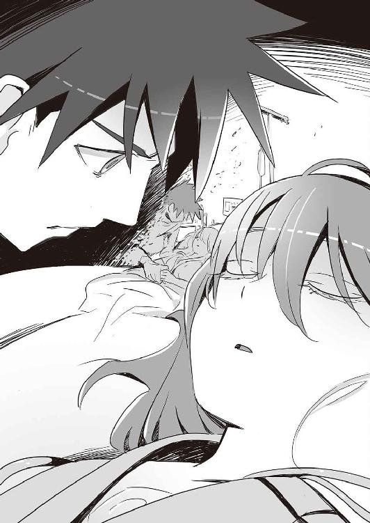
はっきり言ってくれる医者で助かった、と謙吾は思う。世の中で最もたちが悪いのは偽物の希望だ。それは出口に見えるが、どこにも通じていない。存在しない出口を探すほど不毛なことはない。偽物の希望とは、罠と同義だ。
「彼女に......触れてみてもいいですか」
「大丈夫ですが、あまり力を入れないでください。何が起きるかわからない」
担当医の言葉に謙吾はうなずき、
「わかってます。......大事な人ですから」
ユキナは安らかな寝息を立てているが、それは半死者の眠りだ。彼女が苦しんでいるように見えないことだけが救いだが、本当のところどうなっているのかはわからない。謙吾はベッドに向かってひざまずいて、そっとユキナの手をとった。冷たくはない。ユキナの肌のみずみずしさ、温かさは以前のままだ。
「ユキナ......」届かないとわかっていても、語りかけずにはいられない。「あいつに、何をされちまったんだ」
グリークス社長、ポイニクス型ＧＥＮＥＺをまとった男。ユキナの意識を奪うような男のために、謙吾は今までグリークスの兵隊として戦ってきたのか......。流してきた血は、死んでいった仲間たちにはどんな意味があったのか？ そもそも、あの男は何がしたかったんだ！ 謙吾の思考が怒りとともに加速する。海神学園を占拠した服部一徹は、グリークス社長に操られていた。あいつの言葉を思い出す──。
『そのうちの二台──剣歯虎型と恐鳥型のブラックボックスは、私にも開けることができない。服部の大事な仕事だったのに、まったく情けない』
なるほど。グリークス社長は、日本支社──厳島一族が自分の言うことを聞かないことに苛立っていた。そこでとった強行手段が、服部だった。失敗したときのために、社長は専用ＧＥＮＥＺまで用意してここに乗り込む機会をうかがっていた──。
次に何をするべきか？ 手がかりはある。服部は生け捕りにした。やつに知っていることをすべて吐かせる。それに、こちらに有利な点が一つある。──こっちは、敵がどこにいるか知っている。ポイニクス型ＧＥＮＥＺは、余裕たっぷりという感じだった。あいつは逃げも隠れもしないだろう。
社長は、社長がいるべき場所にいる。つまり、本社。
エーゲ海、サロニコス湾北部──サラミス島。その中央山地にあるツインタワー方式の巨大なビル。タワーの周囲は擬装陣地と防御建築によって要塞化済み。グリークス本社ビル──通称「双子の塔」。
──あいつはそこから動かない。絶対の自信があるからだ。
２
古来、オカルトと戦争にはきってもきれない縁があった。そしてそれは、現代も形を変えて残っている。魔法や呪術を軍事に利用した組織を「軍事隠秘学複合体」という。
海神学園の軍事隠秘学複合体といえば「特進クラス・秘術科」である。そこでは研究生たちが日々、過去の技術を発展させ、グリークスの戦力を強化するための開発と実験を行っている。──セルジュは、秘術科のラボで治療を受けている。グリークス社長のポイニクス型ＧＥＮＥＺの攻撃を受けて、腹部に大穴を開けられた。
秘術科の魔術師から、「ギリギリ致命傷ではない」と言われたので、謙吾は先にユキナの様子を見てきた。しかし死ななかったとはいえ、重傷であることは間違いない。いくら軍事用ゴーレムであるセルジュでも、あの敵はやばい相手だった。
謙吾がセルジュの個室に入ると、先にこども学長──厳島アイナがいた。小さな彼女の大きな目は真っ赤になっていて、その周囲には流した涙が乾いたあとがはっきりと残っていた。こども学長は、短い時間でひどく衰弱してしまったように見えた。
「謙吾......」と、弱々しい声でこども学長。
「セルジュは......」
「秘術科による集中治療は成功......今は、セルジュ本来の魔力とサラマンドラの力を使って昏睡再生中だとか。いずれ起きるらしいのですが、今はこの通り......」
セルジュも眠っている。ユキナと違うのは、彼の眠りには苦悶が伴う。こども学長は濡らしたタオルで時折セルジュを拭くが、それがなんの効果もないのは明白だ。
「起きたら......なんてことなかった、みたいな顔をしますよ。セルジュのことだ」
「ですよね......そうですよね......きっとすぐにいつもの調子で......」謙吾の言葉に納得したというよりは、こども学長は自分自身に言い聞かせているような口調だった。
「ユキナさんのほうは......いかがですか？」と、こども学長。
「起きないそうです」担当医に言われた通り、謙吾はきっぱりと答えた。
「それは......」言葉に詰まるこども学長。
「そんな顔しないでくださいよ、学長」謙吾は無理をして笑ってみせる。「起きない、といってもそれは『このままだったら』という話です。『やったやつ』に直接訊けば、きっと何かわかる。海神学園は、もちろん『このまま』ではすませませんよね？」
「......ええ」泣き腫らしたあとの弱気なこども学長の瞳に、ようやく闘志の炎が揺らめいた。
「作戦会議、いきますか？」謙吾は静かに、それでいてたしかな戦意をこめて言った。
「............」こども学長が、ゆっくりと立ち上がる。しかしその目にはまだためらいがある。
「離れたくない気持ちはわかります。俺も、できることならずっとユキナのそばにいたい」謙吾は言う。「......残念ながら、それでは誰も幸福になれない」
「......最初から、誰も幸福にはなれないようにできているのかも」
「そういうことも、あるかもしれない」謙吾は少し遠くを見るような目をした。「でもそれは、どうでもいいことです。俺たちの人生は、別に誰かの人生を再現しているわけじゃない。別に二度目ってわけでもない。......重要なのは、本当にそうかどうか自分でたしかめることです」
「自分で......たしかめる......」
こども学長が、ぼんやりと謙吾の言葉を繰り返した。謙吾は軽くうなずき、
「そういうものじゃないですかね。人生はゲームに似ているけどゲームじゃない。どんなエンディングを迎えようと、『経験値引き継ぎでニューゲーム』ができるわけじゃない。やれるだけやってみましょう、学長」
海神学園。高等部第一校舎一階、高等部学長室をミーティングルームとして使う。ためらいが完全に消えたわけではなさそうだったが、それでもこども学長は表面的には気丈さを取り戻した。学長室には、謙吾がいる。負傷しているものの、入院するほどではない堤彩離もいる。他にも、学園特進クラスが誇る精鋭主要メンバーがそろっている。
主要メンバー──そのうちの一人は、武装メイドの梓馬亜佑美だ。彼女は服部に拷問された。スタンガン責めだ──今も、背中には熱をもった傷が残っているはずだが、何事もなかったかのように振舞っている。とはいえ亜佑美は内心、彼女を守るために両腕を吹き飛ばされた林力也先輩のことを心配しているはずだ。表情をよく見れば、瞳の奥に暗い翳がさしている。
そして、張鐘翔太。ＧＥＮＥＺを着用しなくても、狙撃手の重要性は疑いようがない。彼の援護がなければ危ない場面は過去何度もあった。
ファンタスティック・スリーの三人も忘れてはいけない。コバさん、ヒデヨシ、鞠歌。海神学園が誇る凄腕ハッカー集団。......最強の切り札、七湖がくわわって「ファンタスティック・フォー」として活躍するはずだった。
さらに教師であり現場指揮官の大迫伝次郎もいる。学生傭兵育成機関という海神学園の性質上、大人たちの存在感はいまいちと言っていいが、後方支援や政府各機関との連絡調整など面倒な仕事はすべて彼らの仕事だ。
事情に詳しい主要メンバーで戦えそうなのはこれくらいだった。
「俺たちが使っているＧＥＮＥＺは亜佑美さんの母親──梓馬博士の開発だ」謙吾が切り出した。その言葉を聞いて、亜佑美は懐かしそうに微かに目を細める。状況が状況なので、彼女はすぐに表情を引き締める。
「俺たちのＧＥＮＥＺのブラックボックスは、社長にすら開けることができないらしい。恐らく、梓馬博士は社長の正体にうっすらと気づいていた。そこで、事情を知らない人間からすれば厳重すぎるような防御策を講じたわけだ。
社長は、ブラックボックスを開けたかった。そのために服部を使ったが失敗。さらに社長自ら乗り込んできたが、海神学園の戦力に包囲されて一時的撤退を余儀なくされた。服部の爆弾も無効化しておいたから、敵の予想よりも残存戦力が大きかったんだ。仕方なく、社長はユキナの意識を奪った......」
あの男ははっきりとこう言った。
『ナイチンゲール。お前の魂をいただく』
「さて、ここで第一の問題だ......」
と、謙吾は立ったまま腕を組む。
「そもそも魂とは何だ？」
「............」
その問いに、誰も答えることはできない。謙吾は続ける。
「魂とは脳の活動によって生じる意識のことなのか？ それとも、現在の科学では説明不可能な領域の話か？ 魂というものが便宜上存在するとして、それは抜いたり入れたりできるものなのか？ 俺が最初に考えたのは、ユキナの脳が死んでしまった、殺されてしまったのではないかという可能性だったんだが、医師によるとその状態とも違うらしい。生命は維持されているし、脳波も微弱ながら残っている。
つまり──事実として『魂は抜かれた』。これは、あの社長の特殊能力に違いない。そして第二の問題が出てくる。なぜ社長は、あそこでユキナをさらうのではなく、ユキナの魂だけを奪ったのか？ なぜいっそユキナを殺さなかったのか？」
彼女は不死身の特殊能力者「ナイチンゲール」なので、ここ最近はそんな心配をしたことがなかった。もしも、ユキナが「殺された」としたら──。そんな事態を想像するだけで、謙吾は深い穴に落下するような錯覚を味わう。ユキナと結ばれて、謙吾は生まれて初めて心の底から一点の曇りなく「生きていてよかった」と思えた。ナイチンゲールを失ったギルガメシュはあとをおって死ぬしかない。二人は不死を分かち合った。本来有り得ないはずの死が訪れるとするならば、それも共有するべきだ。
ここで謙吾は、自分がミーティング中だったことを思い出す。
「......何か理由がある。なぜ体ではなく魂だったのか......それはわからないが、とにかくユキナをあんな状態にした理由の一つは、間違いなくＧＥＮＥＺだ」
「ＧＥＮＥＺ？」と、顔に疑問符を浮かべる彩離。
「誘っているんだよ。こっちを」と大迫。「向こうは、ユキナを殺さなかった。そして、意識が戻る可能性を匂わせている。こっちは自然と奪還作戦を練ることになる」
「そういうことです」と教師の言葉に謙吾は同意を示し、「......そしてもう一つの理由は、ユキナの『魂』そのものに何らかの使い道があるという可能性だ。特殊能力で魂を抜いたとして、それで終わりというのはない気がする」
「こちらには不利なことばかり......」亜佑美が憂鬱そうにつぶやく。
「一個だけ、こちらに有利な点があります」謙吾は力をこめて言う。「敵がいる場所はもうはっきりしている。グリークス本社です」
「そんなわかりやすい場所にいるかね？」張鐘がもっともな指摘。
「いますよ」謙吾は断言。これに関しては揺らぐことがない。「あの余裕、あの自信......間違いない。たとえ相手が悪魔か神でも、逃げ隠れするようなタイプには見えなかった。こちらのことをナメきっている態度だ」
「場所がわかっていても......」
彩離が珍しく弱気だ。声も瞳も、震えている。
「......あんな強敵を、どうやって倒せばいいの？」
無理もない。彩離はグリークス社長──ポイニクス型ＧＥＮＥＺの実力を目の当たりにした。しかも、社長の部下であるシュー・ジンジンにさえ苦戦するありさまだ。
「しかも、敵は社長一人じゃないんだよ......！ 民間軍事会社グリークスの、海神学園以外すべてが敵になるんだよ？」
「彩離さんが言った通り」と、こども学長。「本社の戦力は当然、日本支部の戦力を凌駕しています。本社は、海上での防御のために軽空母を所有している。こちらが使えるのは強襲揚陸艦まで......」
ここで、こども学長のデスクにセットされたインターホンが来客を告げた。モニタ上の警備担当と短い会話を交わし、彼女は「通してあげてください」と許可を出す。
「お客さんですか？」と大迫。
「変わったお客さんです」と、こども学長。
そのあと、学長室に入ってきたのはバビロン・メディスン──「ニムロッド」の四人だった。
強化外骨格を使う特殊部隊ニムロッド。四人の男女──メガネをかけた武田爪兵は謙吾と同じ学生の特殊傭兵、不幸な死に方をした少女の幽霊のようにはかない雰囲気のアンナトゥリー、そしてクラウディア・フランチェスキーニと那須火沙里の女同士コンビ。このうち、アンナトゥリーと火沙里はナイチンゲールだ。
クラウディアは珍しい女性のギルガメシュ。中性的な美貌の持ち主。柔らかそうなブラウンの髪をショートボブにしている。鼻が高く、首が長いイタリア人。火沙里はデニム素材のジャンパーにミニスカートという服装。背が低く、眉毛が太く凜々しい。
謙吾たちにとっては間違いなく敵であるはずのニムロッドだったが、服部との戦いでは協力した。それは一時的な協同戦線に過ぎないはずだったが──グリークスの社長が敵になってしまった今、敵味方の区別がわからなくなってきた。敵の敵は味方という考え方もあるし、敵の敵はそのまま敵ということもある。
誰が敵で、誰が味方なのか。その識別が上手くできない人間は生存闘争に耐えられない。修羅場に踏み込めば真っ先に死んでいく。
「どういう状況なんだ？」
謙吾と少し睨み合ったあと、武田爪兵が口を開いた。
「そっちこそ、なんで戻ってきた？」と、険しい顔つきで謙吾。
「一度、イギリスのバビロン・メディスン支社まで行くつもりだったんだが......」苛立ちを隠さない、不機嫌そうな表情で爪兵が言う。「ここにグリークス社長が現れたって話を聞いてな。ぶち殺すつもりで戻ってきた」
「............」謙吾は、仮に彼らが社長と遭遇していたらどうなったかを想像する。結果は......何も変わらなかっただろう。負傷者、下手をすれば死者が増えるだけだ。
爪兵は神経質にメガネの位置を正しつつ、
「......言っておくが、同じ質問を何度もさせるなよ。今度質問に質問を返したらみな殺しにしてやる。いいな？ もう一度だけ訊ねる。どういう状況なんだ？」
爪兵の物言いに反発を覚えて眉間にシワを寄せる謙吾。すると大迫が二人の間を執り成すように、社長がやってきて何が起きたのかを簡潔に説明した。
「社長自ら海神学園を襲撃するとはな......」爪兵が、彼らしくない同情の口調で言った。「裏切りも出て、服部との戦闘のせいで海神学園の戦力は大幅ダウン、それでナイチンゲールは昏倒......八方塞がりじゃねぇか」
「こっちからも一個、そっちの腰が抜けそうな情報がある」
クラウディアが言った。
「おい」と、爪兵が顔をしかめる。
「別にいいさ」クラウディアは涼しげに微笑んだ。「こうなったら、海神学園とがっちり手を組むしかないよ。彼らと敵対しながら、真の敵を倒せると思うかい？」
「ふん......」爪兵は不満顔だったが、有効な反論を思いつくことはできなかったようだ。憎々しげに「勝手にしろ」と言うのが精一杯だった。
「実は......」
秘密が、クラウディアの口から語られた。
──グリークスとバビロン・メディスンの社長は同一人物。二つの会社の争いは出来レースに過ぎなかった。シンプルな話だが、のみこむのには時間がかかる。恐ろしくかたい食べ物を咀嚼しているうちに顎が痛くなってくるような、そんなタイプの事実。ただでさえ、色々なことが起きすぎている。まるでトラブルの満漢全席だ。
謙吾は比喩ではなくめまいがした。ユキナのことだけでも頭がいっぱいなのに、さらにとんでもない事実を突きつけられた。長い間学生傭兵をやっている。戦場では、噓つき・腰抜けを瞬時に見抜くことができなければ生き残れない。観察力がない兵士は早死にする。クラウディアが噓をついていないことくらい、話し方と表情でわかる。
それに、謙吾は彼女が戦士だと知っている。半ば以上成り行き任せの協同戦線だったとはいえ、命がけの戦いをともに切り抜けた仲だ。人を騙してどうこうしようという人間には、そこまでできない。
クラウディアはまだ「物的証拠」を確定するまでには至っていないが、すでに手がかりとなるＤＮＡは入手しているのだ。時間の問題と言って良かった。
もう一度、謙吾はクラウディアが言ったことを自分の心のなかで繰り返す。グリークスとバビロン・メディスンの社長は同一人物。──だとすれば、今までの戦いはなんだったのか？ 謙吾が流した血は？ 傷ついた仲間、死んでいった仲間たちの意味は？
そして......謙吾が「敵」を殺してきた、傷つけてきた意味は？
戦ってきたのは、報酬......金のため？ いや、そうではなかった。グリークスの戦いには、それなりの価値も意味もあるはずだったのだ。
すべてが崩れ去っていく。
謙吾は状況を理解していく。
ここで選択を間違えたら、恐らく何もかもを失うことになる。
こども学長も彩離も、梓馬亜佑美も張鐘翔太も、大迫もファンタスティック・スリーも、みなが陰鬱な表情で頭を抱えている。手に入れた事実が重すぎた......。それでも、今日ここに集まったのは反撃の作戦を立案するためだ。いつまでも黙りこくっているわけにはいかない。こども学長が口を開く。その声は気丈を装っていても、結局微かに震えている。
「......新しい事実も踏まえた上で、話を先に進めないといけません」
「その通りだな」と爪兵。「まあそりゃ大変な事態だ。驚くさ。信じられないだろう」まるで他人事のように言う。「ショックを受けるのはわかる。俺だって足場がぐらつく感じを味わった。──だが、早めに立ち直らないと本当に人類文明の危機につながるかもしれない」
爪兵の言葉に引っかかるところがあって、
「なぜ、人類文明なんて大袈裟な言い方を？」
と謙吾は口を挟んだ。
「大袈裟じゃないからだ」
大真面目な顔で爪兵が答えた。
「グリークス、バビロン・メディスン社長のセルジオ......やつの狙いは、第三次世界大戦だよ」
３
とりあえず、服部を尋問することになった。
海神学園を一時的とはいえ占領した男、謙吾の母を殺した雇われテロリスト──服部一徹。
彼は今、特進クラスの兵器格納庫、その地下室に監禁されていた。ここには、特進クラスの生徒でも滅多に足を踏み入れることはない。捕虜監禁区画となっている。殺風景な通路の左右に、厳重な合金製の扉が並んでいる。捕虜はすべて個室に収容、基本的に全裸だ。服部も陰部が丸出しの状態で、床に備え付けの鋼鉄の椅子に拘束されている。両手両足、すべての指、そして首に、プラスチックの紐が巻きつけてある。
鋼鉄の椅子には、ペニスと肛門の部分だけ穴が開けてあった。そしてそこには、排泄物を片付けるためのバケツがセットされている。ここに収容するような捕虜には、トイレにさえ行かせない。バケツにたまった排泄物には、相手がなかなか情報を吐かない時に使う。
普段捕虜には、舌を嚙まないように革製の猿轡がはめてある。実際は、舌を嚙んでもそう簡単には死なないが、いちいち治療するのが面倒なので猿轡が役に立つ。
服部は、謙吾たちとの戦闘で負傷していた。レーザーライフルが脇腹を貫通。左肩の付け根と右太腿に深い刃物傷。さらに、両目も横一直線に切り裂かれていた。──現在は、すべてに応急処置がされている。簡単に死んでもらうわけにはいかない。
謙吾が中に入って猿轡を外すと、厳しく拘束されて視力も失っているのに服部は笑った。
「気配でわかるぜ......てめえ大牙謙吾だな！ 俺のチンポでもしゃぶってろバァカ！」
「そういうところは『さすが』としか言いようがないな」
謙吾の顔には一切表情がない。そうなるように、心を殺している。今はそれが必要な時間だと理解している。
「拷問部って知ってるか？ そういう特殊部活動が日本にはいくつもあるんだよ。うちの学校にあるし、近所の女子校にも一つある。彼らはその道のプロだ。服部一徹を拷問するって話になって、プロに任せるという選択肢もあった。でも、俺はそれを拒否した。せっかくお前をいたぶることができるのに、それを他人に任せるなんてもったいないだろ？」
「おいおい、悪ぶるなよ。そんな。無理すんなって......」服部は謙吾にギャハハと嘲笑を浴びせた。ガラスを鉄の爪で引っかく音のように耳障りな笑い声だった。「今は見えてないが、お前の顔は覚えてるぜ。戦い慣れてはいるが、根っこは甘ちゃんさ。女に振り回されるのがお似合いのフニャチンだ......俺をビビらせようなんて百年はええよ。何があったのか知らないが、困り果ててるのが伝わってくるぜ......俺の口を割らせる？ 無理無理、無理だって。お前の拷問なんてたかが知れてる......」
大したものだ、と謙吾は思った。困り果てているのは本当だ。謙吾が甘ちゃんだというのも当たっている。これほど追い詰められているのに、服部の状況認識はある程度正しい。──しかし、彼は一つだけ完全に間違っている。それは「お前の拷問なんてたかが知れてる」というところだ。服部には、この大牙謙吾が、好きな女のためならどこまで残酷になれるのかがわかっていない。
謙吾が服部に対して殺意をむき出しにしたとき、ユキナは言った。
『謙吾......邪悪な顔をするのはやめて』
そのときは、彼女のおかげで荒ぶった気持ちを鎮めることができた。──が、今はユキナは眠っている。謙吾の憎しみや怒りを止められるものは、いない。
『お前の母親......文字通り木端微塵になったって聞いてるぜ。見たかったな......』
服部は、そんなことを言っていた男だ。
「拷問部ほどじゃないが......」謙吾は、服部の耳元でささやいた。「......俺も、そんなに苦手なわけじゃないんだよ」
監禁部屋の床はタイル張りで、どんなに大量の血が流れても簡単にホースの水で洗い流すことができる。隅には、大量の拷問器具が用意された作業デスクとスチールの棚がある。引き出しを開けて、中から使えそうな道具を選んでデスクに並べていく。メスも糸ノコギリも、きれいに消毒済みだ。拷問には時間がかかる場合もある。感染症対策はしっかりしておかないといけない。
「うちの医療班が、お前を治療するついでに血液検査をやっておいた。......なんでも、高濃度の化学薬品が何種類も検出されたってさ。つまりは、自白剤対策なんだろう？ 麻薬を注射しても中毒になりにくいとかなんとか......」
謙吾は、チタンでできた長さ六センチほどの針をとりあえず一本、指でつまんだ。
「それが逆に、お前の首を絞めることになるんだ」
頑丈な特製の針を、厳重に拘束されてまったく動くことができない服部の人差し指に突き刺した。爪と肉の間に、ぐい、と押しこむ。針先が柔らかい肉を突き破って、一瞬で平たい爪に血が滲む。いわゆる「針でマニキュアを塗る」というやつだ。
「その程度かコラァ！」服部が叫んだ。
「もちろん、この程度ですむわけがないだろう」
まだ、爪と肉の間に針を刺しただけだ。こんなもの拷問としては前菜もいいところだ。
「謙吾」
唐突にドアが開いて、監禁部屋──今は拷問部屋といったほうが正確だが──に教師の大迫伝次郎が入ってきた。
「そこまでだ、謙吾」
「先生」
「ここから先は、大人の仕事だ」
「そんな、いまさらじゃないですか」
謙吾は半ば反射的に非難の声をあげた。──今までに自分が、どれだけの汚れ仕事をやってきたと思っているのか。大人の仕事を子どもにやらせるのがＧＥＮＥＺという兵器ではなかったのか。少年兵というシステムを、グリークスも利用してきたのではなかったのか。
「今、昏睡状態のユキナさんだって、喜ばないよ、こんなの」と大迫。
「............」その言い方はずるい、と謙吾は思う。そんなことはこちらにだってわかっているのだ。わかっていても、そこをごまかして、心を鬼にして──。
「大丈夫だよ」
大迫は目を糸のようにして笑った。それから拷問用の道具棚に歩み寄って、手回しのハンドドリルを選んで手にとる。
「こいつはきっちりカタにハメる」
大迫はハンドドリルの尖端を服部の右頰に当てた。ハンドルを回す。鋭いドリルが回転し、皮膚と肉に穴を開ける。服部の口から悲鳴と血とよだれがこぼれた。
ドリルが、頰を簡単に貫通して、服部の奥歯に当たった。ガリガリと嫌な音がして、カルシウムが焦げる臭いがたち──奥歯が砕ける。
大迫はハンドドリルを抜いて、道具棚からプラスドライバーと小型携帯ガスバーナーを取り出した。ドライバーをバーナーで色が変わるまで熱してから、ドリルで開けた服部の肉の穴に突っ込む。頰に穴が開いて奥歯も砕けたので、多少不明瞭ではあったが、それでも服部は盛大な悲鳴をあげた。ぎゃあああヒィいイイ──と、心の底からの悲鳴だった。
「......わかりました。お任せします」
「それでいい、謙吾。熱くなりすぎるな」
拷問を進めていく。大迫は、痛みのあまり気絶した服部に氷水を浴びせる。
「この海神学園で教師になる前は傭兵をやっててねぇ」
無理やり覚醒させた服部に、激痛を与える作業を再開する。間違っても命を奪わないように輸血と止血をしながらの拷問だ。謙吾から大迫にバトンタッチしてから二時間。すでに服部は四本の指と右足首を切断されている。
「......自衛隊と関わりがある傭兵部隊でね。極秘裏に日本政府の依頼を片付けていた。当然、汚れ仕事も多くてね......。中国の政治家の暗殺、中国のハニートラップに引っかかった日本の外交官を拷問後に殺したり......北朝鮮やロシアも俺たちの戦場だった。教師になってからはずいぶん楽をさせてもらったよ。超兵器で武装した少年兵に全部お任せだったんだから」
ここで大迫は一休み。服部を焼くのに使ったガスバーナーでタバコの火をつける。美味そうに紫煙をくゆらせる。
「......でもね、やっぱり子どもに頼りすぎってのはダメだね。当たり前の話だけど、大人がやるべきことは大人がやらなきゃあ......」
火のついたタバコを、服部のペニスの先に押し当てる。
４
「吐いた」
「誰がですか？」
「服部一徹」
大迫はシャワーを浴びてさっぱりしたあとだった。学長室に、再び特進クラスの主要メンバー──ニムロッドの四人も含む──が集まっている。それぞれ食事や仮眠をとったあとだ。
「バビロン・メディスンの社長とグリークスの社長が同一人物だということは、服部も知っていたみたいだ」
「これから先は、『セルジオ』で統一しましょう。ややこしいので」と、こども学長。
「それがいいでしょうな」大迫も同意する。「服部の目的はやはりナイチンゲールとＧＥＮＥＺでした。日本支社が運営する剣歯虎型と恐鳥型。ごく少数の人間にしか開けることができないブラックボックス。セルジオらには、誰が開けられるのかさえわかってない。服部が吐いた情報の続きだ。海神学園特進クラスには裏切り者が二人いるらしい。セルジオに協力していたのが......布施七湖」大迫は言いにくそうな顔だった。七湖の裏切りに関しては、まだ誰も整理がついていない。気を取り直して、続けて言う。「もう一人は、岩清水ニキに協力していたそうだ。まだ、それが誰かはわからない。ニキはセルジオの仲間だったはずなんだが......最近は別行動をとっているとか」
「仲違いしたのかな？」不思議そうに彩離。
「詳しいことはまだ不明」と大迫。それはそうか。
「セルジオは......ナイチンゲールを使って何をしようとしているんだ？」
張鐘が口にしたのは、根本的な疑問だった。
「必要なのは、『特別な』ナイチンゲールらしい。それは現在確認されているのは、ユキナだけとか」大迫は言った。これも服部からの情報か。
自然と「特別ではない」ナイチンゲールという扱いにされたアンナトゥリーと火沙里が顔を見合わせた。別に特別でありたいと願っているわけではないが、あからさまに「普通」と言われるとなんとなく納得いかない──という顔だ。
「特別なナイチンゲール......ユキナの『魂』を奪っていって......そして？」張鐘が考えこむ。
「そこから先は、もちろん、服部も知らない」
「特別なナイチンゲール......つまりユキナ。そしてＧＥＮＥＺのブラックボックス。その二つが敵の目的だった。そして敵は、ユキナを拉致するのではなく『魂』を盗んだだけで満足して逃げた」謙吾が整理していく。「つまり、大事なのは『体』ではなく『魂』だった。それがあれば十分だった」
ここで謙吾はこども学長に向き直り、「学長」
「......はい？」
「ＧＥＮＥＺのブラックボックスは開けられますか？」
「......私には無理です」
こども学長の言葉に、謙吾たちはがっくりと肩を落とす。しかし──。
「でも、誰が開けられるかは知っています」と、こども学長は射貫くような視線をその女子生徒に向ける。「梓馬博士の一人娘......梓馬亜佑美さん」
「──ッ！」
その場にいる全員の注目が、彼女に集まった。
「絶対に秘密だって母には言われてました......」武装メイド部の部長──梓馬亜佑美は過去を懐かしむように微笑する。「それを知られれば、狙われる、と。......そうです。私には開けることができます」
問題が一つ解決した。だが。
「一個だけ問題が」
亜佑美の口から、すぐに次の問題が持ち上がった。
「ＧＥＮＥＺのブラックボックスは、飛行機などで使われている通常のブラックボックスとは違います。開けると同時に、自爆回路が働く。重要なデータを取り出すことはできますが、そのあともう兵器としては使えない。剣歯虎型か恐鳥型......どちらのブラックボックスを開けるのかはさておき、かわりのＧＥＮＥＺ──新たなＤＮＡコンピュータが必要になります」
「それについては、提案があります」
第二章
１
海神学園の敷地内には、謙吾たちが通う高等部の他に、海神大学や海神中学校の施設も入っている。そしてそのすべてに、学生傭兵育成機関──特進クラスが存在する。
こども学長──厳島アイナは、厳重なセキュリティシステムで守られているエレベーターを使って、大学部特進クラスの地下四〇メートルまで降下。グリークス日本支部の作戦指令本部。モニタやコンソールが並んだ大部屋で、支部のスタッフが忙しく立ち働いている。武装した警備員たちとすれ違いながら、さらに奥へ。
大学部特進クラスの地下施設、厳島一族専用のプライベートルーム。警備員も防犯カメラも存在しない、秘密の空間。アイナや、その兄シキサギの聖域。前にやったとき、こども学長はこっそり忍び込んだが、今日は正式にアポをとってプライベートルームのシキサギを訪ねる。
シキサギの部屋──ＳＦ映画のセットのように洗練された空間。低反発素材の真っ白なソファに、冷静な美貌のシキサギが座っている。彼もかなり忙しいようで、目の下に睡眠不足のくまができている。
「......お前が正式なアポをとるなんて、嫌な予感しかしない」
いきなり、シキサギは憂鬱そうに言った。
「たぶん、お兄さまがとても嫌がる話です」
アイナは、兄に気持ちで負けないように強い声を出す。まずは、態度だ。人間の感情は体についてくる。強い声、強い態度をとっていると、いつの間にか気持ちも前向きになっていることもある。
「無駄な時間はいい。さっさと話せ」
「お兄さまのパソコンを見せていただいたとき──」
「『見せていただいた』ではなく『勝手に盗み見た』んだろう......」
「蒸し返さないでくださいな」
「まあいい、それで？」
「......ＧＥＮＥＺがもう一台、必要です」
シキサギの片眉がぴくり、と跳ねて、
「なんのために？」
「無論、本社に......グリークス＝バビロン・メディスン社長、セルジオ・ガルヴァーニに反撃するためです」
「まったく......」シキサギはこれみよがしにため息をつく。「本社と敵対するのが早すぎる」
「ちょっと待ってください......」アイナの眉間に余計な力がこもった。「早すぎる？」
「こちらにも予定というものがあったんだ。それを、セルジオとお前で勝手にどんどん時計の針を進めていった」
そういえば──アイナは思い出す。シキサギが言っていた。
『グリークス日本支部は、会社として独立するかもしれない』
『グリークス本社は、会社が二つに分かれる事態を歓迎しないだろう。この動きを察知されれば、妨害工作、あるいは露骨な奇襲もありえる。前回、ギリシャでナイチンゲールとギルガメシュが狙われたのは向こうの遠回しな宣戦布告だったのかもしれない』
「......私の方は何もしておりませんが......？」
アイナは言った。
シキサギは舌打ちして、
「大牙謙吾と岩清水ユキナを組ませて、どんどん成長させていっただろう。それまでの戦いを見れば明らかだ。この二人は『世界で最も相性のいいギルガメシュとナイチンゲール』である......その事実が判明して、向こうは動かざるをえなくなった。少し離れて見ていた私にだってわかるほど、あの二人は惹かれ合っていた。セックスを重ねて、『生物ユニット』としての完成に近づいていくのは時間の問題だった」
「......はい？」聞きなれない──あまり使ったことがない単語があって、アイナは思わず訊ね返した。
「二人はセックスしたんじゃないのか」
「せ、せ、せ、せっくす!?」
アイナは瞬間湯沸かし器となって、慌てふためく。
「つまらないことで慌てるな！」珍しくシキサギが感情をあらわにした。「その程度の言葉に過剰に反応するな！ こっちまで恥ずかしくなるだろう！」
「せせせセックスが、ギルガメシュとナイチンゲールに関係あるのですか？」
「ある。細かい条件やメカニズムはまったくわかっていないが、な。無関係でないことだけは間違いない。ただし、それは、外部の力で無理やりやらせてもなんの効果もないことが判明している。だからこそ私たちはそのことを秘密にしておく必要があった。『意識させて』はダメなんだ。......ＧＥＮＥＺの正式名称は知っているな？」
アイナはなんとか冷静さを取り戻し、
「......獣系遺伝子制御強化外骨格、ジーン・スーツ。通称ＧＥＮＥＺ」
「その通り、鍵を握るのは『遺伝子』なんだ」
「......！」どういうことなのか──アイナにも少しずつわかってきた。ＧＥＮＥＺに搭載されているのは、人間のＤＮＡの構造を模した回路を持つ特殊なコンピュータだ。兵器用としては、あまりにも高性能・複雑すぎると言えなくもない。
「より強い遺伝子を作るためのスーツ。生殖能力を強化するためのスーツ。それがＧＥＮＥＺだ。その戦闘能力はおまけ、と言っていい......」ここでシキサギは、「さて」と最初の話に戻した。「もう一台ＧＥＮＥＺが欲しいんだったな？」
「そうです」セックスという単語に混乱してしまった。アイナ自身、自分が何を要求しにきたのか、危うく忘れてしまうところだった。
「ない、と答えたいところだが」
「あるのはもう知っています。プロジェクトＫ・Ｉ、とやら......」
アイナにとっては詳細不明──Ｋ・Ｉ計画。そのかなめは新型のＧＥＮＥＺだという。
仮称──ヤマタノオロチ。初の純国産、日本支部独自開発。
シキサギはメガネの位置を神経質そうに中指で正す。
「『ヤマタノオロチ』には欠点がある」
「性能上の欠点ですか？」
「そうじゃない。それは欠点というより懸念だな。......敵が最も望むものは、『ヤマタノオロチ』かもしれない。つまり、あれを着て戦いに赴くのは、腹をすかせた狼に羊を差し出すことになりはしないか、と。そういうことだ」
「『ヤマタノオロチ』には、敵が望む何かがある？」
「だから、さっきからそう言っているだろう」
「それは、なんですか？」
「『命』だよ。『ヤマタノオロチ』は生きている。生命のＧＥＮＥＺ。セルジオ・ガルヴァーニが欲しているのも、まさにそれだ」
シキサギが立ち上がった。
「ブラックボックスを開くなら、ＧＥＮＥＺ剣歯虎型がいいだろう」
「......ということは、ヤマタノオロチの装着者は大牙謙吾ということに」
「彼の遺伝子なら適合することがわかっている。新しいＧＥＮＥＺ・ヤマタノオロチは、すでに実戦投入可能な状態だ。しかしスペック的には、剣歯虎型とそれほどの差はない」
シキサギの言葉に、アイナは意外そうな顔をした。剣歯虎型とそれほど差はない性能？ 日本支部独立の切り札としては物足りないのではないか。
「せっかくの新型なのに......？」
「日本支部だけで開発することの限界にぶち当たった」
しかし、とシキサギは言葉を継ぐ。
「剣歯虎型のブラックボックスに蓄積されたデータを転用すれば、ヤマタノオロチの戦闘能力は飛躍的に上昇するのではないかと考えられている。......剣歯虎型のＤＮＡコンピュータや電子神経回路は『自壊』するが、それはいわばヤマタノオロチに『生まれ変わる』ための儀式のようなものだ」
２
格納庫の一角──複合強化ガラスによって四角く区切られたメンテナンス・ルームで、剣歯虎型のブラックボックスを開けることになった。神像のように立ち尽くすＧＥＮＥＺの周囲を、技術スタッフが忙しく動き回っている。謙吾は、そんなメンテナンス・ルームの様子を、強化ガラス越しに眺めている。たしかに謙吾は剣歯虎型ＧＥＮＥＺの操縦者だが、その技術面にまで明るいわけではないので、特にやることはない。
やることはない、のだが──。
謙吾にとって、このＧＥＮＥＺは長年の相棒と言ってもいい。それが、ブラックボックスを開けると、ほんの数時間で自壊するという。主要なファイルを抜き取られたＤＮＡコンピュータと人工神経がアポトーシスのように消えてなくなる。ゆえに、再現も復旧も不可能なのだ。これ以降、剣歯虎型は予備のパーツとしてしか使い道がないという。......そういう風に言われたら、謙吾はひどく気分が落ち込んでしまった。自分の体の一部を失うような痛みがある。
ＧＥＮＥＺは兵器以上の何かだ。ただの使い捨てではない。
（かといって、子どもみたいに駄々をこねるわけにもいかないけどな......）
謙吾にも、剣歯虎型のブラックボックスを開けるのが絶対に必要なことだというのは理解できている。ここは、敵に勝つことだけを考えるしかない。これからグリークス本社との戦いが待っている。
（じゃあな、相棒）
謙吾は、ついさっきヤマタノオロチを見てきたばかりだ。まだ装着はしていないが、テスト映像などを見る限り使えそうな感じだった。それが、ブラックボックスのデータ移植によってさらに劇的に性能が向上するという。
恋人を簡単に乗り換えるようで、申し訳ない気分になる。
相棒の、最期の姿を目に焼き付けておこうとする謙吾の隣に、すっとメイドの梓馬亜佑美が近づいてきた。
「どうも」
「ええ」
「よろしくお願いいたします」
「私ね......あなたのこと嫌いだったんですよ」
軽く挨拶を交わしたあとに、いきなり強い言葉が出てきて謙吾はぎょっとした。
「俺のことがですか？」いや別に、それほど好かれていると思っていたわけではないが──はっきり嫌いと言われると動揺してしまう。
「前、ユキナさんがこの海神学園にやってきたばかりのころ、私が彼女を拉致監禁したのを覚えていますか？」
「ありましたね。そんなこと」
あれはたしか、ユキナを調教して無理やり武装メイド部に入れるためだったはずだ。結果的にユキナは、調教なしでもその部に入るわけだが──。
「あれは、ＧＥＮＥＺの操縦者であるあなたへの嫌がらせ──そんな意味もあったんですよ。あなたが嫌い、というのはちょっと違うかもしれません。ＧＥＮＥＺが嫌いでした」
「............」ちょうど剣歯虎型のＧＥＮＥＺを相棒のように思っていたところだったので、それはそれで複雑な気分になる謙吾。
亜佑美は切なげな微笑を浮かべて言う。
「私の母は離婚して、あとは研究一筋。子どものころはずいぶん寂しい思いをしました。まあ、『専門技術に優れたシングルマザー』の家庭にはありがちな話です。両親がそろっていても寂しい家庭は寂しいものですから、母を責めるつもりはありません。母の頭脳・才能はグリークスのために必要な物だった......。母はＧＥＮＥＺの研究に短い一生を捧げた。ＧＥＮＥＺの秘密を巡る戦いに巻き込まれて、死んでいった」
ＧＥＮＥＺ開発スタッフのリーダーだった梓馬真唯子博士。グリークス研究部門のトップだった。ＧＥＮＥＺの封印部分──いわゆるブラックボックスを開けるために、バビロン・メディスンが梓馬博士を拉致しようとしたことがある。護衛を殺されて窮地に陥った博士は、自白剤を注射される前に自ら命を絶った。命を捨てて、ＧＥＮＥＺの秘密を守った。──今思えば、バビロン・メディスンもグリークスも同じ社長の下で働いていたわけだから、梓馬博士は絶対に逃れることはできなかった。日本支社と本社は水面下で対立していたので、梓馬博士の護衛はきっと本気で彼女を守ろうとしていたのだろう。──そして、みんな死んでいった。情報漏れは避けられなかった。これも出来レースの一つ。
「ほら、嫌いになるのもわかるでしょう？」
「......たしかに。でも、それならなぜあなたはグリークス......海神学園に？」
「だって、母がどんなものを守ろうとしたのか、気になるじゃないですか」
亜佑美の笑顔の質が変わった。白い歯が見えて、本当の意味で笑顔になった。
「ＧＥＮＥＺは嫌い。でも、ユキナさんが武装メイド部に入って......色々な戦いがあって、私の考え方も変わってきたと思います」
「じゃあ......正確には嫌い『だった』」
「そうですね......『大好き！』というわけでもありませんが、そこは過去形にしてもいいんでしょうね」そして亜佑美は力強く一歩踏み出す。「今日は、私がＧＥＮＥＺと改めて向き合う日なんです」
亜佑美は、強化ガラスの内側に入っていった。メンテナンス・ルーム。ＧＥＮＥＺの聖域。今日はただのメンテナンスではない。精密部品にほんの小さな埃もつけないように、防護服を着て消毒・滅菌処置を受ける。生体認証が必要になるので、手袋だけは外して、指を専用の薬剤で念入りに洗ってから、ようやく二重隔壁のドアを通って剣歯虎型ＧＥＮＥＺの前へ。
ブラックボックスのために、剣歯虎型はすべての装甲が開放状態になっていた。両手を大きく左右に広げた状態で、ワイヤーやケーブルによって宙に浮いている、内部がむき出しの戦闘兵器。蛹から孵化した美しい蝶が、まさに飛び立つ瞬間のようにも見えるが、今から行われるのはそれとはまったく逆のことだ。このＧＥＮＥＺはある意味──「死ぬ」のだ。新しい戦闘兵器のために。相手は生物ではないとはいえ、亜佑美も少し哀れに思う。それでも、兵器は兵器なのだ。仮にこのＧＥＮＥＺに意識があったとしても、泣き言は口にしないはずだ。「彼」も兵器なのだから。
「兵器であり、私の作品でもある」
母の、そんな声が聞こえたような気がした。
ＧＥＮＥＺの封印部分は、ちょうど後頭部の部分にあった。結婚指輪を入れておくような小型ケース。普段は、薄いが堅牢な複合装甲によって隠されている。それを無理に開けようとすれば、内部のデータは吹き飛ぶし、開けようとした人間を確実に殺せるくらいの威力でスーツそのものが爆発する。
「母さん......」その小型ケースに向かって、亜佑美はささやいた。まずは声紋認証だ。梓馬博士の実の娘だと確認。最初のロックが解除される。亜佑美はＧＥＮＥＺに頰を寄せる。
──不思議なものだ。こんな風に近づくと、母親に甘えている気分になってくる。これは兵器で、とても男性的なのに、亜佑美にとっては母の分身の一つなのか。
「色々とごめんね」また、幻聴。母の声。
「いいんです。楽しんでますよ、私」亜佑美は小声で、幻聴に答えた。
ずっと前に死んだ母との抱擁。亜佑美は小型ケースにキス。生体認証。絶対不可侵とされていたブラックボックスが開く。
──データの移植作業が終了した。ブラックボックスを無理やりこじ開けたわけではないので、剣歯虎型ＧＥＮＥＺの「自壊」はゆっくりと安全に進んでいく。傍から見ているぶんには、疲れ果てた兵器が眠りに落ちていくようだ。それを謙吾はじっと見つめている。だんだん、これでよかったんだ、という気持ちになってくる。このＧＥＮＥＺは戦いすぎたほどだ。長く戦場にいすぎた。返り血を浴びすぎた。どんなものにでも休息は必要だ。この戦いが終わったら、次に休むのは謙吾のほうだ。本社との戦いに勝つにしても負けるにしても、これから先謙吾がグリークスの傭兵として働くことは二度とない。もう人殺しにはうんざりだ。ユキナと平和に暮らせればそれでいい。望みはそれだけ。
３
亜佑美によって、剣歯虎型ＧＥＮＥＺのブラックボックス・データが、安全な形で取り出された。それはすぐにコピーされ、ヤマタノオロチのＤＮＡコンピュータと保全機能に優れたハードディスクドライブに分けて移植される。ＨＤＤのデータは、日本支社のスーパーコンピュータに回されて解析開始。解析には時間がかかるが、ヤマタノオロチはすぐに再起動する。剣歯虎型の戦闘データ──「遺伝子」を受け継いで、真の性能に覚醒する。
謙吾の新たな「力」──純国産ＧＥＮＥＺヤマタノオロチ。
それは着用した人間の「遺伝子」を吸収し成長していく半生体スーツだ。ＧＥＮＥＺヤマタノオロチそのものに「再生能力」がある。その表面は、赤黒い人工筋肉装甲。ただ硬いだけではなく、弾力もあるので、通常の砲弾や徹甲弾を上手く後方に「そらす」ことができる。前腕に伸縮式の凶暴な牙、手足に爪が用意されている。古代の鎧武者──あるいは恐ろしく筋肉質な赤鬼。そんな外観。
謙吾は、ヤマタノオロチ専用のスキンスーツに着替えた。剣歯虎型ＧＥＮＥＺのときに使っていたスーツよりも、やや分厚く、この時点ですでに筋力強化機能がついている。それから、ヤマタノオロチに乗り込む。背中側の装甲が開放されているので、まず足をさしこんで、それから両腕。固定してから装甲を閉じる。ヘルメットは別パーツなので、頭部はむき出しだ。スキンスーツとＧＥＮＥＺの密着を確認してから、飾り気のない筋兜に似たヘルメットを被る。内蔵のヘッドマウントディスプレイが起動。音声で初期設定。
「歩兵課特殊強化白兵戦小隊。大牙謙吾特務大尉。チーム名『ビーバス＆バットヘッド』。ユニット暗号名『バットヘッド１』」
『新たなユーザーを認証します』
新たなブラックボックス。ＤＮＡコンピュータのアップグレード。制御系をチェック。電装系をチェック。人工筋肉、高分子モーター、アクチュエータの連動をチェック。センシングも問題なし。火器管制システム、オールグリーン。主動力──超高出力の新開発燃料電池・バイオ電池も順調に稼働。気密性チェック、対ＮＢＣ兵装チェック。
──通常モードでの行動開始。
「新型か......装着感がぜんぜん違う......」
剣歯虎型ＧＥＮＥＺは要求したことに素直に応えてくれる機体だった。そのストレスのなさが、最強の強化外骨格だった理由だ。しかし、ヤマタノオロチはさらにその上を行く。ストレスがないのは当然だ。スーツを着ているというより、自分の筋肉量が増えた感じ。
ヤマタノオロチをまとった謙吾は格納庫を出た。海神学園のグラウンドに出る。緊急事態なので授業はすべて中止。敷地内には関係者しかいない。
恐鳥型ＧＥＮＥＺをまとった彩離が待っている。
時間の余裕はないが、戦闘訓練なしでヤマタノオロチを実戦に出すわけにはいかない。彩離はその相手に最もふさわしい相手だ。背中から大きな翼を生やし、鋭い爪のついた脚部が特徴的な恐鳥型スーツ。高性能過酸化水素エンジンを使ったジェットパックで短時間の飛行可能。今日はさらに、大出力補助ジェットパック、追加燃料タンク、ミサイル対策にデコイとチャフ散布機を装備。全体的なシルエットがより攻撃的になり、翼の長さは倍に。最大戦闘高度は六〇〇〇メートル。瞬間的になら音速が出る。
恐鳥型ＧＥＮＥＺ、空戦強化タイプ。
「どれくらいの力でやる？」ＧＥＮＥＺの内蔵無線で彩離が言った。
「全力で」と、きっぱり謙吾。「ヤマタノオロチは、すぐに決戦に使う。限界に近いところを一度確かめておきたい」
他に誰もいないグラウンド。海神学園特進クラスの教官や技術者たちが、遠くからデータを収集している。走りだすＧＥＮＥＺヤマタノオロチ。はちきれそうに膨らんだ人工筋肉装甲が躍動する。たちまち時速一五〇キロまで加速。勢いをつけて恐鳥型の彩離に飛びかかる。
「！」
一瞬で間合いを詰めてきた謙吾に、驚きを隠せない彩離。すかさず謙吾は飛び後ろ回し蹴り。当てるためではなく、ヤマタノオロチの運動性能を確認するための大技だ。彩離はバックステップでその蹴りをかわ──かわせない。間に合わない。慌てて両腕を組んでブロック。凄まじい打撃音。ブロックしたのに、彩離は後方によろめく。
「なにその速度......！」
謙吾はさらに攻める。「牙」は前腕に収納したまま、拳で殴る。砲弾のようなパンチ。それが彩離のヘルメットをかすめて、特殊合金の火花が散る。
そのまま謙吾は左右の拳を連打。彩離を追い詰めて、ガードを固めさせたところで、ひょいとてのひらで相手の腕を崩して肘打ちを叩き込む。ガツン！ と重い音。また火花。素早い連打を繰り出しながらも、謙吾は冷静に電池の残量をチェック。まったく問題なし。長期戦にも耐えられるパフォーマンス。
「くっそ！」
彩離は反撃の蹴りを打った。ロー、そしてミドル。威力よりも連打を重視した蹴り。とにかく謙吾の動きを止めたがっている。謙吾としては自分の動きを一瞬でも止めたくなかったが、そこは彩離の格闘戦能力も常人離れしている。
蹴りを打ちながら、彩離はジェットパックに点火。推進力を得て、仕切りなおすために空中に逃れる。
剣歯虎型ＧＥＮＥＺなら、これで追跡の手はなかった。しかし、ヤマタノオロチは違う。背中側に、普段は目立たないが、固体燃料ロケットが埋め込まれているのだ。装甲の一部が変形して、可変ノズルが姿を現す。燃料の搭載量から、長時間の飛行は無理だが、空中の敵に対して手も足も出ないということはない。
「しかも、ちょっとだけなら飛べるとか......！」
空中戦になる。
謙吾は確信する──このＧＥＮＥＺは、恐ろしく強い。
剣歯虎型ＧＥＮＥＺには悪いが、この性能でなければあのポイニクス型には勝てない。
「まったく......」
謙吾と彩離のスパーリングを、厳島アイナが校舎の屋上から双眼鏡で眺めている。二人とも、はりきりすぎだ。戦うことを楽しんでいるようにすら見える。決戦を前に、やりすぎてＧＥＮＥＺが深刻なダメージを負ったらどうするつもりなのだろうか。
「大丈夫ですよ。あの二人なら。心得とると思います」
不意に、アイナの心のなかを読んだような言葉が聞こえた。その声に、少女の小さな胸がときめく。心臓が暴れだす。
「......セルジュ！」
「どうも、おまっとさんです」
「もう大丈夫なのですか？」
「人間とは違いますんで......ちょっと調子は変ですけど、問題はないです」
屋上にやってきたセルジュは、上半身裸であちこちに包帯を巻いていて、その包帯の隙間にはヘブライ語の御札が編みこまれていた。そんな痛々しい姿の上に、制服のブレザーを羽織っている。秘術科のスタッフも甘くない。彼がこうして外を出歩いているということは、本当に問題はないのだろう。──それでも、あれほどのひどいケガだったのだ。アイナはセルジュに抱きついて泣き喚きたかった。高等部学長という立場さえなければ──でも、こんな立場にどれほどの意味がある？ どれほどの価値が？
「なんや、謙吾の鎧がごっつええ感じになっとりますね」
そんなセルジュの言葉で、アイナは平静を取り戻した。
「......新型の『ヤマタノオロチ』です」
「あれで反撃......ちゅうわけですか」
「そういうことになりますね」
「反撃プランは？」
「徐々に整いつつあります」
スパーリングが終わった。ヤマタノオロチの性能が剣歯虎型を大幅に上回っていることを確認し、セルジュが言った通り、あの二人はやりすぎたりはしなかった。
「......あなたが、死ななくて良かった......」
「学長にそう言ってもらえると、俺も嬉しいです」
──でも、次は彼も死ぬかもしれない。アイナだって、いつ暗殺されるかわからない。本社に皆殺しにされるかもしれない。明日のことは誰にもわからない。一瞬一瞬を、後悔なく生きていくべきではないのか。アイナの人生はまだ短い──それほど長生きできる感じでもなさそうだ。
「セルジュ......」
「はい？」
アイナはセルジュにつかつかと歩み寄って、その唇にキスをした。セルジュは驚いて目を丸くしたが、少女を拒絶したりはしなかった。唇の温度。決意と決意。ゆっくりと、永遠のような時間を惜しみながら唇を離す。
「必ず、帰ってきて」
「......対決の前にそんなん言われたら、プレッシャーやわぁ......」
グラウンドに、ＧＥＮＥＺ以外の強化外骨格も出てきた。
「あれは......？」とセルジュ。
「ニムロッドからのプレゼントです。使っていない鎧があるから、と」
現在、ニムロッドの武田爪兵とクラウディアは、強化外骨格「エレシュキガル」を着用して戦っている。黒一色の鋭いデザイン。高性能ニューロン・コンピュータと強力な原子力電池を搭載。主武装はレーザーライフルだ。
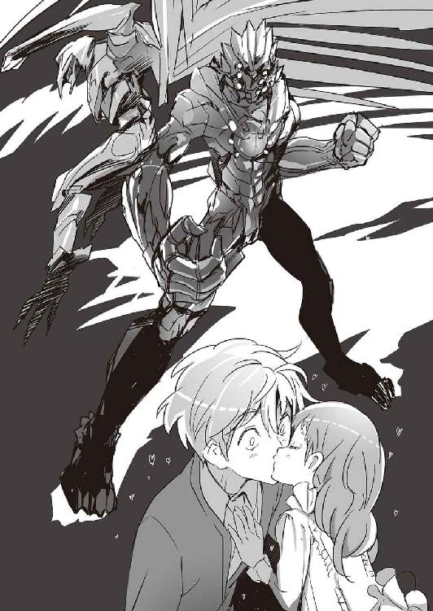
しかし、その前に使っていたマルチピード・アーマー「エンキドゥ」も、決して時代遅れの兵器というわけではなかった。進化したＧＥＮＥＺやエレシュキガルに比べれば物足りない性能とはいえ、その戦闘能力は各国の主力戦車を上回る。
「バビロン・メディスンの使う強化外骨格やマルチピード・アーマーは、グリークスのＧＥＮＥＺを模倣しつつも、根本の設計思想は異なっていた......」とアイナは切なげにつぶやく。「......それも、社長の計画の一つだったんでしょうね。二つの兵器を争わせて、より強いものを生み出すために」
エンキドゥの脚部には、車輪つきの補助脚がついている。両手には厳ついガントレット。そのガントレットの内部にはスパイク状の電極が隠されている。強化格闘戦用のスタンガン。殴ると同時に、電極から五〇〇万ボルトの高電圧を放つ。
「あれには、誰が乗っとるんですか？」
「亜佑美さんと、狙撃手の張鐘さんです」
「なるほど......！」
「グリークスやバビロン・メディスンが使う強化外骨格は、高性能な代わりに操縦者を選びます。ＧＥＮＥＺなら遺伝子の適応が必要だし、エンキドゥの場合は高速の神経系ブレイン・マシン・インターフェイスを処理する能力が求められます。どちらも、子どものころから訓練を受けてきた若い兵士でなければ対応できない。あの二人なら適任です」
「気心もしれてますしね。頼りになるお二人や」
「これで主要メンバーは全員装甲化。我が海神学園が用意できる、最強の強化外骨格戦闘分隊の誕生です」
４
エンキドゥも含めて、スーツ関連のテストが終了し、再び主要メンバーが学長室に集合。
「現時点をもって、ＧＥＮＥＺヤマタノオロチの作戦用暗号名を『Ｇ─８』とします」こども学長が告げた。
たしかに、ヤマタノオロチという単語は切迫した状況では言いにくいし、何よりも兵器の名前としては中二病っぽくて恥ずかしい。
「......Ｇ─８と恐鳥型ＧＥＮＥＺでユニット１。ニムロッドのエレシュキガル二台でユニット２。梓馬さんと張鐘さんのエンキドゥ二台でユニット３です。そしてこの三つを合わせて決戦用突入分隊とします」
「問題は山積みなんだが......まずは敵の大将をどう抑えるか考える」続いて、大迫が言う。「俺たちのほうが数が少ない。だから、大将に狙いを絞るのは兵法の基本だ。どういう方法をとるかはさておき、最後は必ず敵の司令部に突入する作戦になる。屋内戦になれば、どう考えても強化外骨格が最強の兵器だ。
一番の難関は、強化外骨格を敵の本拠地に送り込むことだ。グリークス日本支社の戦力、大学部・高等部の学生傭兵、厳島一族が大金を使って維持している傭兵部隊......これだけ全部繰り出しても、本社の戦力のせいぜい八分の一。特に航空戦力が圧倒的に足りない」
「そこに、敵にはバビロン・メディスンの増援もくわわる」と爪兵。
それはどうだろうな、と大迫は爪兵の言葉について考える。
「......グリークスとバビロン・メディスンの社長が同一人物だということを知っている人間は、まだわずかだ。この業界の人間に話しても、ちゃんと証拠を用意して丁寧に説明しない限り、悪い冗談だと思われるのが関の山だろう。さらにちゃんと説明したとしても、敵があまりにも大きすぎる。逆らえない。グリークスとバビロン・メディスンを合わせた組織なんて、それは国家みたいなものだからな。
同時に、敵もこの事実を大々的に宣伝できるわけでもない。自作自演の戦争、情報戦の出来レース......決してまともな話ではない。グリークスの本社にバビロン・メディスンの大軍が押しかければ、さすがに兵員の士気を維持できなくなるだろう。司令部に、こっそりと精鋭を忍ばせる......そのあたりが限界なんじゃないか」
「さっきから、敵の親玉──セルジオがグリークス本社にいる前提で話が進んでいるみたいだけど」と彩離が疑問を口にした。「どゆこと？」
「グリークス本社には、厳島一族が送り込んだスパイが何人もいます」こども学長が、それが当たり前のことであるかのように言った。「私の兄──シキサギが、ずっと前から準備を進めていた。密かに」
「こっちはバビロン・メディスン内部に情報提供者がいる」と爪兵。「つまり、敵の居場所くらいは特定できる。イエニ・チェリが、目立たないようにグリークス本社に入ったという情報もある。偽情報の可能性は低い」
「......いけそうな気がしてきたな」とセルジュ。
「今頃か」と涼しい顔で謙吾。
「楽観的になりすぎないように」こども学長が釘を刺す。「......まだ片付けないといけない問題は多いですよ」
「コピーしたブラックボックスのデータは？」亜佑美部長が質問。
「現在解析中です。時間がかかりそうです」こども学長が答えた。
「決戦用突入分隊はいけそうだ」と大迫。「話を戻そう。どう送り込むか？」
こども学長は難しい顔で、
「......サラミス島のグリークス本社は、ギリシャ空軍のミラージュ２０００戦闘機、海軍のイドラ級フリゲート艦によって守られています......さらに、本社には自前の軽空母が二隻、強襲揚陸艦が二隻。軽空母はそれぞれ満載排水量一万八〇〇〇トン。所有する航空機はＦ─35ライトニングⅡ。他にも最新鋭のステルス多目的沿海戦闘艦に、対潜哨戒機、対潜フリゲート艦......地上には高射砲陣地にストライカー旅団、主力戦車も」
「正面突破は無理やな」
今回はセルジュも会議に参加している。
「じゃあ、潜入作戦ですね」と亜佑美。
「潜入作戦をするには、ＧＥＮＥＺは目立つ」と謙吾。
「潜水艦どうかな？」彩離が指を立てた。「小型潜水艇を出して、水中から」
「対潜哨戒機が飛んでるって言ったろ」大迫が即座に否定。
「高高度降下低高度開傘は？」とセルジュ。
「防空監視網に必ず引っかかる」と大迫。
「超高高度──成層圏からの音速降下」と謙吾。
「それは不可能じゃないが......」
大迫はやはり首を左右に振って、
「結局防空監視網に引っかかる可能性は否定できないし、いくらＧＥＮＥＺでも狙った場所に着地するのは難しい。バラバラに着地しても、各個撃破されるだけだ」
「もっと別の発想で......スパイに手引きしてもらうとか」亜佑美が言った。武装メイド部の部長らしい意見だ。
「......向こうは外側だけでなく、内側に対しても警備を厳重にしてる」
そう言って大迫はため息をついた。誰かの意見を否定するばかりの自分にうんざりしているが、代案が浮かぶわけでもない──そんな少し疲れた表情だ。
「スパイの正体がばれて終わりでしょう。スパイによる破壊工作も無理」
「まだ何かあるはずです......何か手が......」
こども学長は考え込んだ。
急に電子音が鳴った。こども学長のデスクの備え付けの情報端末だ。端末にはマルチモニタと衛星通信装置がついている。モニタにウィンドウが開いて、特進クラスの情報士官が話しかけてくる。「学長、緊急報告です」
「なんですか？」
「大変なことになりました。東京都庁舎にミサイルが一発。福岡の三六階建て高層リゾートホテルに一発。どちらも甚大な被害が出ています」
「撃ったのは？」
「横須賀のアーレイバーク級ミサイル駆逐艦からトマホーク巡航ミサイル。それが東京都庁舎に。福岡のほうは北朝鮮の弾道ミサイル。発射の兆候がつかみにくいノドンだと推測。米軍はすぐに『誤射』だと発表。北朝鮮は『衛星ロケット打ち上げ』の事故だと」
５
それは外国で起きた惨劇の再現だった。
ビルに破壊力が突き刺さって、爆発する。言葉にするとシンプルだ。
そのとき、真っ昼間だったこともあり、都庁には五千人近い職員が勤務していた。新しい都知事も副知事もいた。
横須賀で補給を受けていた米海軍のミサイル駆逐艦が、垂直発射装置から突如戦術型トマホークをうちあげた。それはあってはならないことであり、ありえないことのはずだった。ピンポイントな攻撃──発射されたトマホークは、精密地形援用航法とデジタル相関照合、さらに対ジャミング性を持つＧＰＳと慣性航法装置を組み合わせた高度な誘導システムによって、時速八〇〇キロで都庁──第一本庁舎の三二階に命中。高性能火薬が詰まった四五〇キロの弾頭が爆発。炸裂箇所を中心に大穴が開き、ほんの一瞬で三〇〇人が死亡。爆風で窓から外に飛ばされて、落下死した職員もいた。都知事の執務室は七階なので命拾い。それでも「バブルの塔」「税金タワー」と呼ばれた庁舎が火を噴く光景は何かの悪い象徴にしか見えなかった。
米海軍はただちに「誤射」「誤作動」と発表。謝罪するとともに、日本政府に「原因の徹底究明」を約束した。
旧ソ連のスカッドＢミサイルをリバース・エンジニアリングして開発された北朝鮮の中距離弾道ミサイル──ノドン。最大射程は一〇〇〇キロを超え、日本の国土の大部分を範囲内に収めている。北朝鮮から放たれたノドンは四発だった。すべてが、自走発射機からの隠蔽発射だった。そのうちの一発は不良品のようなもので、何を破壊するということもなく東シナ海に着水。もう一発は、大きく狙いを外して筑紫山地の無人地帯に着弾。自衛隊の高射隊が素早く反応し、ＰＡＣ３によって一発を撃墜。
それでも防ぎきれなかった最後の一発が、福岡の三六階建て高層リゾートホテルに命中。六〇人が死傷。
核弾頭、化学兵器弾頭でなかったことだけが救いだった。
北朝鮮は「衛星用ロケットのうちあげ失敗」だと釈明。誰がどう見てもノドンだったので国際情勢は一気に緊迫した。米軍の「誤射」事件もあり、タイミングは最悪。誰もが状況を理解できず、社会全体が不穏な空気に覆われた。自分たちが立っているのが堅固な地盤ではなく、実は薄氷の上だったと突きつけられたのだ。一部の軍事評論家は、これを「世界大戦の前兆」だとした。
──ミサイル事件の翌日早朝、グリークス日本支社経営陣、すなわち厳島一族の主要人物（それには厳島アイナも含まれていた）に、社長のセルジオから秘匿回線を通じて自動消滅するタイプのメールが届いた。その内容はこうだ──『こちらからのメッセージはすでに受け取ってもらえたと思う。厳島一族が、こちらが要求するものを提供してくれなければもっとメッセージを送る。要求するもの──剣歯虎型ＧＥＮＥＺ、恐鳥型ＧＥＮＥＺのブラックボックスを開ける方法。そしてＧＥＮＥＺそのもの、そしてパイロット二人だ。メッセージを止めるための生け贄だとすれば安いものだろう。一週間の猶予を与える』。
厳島アイナは思った──このメールには、いい点と悪い点がある。
悪い点──敵にはまだまだミサイルを発射する用意がある。
いい点──敵はまだ、こちらがすでにブラックボックスを開けたことを知らない。
正式に、大学部地下施設の作戦会議室を使うことになった。こども学長、ニムロッド、高等部特進クラスの主要メンバーの他に、生徒会憲兵隊、大学部学生会憲兵隊、大学部傭兵部門、日本支社傭兵部門、日本支社警備部門、装備開発部門──それぞれの代表者が勢ぞろいしている。そしてアイナの兄、シキサギもいる。彼が最初に口を開いた。
「......巡航ミサイルはリスキーすぎる。ノドンもだ。いくら社長......セルジオでも、このまま無事にすむわけがない」
「危険性は、向こうもわかっているはずです」とアイナ。「そして、彼はその危険を制御できる範囲内だと判断した」
「国際社会がこんなことを許すわけがない」日本支社傭兵部門の代表者が言った。
「どうして？」アイナが多少芝居がかった調子で首を傾げる。
「世界中の戦場・紛争・軍隊・治安維持に、グリークスかバビロン・メディスンの傭兵が関わっている......」ずっと海神学園と戦ってきたニムロッドの武田爪兵が言うと、その言葉も重みが違う。「......戦争は、民間軍事会社抜きでは成立しない状況が長く続いていた。──その結果が、これだ。世界の軍事パワーバランスが、たった一人の男によってコントロールされている」
「日本政府がアメリカ政府と北朝鮮に抗議する......それで？」
言いながら、アイナは作戦会議室を見回す。その視線は、いつもの「こども学長」のものより数倍冷たい、悲惨な戦いの指揮を引き受けた将軍の目だ。
「......セルジオがその気になって、あちこちの国が日本を攻撃しても、日本は誰に反撃すればいいのかもわからない。今回の件に関しては、アメリカも北朝鮮も『巻き込まれただけ』......いわば『被害者』なんです」
加害者であり、被害者。
事件の構造は単純なのに、解決するのは難しい。
「......取り引きをもちかけられました。グリークスの社長からです」
アイナの言葉に、集まった兵士たちの顔つきが険しくなる。
「今回の攻撃は『メッセージ』だと」
アイナは、送られてきたメールの内容を説明した。ＧＥＮＥＺのブラックボックス、そして二人の生け贄。敵の本命はブラックボックス。パイロットの身柄まで要求してきたのは恐らく嫌がらせに近いのではないか。
「どうする？ 向こうはタイムリミットを設定してきた」
大迫が言った。タイムリミットは、あと一週間。
「......逆転の方法はないでもない」
そう言ったのは、ファンタスティック・スリーのリーダー、コバさんだった。その場にいる全員の視線が、一斉に彼に注がれる。
「戦略的大規模ハッキングだ」
第三章
１
──長い夢を見ていた。
世界の戦場を渡り歩く──永遠とも思える時間──夢──思い出？ 過去の体験？ それとも異様な実感のこもった誇大妄想？
岩清水ユキナは魂を奪われた。そして、目を覚ます。自分の体をどこかに置き忘れてきた感覚──そのままの意味だ。幽体離脱とは、たとえばこんな気分なのだろうか？ 瞼がすごく重い。眠たいのではない、ただ重い。
「............」魂を抜かれたときは、浮遊感があった。今は落ち着いている。たしかに、肉体を感じている。しかしこれは私の体ではない。ここはどこだろう？ ユキナはゆっくりと周囲を見回す。「ゆっくり」を意識したわけではない。体を「ゆっくり」にしか動かせない。広い部屋の、真っ白いキングサイズベッドの上だ。高級ホテルの一室のような雰囲気。壁の一面がガラス張りになっていて、ここが恐ろしいほど高所だとわかる。太陽に手が届きそう、天気によってはここは雲の上。眼下には海と島が見える。
「がいこく......？」
そうつぶやいた自分の声がずいぶん幼くて、ユキナはびっくりした。少女ではなく、子どもの声だ。恐る恐る、立ち上がる。体は重いが、足に力が入らないほどではない。視線が低い......背が低くなっている？ 自分の手を見る。小さな手。小学校低学年の手。ベッドの隣に化粧台と全身鏡があった。恐ろしくても、確かめないわけにはいかない。勇気を振り絞って鏡の前まで進む。
「え......？」
鏡に映っているのは、見知らぬ幼女──自分ではなかった。いや、とユキナは一人で首を傾げる。鏡のなかの幼女も首を傾げる。これは本当に見知らぬ幼女だろうか？ 姿形は、自分の子どものころにそっくりなのだ。まるで若返ったような。いくらナイチンゲールでも、そんなことがあり得るのだろうか？ 疑問符ばかりだ。答えがない。
今の（幼くなった）ユキナが着ているのは、薄い青色のガウン型患者着だった。ちょっとぶかぶかで、袖の部分が余っている。
改めて考える──ここはどこだろう？
ユキナは鏡の前から離れた。ベッドと化粧台があり、壁一面がガラス張りの広い部屋。ソファと大画面のテレビ、奥にはキッチンと豪華な浴室がある。大型の冷蔵庫には高価そうな食材が満載。テーブル上には新鮮なフルーツ。本当に高級ホテルなのかもしれない。
出入口は、重厚なドアが一箇所だけ。一応、ドアノブを回してみる。当たり前みたいに鍵がかかっていて、びくともしない。
冷蔵庫の食材を使ってサンドイッチを作った。牛乳を飲みながら、それを食べる。それからしばらくぼんやりしていると、勝手に大画面テレビのスイッチがオンになった。そこに映ったのは普通の番組ではなく、こちらに向かって話しかけてくる生放送だった。そこには、一人の男の顔がアップになっていた。死人のように肌が白い男だが、なぜか不健康な印象はない。研ぎ澄まされた刃物のような雰囲気。美しいブロンドで、男とは思えない妖艶な美貌──。
『おはよう』
「なんなんですか、あなたは」
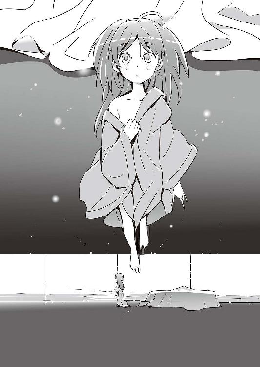
訊ねてから、ユキナは思う──テレビに話しかけられるのも、テレビに向かって話しかけるのもなんだか間抜けだ。こちらの言うことは、ちゃんあの男に聞こえているのだろうか？ 聞こえているはずだ。向こうは「おはよう」と挨拶をしてきた。つまり、こちらが目を覚ましたことを知っている。部屋には監視カメラがあるし、一〇〇パーセント盗聴もされているだろう。だとすれば、会話は成立する。
「ここはどこなんですか？」
『それを聞いてどうするのかな』
会話は英語だった。ユキナの体は幼くなっているが、知識や学習経験が減っているわけではない。英語でも理解できる。
『逃げられんよ。ぶっちゃけ』と、テレビの男。『ここは島で、日本から遠く離れてる。どこかで飛行機でも奪うとか、船を奪うとか......そういうのが必要なわけだけどさ。できる？ 難しいんじゃないかな。ってゆーか無理でしょ』
「......何が言いたいんですか？」
『おとなしくして、ってことかな』
「この体は、どういうことなんですか？」
『説明長くなるよ。いいの？』
「......どうせ、おとなしくしてなきゃいけないんでしょ？」
『そうだね......じゃあ、質問だ。君はいつから不死身だったんだと思う？』
「それは......」
ユキナは、両親の顔を思い出す。幼い頃を過ごした故郷の風景を思い出す。天照流軍用小具足の道場を思い出す。まだ子ども同士で謙吾と遊んでいたときのことを思い出す──。
「......私には故郷がある。子どものころの、両親の思い出もある。不死身かもしれないけれど、年齢は一七歳です」
『ところがそうじゃないんだな』男はゆっくりと頭を振る。『......私は君の「前の体」から「魂」を抜いた。覚えているな？』
突如現れたポイニクス型ＧＥＮＥＺ。こども学長の言葉──『グリークス社長専用とされている、その存在が極秘のＧＥＮＥＺです』──そして「社長」と呼ばれた男の言葉──『ナイチンゲール。お前の「魂」をいただく』。
テレビの男──グリークス社長？
『普通の人間に、あんなことはできない。そもそも君の「魂」は「カートリッジ式」なんだ』
「............」
『君がiPodだとしよう』
「......はい？」
『たとえばなしだよ。私みたいな大企業の社長でも、iPodは使うんだ。なぜかって？ 便利だからだよ。......で、たとえばなしの続きだ。iPodには音楽のデータが詰まってる。それはエクスポートとインポートが可能だ。古い、ボロボロのiPodから新しいiPodにデータを移す。そうなったとき、重要なのはiPod本体かな？ データかな？
......君の「体」は一七歳だっただろう。でも、君の「魂」の年齢は違う。君の正確な年齢は、私にもよくわからない。ただ、確実に一五〇〇歳は超えているはずだ』
「何を......あなたは......」
『改めて自己紹介しよう。私はセルジオ。セルジオ・ガルヴァーニ。グリークスとバビロン・メディスンの社長だ』
「......は？」
突然聞かされた衝撃的な事実をのみこむのには、時間がかかった。
──セルジオは語る。
ホムンクルスって言葉くらいは聞いたことがあるだろう？
その技術は紀元前には完成していた。
一六世紀のファウスト博士、錬金術師パラケルスス以前にね。
数百の素材を詰めたフラスコを炉にかけて、丹念に蒸留すると光が生まれる。その光が凝縮して、人工生命体になる。天地創造を思い出すね。「光あれ」と神は言った。
ホムンクルスには残念ながら「魂」がない。しかしその「体」は、ナイチンゲールの「魂」を保管しておくのにはちょうどよかった。
ナイチンゲール、ナイチンゲール、ナイチンゲール......。
もちろん、昔は違う名前だった。
ヒトを不死にする、不死の少女──ナイチンゲールが生まれたのは、紀元前三五〇〇年前。古代メソポタミア文明のころ。
最初は「女神イシュタルの娘たち」と呼ばれていたそうだ。やがて時代が進むごとにその呼び名は変わっていき、百年ちょっと前にナイチンゲールとされた。長い時間は、人間の「精神」には重すぎる。人工生命体の「体」を交換するたびに、ナイチンゲールにはある程度記憶の取捨選択ができた。そうやって、長い時間を過ごしてきたわけだ。きみに子どものころの思い出があるのも、そういう理由からだよ。本当の両親ではない。
２
海神学園、大学部地下施設──作戦会議室
「取り引きには応じる。と向こうに伝えます」こども学長が言った。
「その裏で、俺たちファンタスティック・スリーは......」とコバさん。「グリークス日本支社の技術スタッフと手を組んで戦略的ハッキングの準備をすすめる」
「当然、敵も用心している」と大迫先生。
「なんとかするしかない」ヒデヨシ。
「......でも、敵には七湖がいる」謙吾が暗い顔でつぶやく。
「ハッキングなんて成功するの？」弱気な鞠歌。「あの子には、誰も勝てない......」
布施七湖──特殊な共感覚者。
彼女には、機械言語、プログラミングが「絵」として認識される。たとえばコンピュータのファイアウォールも各種サイトのプロテクトも、すべてイメージで直感的に理解することができる。普通の人間には認識できない「欠点」を洗い出し、普通の人間には不可能な速度でハッキングを行う。
「困ったら、向こうは七湖に頼る」そう言ったコバさんは、しかしお手上げという感じでもなかった。顔つきは真剣そのものだが、そこはかとなく不敵な雰囲気も漂う。「......少なくとも、こちらにはそれがわかっている」
「なんとなく読めた」謙吾は立ったまま腕を組み、「ファンタスティック・スリーは『七湖一人に』狙いを定めた仕掛けを用意するわけだ」
コバさんはうなずき、
「そういうことだ。普通の人間には通用しなくていい。七湖を狙い撃つ」
「それが上手くいったとして......」不安げにこども学長。「ハッキングの、そのあとは？」
「電子戦によって相手の連携に障害が生じたとして......」と大迫。「その隙に、全戦力を投入。航空機で、決戦用突入分隊を双子の塔にねじ込む」
「全戦力も何も......」と、こども学長。「日本支社の強襲揚陸艦は、一週間じゃサラミス島は間に合いません。本社が相手じゃ、兵器を貸してくれる国もないでしょう」
「......作戦としてはギリギリアウトですね」
そう言って亜佑美部長がため息をついた。
それを聞いたコバさんは苦笑し、
「この状況で、まともな作戦なんてありませんよ」
ここで、謙吾がさっと挙手。
「一週間あれば、大逆転の一手があります」
「大逆転？」その場にいる全員が一斉に険しい顔で訊ね返した。
「あ、いや......」と、困り顔になる謙吾。「大逆転になればいいな、大逆転というほどじゃなくても、反撃のきっかけになれば的な......」
──厳島一族は「取り引きに応じる」とセルジオに返信した。
そこは、世界で最も美しい海の一つとされる。波飛沫は砕け散ったクリスタルのようだし、陽光を浴びて照り輝く海面は歴史的な油絵のようにも見える。海は生命の源であり、同時にたくさんの生命を飲み込んできた。具体的に言えば、ほとんどの海は何らかの闘争の舞台でもあった。──エーゲ海、サロニコス湾。かつて熾烈な海戦が繰り広げられた海。
グリークス日本支社、厳島一族が取引場所に指定したのは、本社の建物から東南におよそ二〇キロの海上だった。船上で、ユキナの「魂」とブラックボックスの中身を交換するのだ。そのために、日本支社と海神学園はできる限りの「仕掛け」を用意した。
問題は、いくつもあった。本社の力を借りずに、短い時間でエーゲ海に軍艦を用意するのは難しい作業になった。厳島一族は、大急ぎでスペイン海軍から（武器弾薬はなしという条件付きで）中古のコルベット艦を購入。交渉にあたる厳島アイナが、歩兵課の戦闘要員や、戦艦の運用経験がある学生傭兵を引き連れて輸送機で移動。ボッタクリ価格のコルベット艦に乗り込んで、チェックと整備を開始。一〇〇人もいれば十二分に動かせる小さな船だ。購入時の約束通り、いつでも出港できる状態だった。関係各国への──特にギリシャ政府との──連絡調整には、シキサギがあたっている。
交渉が上手くいかなかったとき、真っ先に死ぬのはアイナだ。そのあとは、シキサギが指揮をとる。
本社側も船で近づいてきた。当然のように単艦ではなく、最新鋭のミサイル駆逐艦三隻を引き連れた軽空母という豪華な陣容だった。最初アイナは、本社と「軍事同盟」とでも呼ぶべきものを結んでいるギリシャ政府の戦艦かと思ったが、違った。本社が抱えている私兵艦隊だ。それらの艦は本社の独自開発ということになっているが、軽空母はイタリア海軍のジュセッペ・ガリバルディにそっくりで、ミサイル駆逐艦はイギリス海軍のデアリング級にシルエットがよく似ている。シルエットだけでなく、戦闘能力も「オリジナル」にかなり近いものと考えていいだろう。
「............」
アイナが前甲板に出て強い風を浴びていると、本社の軽空母から使者が飛び立った。主にアメリカの海兵隊向けに開発が進んでいる、個人用のジェットパックを使っての移動だ。過酸化水素のエンジンに可変ノズル、アクティブ型ジャイロスタビライザー。コンパクトな構造で、総重量八〇キロ。米軍ではまだテスト段階の兵器だが、グリークス、バビロン・メディスンではすでに実戦配備が始まっている。
空中散歩のような気軽さで数百メートルを移動し、軽空母からの使者はコルベットの前甲板──つまり、アイナの眼前に降り立った。
いくら敵のほうが圧倒的に有利な状況とはいえ、単身で乗り込んでくるとはいい度胸だ、とアイナは思う。
ジェットパックの使者は、生体素材の薄いスキンスーツ姿だったので、ヘルメットをかぶっていてもすぐに女性だとわかった。アイナも、そのスーツには見覚えがある。気功術の効果を向上させる、人工経絡スーツ。
社長の右腕──シュー・ジンジンだ。
彼女はヘルメットを外した。窮屈な防具から解放された長い金髪が強風に煽られて、美しい軍旗のようにはためく。
シューとアイナ、向かい合う。
「余計な前置きははぶきましょう。要求したものを渡していただきたい」
先に口を開いたのは、シューだった。
「......何か勘違いされているようですが」アイナは冷たい目で、そして冷たい声で言う。こういうときの彼女には、少女とは思えぬほど怜悧な迫力が宿る。「......これは『取り引き』です。そちらがこちらのナイチンゲールに何をしたのか教えていただきたい。そして、岩清水ユキナを返して欲しい」
「驚いた」それは言葉だけでなく、シューは目を丸くして本当に驚いたようだった。「......まさかここまできて、あなたほどの少女がまだ状況を理解していなかったなんて。せっかく日本にミサイルまで撃ち込んだのに」
「あれは、そちらにとってもかなりの無茶だったはずです」
アイナの断固とした口調に、シューはやや気圧されたようだった。シューは人工経絡スーツの腰にベルトを巻いていて、そこにポウチをいくつもつけていた。ポウチの一つから軍用の頑丈な携帯情報端末──iPadに似ている──を取り出して、タッチパネルを操作する。
「......社長と直通回線をつなぎます」
３
携帯情報端末の回線が、社長のセルジオとつながった。アイナはシューから携帯情報端末を受け取る。セルジオが馴れなれしく話しかけてくる。
『なかなか素直になってくれないね』
「当然でしょう。一歩間違えれば私たちは殲滅されます」
『たしかに......そんな小舟、沈めるのは簡単だ』
「でも、そうはしないでしょう。そちらにも欲しいものがある」
『一個質問。ブラックボックスを開ける方法を、そっちはちゃんとつかんでいるのか？』
「もちろんです。簡単に開けることのできるブラックボックスは存在しないし、同時に開ける方法のないブラックボックスもまた存在しない」
敵の要求──ＧＥＮＥＺのブラックボックス、そして二人の生け贄。
『じゃあ、さっさと渡しなさい』
「岩清水ユキナを返してください」
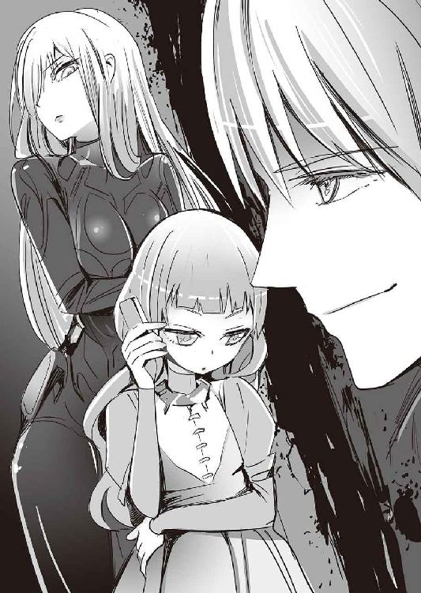
『彼女がどういう状態か、そっちはわかっているのかな？』
「わかりません」ここは、正直に答えた。堂々と。
『しかし、返してもらえると信じている』
「彼女は、特別なナイチンゲールですから」
『そこで「大事な仲間」とか「大事な生徒」とか、綺麗事を口にしないところはさすがだね。好感が持てる』
「............」
『君の強情な態度は、交渉ではどうにもならなさそうだ。仕方がない。リスクが増大していくのは覚悟の上で、強襲に切り替える。その船にいる全員、捕虜になってもらう』
「取り引きは？」
『そっちだって、どんなことがあろうとＧＥＮＥＺのブラックボックスの中身をこちらに渡す気はないんだろう？ 開ける方法すら知らせる気がない』
セルジオがかまをかけてきた。彼の現状認識は正確だ。アイナは、敵に何一つ渡す気はない。渡しても、それが一切自分たちの利益につながらないことがわかっているからだ。
『とにかく、厳島アイナ本人がその船にいるのがわかっただけで十分だ。欲しいものを──少なくともその手がかりを──近場まで引っ張り出すことができた。こっちが一番恐れていたのは、そちらが「逃げ隠れ」することだ。もう最終局面だ。そちらの言った通りだよ、こっちは無茶をした。早く事態を収拾しなければならない』
同じころ──海神学園の第一校舎地下二階──ファンタスティック・スリーの拠点「パソコン部」の部室。コバさん、ヒデヨシ、鞠歌の三人が、真新しいハイパワー・デスクトップＰＣのキーボードを凄まじい速度で叩いている。グリークス本社に電子戦を仕掛けているのだ。
「まずは陽動作戦からだ」と、コバさんが指示を飛ばした。
「こういうときのために」とっておいた、奥の手がある。
ファンタスティック・スリーによる陽動作戦は、「トロイの木馬」系のマルウェア──不正プログラム──を活性化させるところからスタートした。長い時間をかけて、主に中国のハッカーたちのパソコンに仕込んでおいたプログラム。普段は潜伏しているが、ファンタスティック・スリーが命令を送ればただちに対象ＰＣの乗っ取りを開始する。
対象ＰＣ──前々から目をつけていた、中国人民解放軍のハッカーたちだ。グレートファイアウォールの向こう側で、国の予算によって育成されている次世代サイバー戦争用の兵士たち。人民解放軍は、リアルでもネット上でも「人海戦術」を好む。軍が抱えるハッカーの数は、数千、数万ともされている。そしてそのほとんどが──ファンタスティック・スリーの「木馬」に感染していた。
人民解放軍のハッカーは、若い男性が多い。彼らは軍の予算で教育を受けていて、海外への好奇心も旺盛だ。彼らは上司には気づかれないように、こっそりと日本のＡＶ女優のツイッターや欧米のアダルトサイトをのぞこうとする。中国には、国民が自由な検索ができないように大規模な検閲システムがある。グレートファイアウォール、金盾......。単語検索はもちろん、ＷＥＢサイトやソーシャルネットワーク、ブログや動画サイトもその規制対象となっている。そこでハッカーは、検閲システムを抜けるためのソフトをダウンロードする。
発見されにくい長期潜伏型の偽装ファイルを仕掛けておけば、あとは「入れ食い」と言ってもいい状態だった。人民解放軍の数万人というハッカーたちは、いつの間にかファンタスティック・スリーの「下っ端」に組み込まれていたのだ。
人民解放軍ハッカーたちのＰＣ乗っ取り、なりすましが完了した。ギリシャ政府とグリークス本社への大規模ハッキングを強要する。木馬はさらに増殖と感染を繰り返し、ネット上ではまるで中国がギリシャ政府に「宣戦布告」したような様相を呈する。これが、ファンタスティック・スリーの「陽動作戦」だった。
人民解放軍はオトリにすぎない。ギリシャ政府にとってはいい迷惑かもしれないが、グリークス本社はびくともしないだろう。ここからが、ファンタスティック・スリーの腕の見せどころだった。
重要な施設・コンピュータほどオフラインになっているのはこの業界の常識だ。ネットにつながないのであれば、マルウェアに攻撃されるはずもない。──しかし、オフラインだからといって「絶対に」安全なわけではない。グリークス本社のオペレーターやエンジニアたちは様々な「仕事」をしている。傭兵のバックアップ、作戦支援、世界各国の担当者との連絡調整──。常にオフラインのパソコンだけですべての業務に対応するのは不可能なので、オンラインのパソコンとデータをやり取りする必要が出てくる。ファンタスティック・スリーの攻撃用プログラムは、たとえばＵＳＢメモリ内にも潜伏する。オンラインからオフラインのパソコンにＵＳＢメモリでデータを移しただけで、もう感染している、というわけだ。
今回ファンタスティック・スリーが用意したのは、二〇一〇年、イランの濃縮ウラン精製用遠心分離機を停止に追い込んだStuxnetの改良版だ。Stuxnetはゼロデイ（未知の脆弱性）を徹底的に突いていく高機能・多機能なマルウェア。正当なデジタル証明書を持ち、感染後は自動でアップデートしていく。それを、ファンタスティック・スリーは軍用の制御システムをダウンさせるためにいじった。一定の条件を満たすと破壊活動を開始する論理爆弾の要素も組み込んだ。
そして、ファンタスティック・スリーが七湖を狙った仕掛けとは──。
「これ、通じますかね......」鞠歌が不安げに言った。
「通じないだろうね」あっさりコバさん。
「でも、やるの？」と、ヒデヨシが確認する。
ファンタスティック・スリーが仕掛けたのは、画像の罠だった。七湖には、機械言語やプログラムが「絵画」に見える。それを逆手に取るのだ。つまり、「こちらが七湖に見せたい画像」を数値化・機械言語化して、攻撃用のコードに紛れ込ませておく。意図的な画像を見た七湖は動揺するかもしれない。その隙を突く。
三人が七湖のために用意したのは、すべて海神学園での学生生活のスナップ写真だった。監視カメラの画像もあれば、学校行事の記念写真もある。謙吾が助けて初めて学園にやってきたときの七湖──臨海学校、強襲揚陸艦の甲板上で水着姿の七湖やビーバス＆バットヘッドの面々──同じく臨海学校のダンスパーティーで謙吾と踊る七湖──マカオで任務のために、ドレス姿で大きなギャンブルに挑む七湖──。そこには、生き生きとした表情の七湖がいた。その周囲には、いつも謙吾やユキナ、彩離やセルジュがいる。
「凄く低いけど、成功の可能性がある。何もしないよりははるかにいい」コバさんは自分の顎をかきながら、「それに、こちらが考えすぎているだけで、『七湖の調子が悪い』から成功なんてこともあり得る。うーん、上手く言えないんだけどさ......いけそうな気がするんだよ。理屈じゃない。俺の勘だね」
鞠歌がため息をつき、
「凄腕のハッカーなのに、最後は勘が頼りとか......」
「コンピュータのさ、『バグ』の語源って知ってる？」突然、コバさんが話題を変えた。少なくとも鞠歌とヒデヨシには今までの話とまったく無関係なことのように聞こえた。二人は思わず顔を見合わせてから、首を左右に振る。
「ええと......」
「なんででしょう？」
「検索すればすぐに出てくると思うけどさ」とコバさん。「ＩＢＭは一九四〇年代に原始的なコンピュータを開発した。そのなかのひとつである『ＭａｒｋⅡ』が故障したんだけど、その原因ってのは、機械の間に一匹の『蛾』が挟まったことだった。だから、『コンピュータ・バグ』って言葉が生まれた」
「............」少し驚く鞠歌。へぇ、と声を漏らすヒデヨシ。
コバさんは続けて言う。
「最後はね、コンピュータも生身の世界なんだよ。俺たちは電脳空間上の概念だけの存在ってわけじゃない。ネットの向こう側には人がいる。俺達の世界には虫も飛んでいるし、キーを叩いてマウスを滑らせるのはこの手だ。身体的なんだ。だから、感覚的なことだってバカにはできないんじゃないのかね......」
４
『強襲に切り替える。その船にいる全員、捕虜になってもらう』
交渉は決裂した。アイナは携帯情報端末を海にぽーんと投げ捨てた。
「こんな小舟、私一人で十分です」人工経絡スーツのシュー・ジンジンが言う。ヘルメットをかぶり直し、「あなたの抱えている戦力なんて、たかが知れている」。
そのとき──。
「そうはいかないんだな」コルベットの艦橋から飛び降りた人影が、アイナを守る位置に着地した。その着地音は、重厚感溢れる金属質なもの。強化外骨格、恐鳥型ＧＥＮＥＺ空戦強化タイプ。堤彩離だ。
「この艦は......学長はあたしが守る」
「あなた一人だけ？ 他のＧＥＮＥＺや強化外骨格は？」
「ここはたぶん、あたし一人で十分」
「ふぅん......」シューは何かを探るような目つきになった。「これは、あなたを早く倒して『双子の塔』に戻ったほうがよさそうですね」
さすがに敵の幹部は勘がいい、と彩離は思った──その通り、謙吾たちは「本隊」として敵の本拠地を狙っている。
「無駄話はここまで。あとは、勝負だよ」
彩離が仕掛けた。
恐鳥型ＧＥＮＥＺをまとった彩離は、強化外骨格歩兵携行用一二・七ミリ機関銃と、Ｍ72ロケット・ランチャーＬＡＷで武装していた。ＬＡＷ──軽量対戦車兵器の略。使い捨てで、総重量わずか二・五キロ。六六ミリＨＥＡＴ弾が撃てる。専用のフックで、彩離はＬＡＷを四つ、ぶらさげている。
まさか自分が乗ってきたコルベットの上でＬＡＷをぶちかますわけにはいかないので、一二・七ミリ機関銃を連射した。大口径の凄まじい反動でも、ＧＥＮＥＺを着用していれば右腕だけで制御できる。
機関銃の弾雨を、シューはジェットパックで飛翔してかわした。彼女はほんの一瞬で数十メートルも上にいる。彩離はこれを「チャンス！」と見て、すぐに左腕でＬＡＷを構えて発砲した。空中にいる相手を撃てば、対戦車ロケットを当ててもこちらのコルベットにダメージはない。しかし、シューは鋭くジグザグに移動しつつ急降下。彩離のＨＥＡＴ弾をあっさりとやり過ごす。
急降下の勢いを利用して、シューは彩離に向けて蹴りを繰り出した。人工経絡スーツの気功増幅回路によって、彼女の足先には爆薬のような威力がこもっている。彩離はそれを危ないところで、避ける。狙いを外した蹴りが、コルベットの甲板に大穴を開けた。艦全体が大きく揺れる。──この調子だと、シュー・ジンジン一人でコルベットを沈めることもできそうだ。
彩離は再び機関銃でシューを撃った。──が、やはり彼女はジェットパックで空中に飛び上がっている。──埒があかない。このままだとあっという間にＬＡＷは撃ち尽くしてしまうだろうし、高速移動する相手に機関銃は当てにくい。同じことを繰り返しているうちに、いつかシューの蹴りを食らうことになりそうだ。
付き合ってやるよ、と彩離は心の内でつぶやいた。
──そもそも、「飛ぶ」のは嫌いじゃないし、苦手でもない。
彩離の恐鳥型ＧＥＮＥＺ空戦強化タイプは、航空機ともそこそこいい戦いができるように設計されているのだ。
彩離は強化されたジェットパックで飛翔した。本領発揮だ。空中のシューを追いかける。
ジェットで加速しつつの、文字通りの「飛び蹴り」である。恐鳥型ＧＥＮＥＺの、特殊超硬合金でできた足の爪で敵を切り裂こうとする。ヘルメット越しでも、シューが彩離の超高速に驚いた気配が伝わってくる。
この飛び蹴りは、紙一重でかわされた──いや、ほんの数ミリだが、かすった。
人工経絡スーツは、攻撃力だけでなく「硬気功」をも増幅する。このスーツをまとったシューの気功は、至近距離でアサルトライフルを連射されてもすべて跳ね返すほどだ。機関銃の弾丸は一応回避していたが、あれはどちらかと言えば背中のジェットパックを守っていた。それほど防御力には自信を持っていたが......彩離の蹴りがかすめただけで、血が噴いた。
腱や重要な筋肉を傷つけるほどではなかったにしても、人工経絡スーツに切れ目が走ったのは確かだ。
「くっ！」低くうめいてジェットパックの推進力で飛び蹴りを打ち返すシュー。
空中戦。双方の飛び蹴りが交錯する。
「なかなかやる......」シューは低くうめくように言った。
「そっちこそ！」と彩離。
「......ん？」ここでシューは、乗ってきた軽空母の戦闘指揮所と連絡がつかなくなっていることに気づく。彩離に気づかれないように、さりげなく呼びかけているが、応答なし。軽空母だけではない。護衛のミサイル駆逐艦三隻とも反応がない。
ファンタスティック・スリーのハッキングが成功したのだ。
「時間になった！」彩離は興奮を隠し切れない口調で言った。「こっからがパーティタイムね」
シューの視界に、航空機が低空を飛んでいる光景が入ってきた。しかし、それはグリークス本社の航空機ではない。遠目にも、シルエットでわかる。ヘルメットの望遠機能を使って拡大する。──あまり見たことのないタイプの戦闘機──無人機？
所属不明の無人機が、装備していた精密誘導爆弾を発射した。最新の誘導兵器は、「どの建物を狙うか」ではなく「どの窓を狙うか」というレベルの精度を有している。シューが乗ってきた軽空母、その護衛のミサイル駆逐艦が次々と爆発していく。
「なに!?」シューが狼狽して声をあげた。
５
小さな国でも、経済的に余裕があり、政治家や軍人たちにビジョンさえあれば、最先端の強力な軍隊を作り上げることができる。少々特殊な例ではあるがスイスが当てはまるし、スウェーデンや日本もそうだろう。
ヴェルトハイム公国も、領土は狭いながら、その軍事力は驚くべき速度で高まっていた。ただいたずらに兵士を増やしているというわけではない。重要なのは「専門的・プロフェッショナルな兵士の育成」であり、「兵器の最新化」であり、「無人兵器の大量運用」だ。ヴェルトハイム公国の事実上のトップであるフランシスカ・ヴェルトハイムは、海神学園──大牙謙吾たちに「恩義」を感じていた。
地上二〇キロ──成層圏の高空。
そこに、フランシスカ・ヴェルトハイムと、その家庭教師であった大牙涼羽がいた。フランシスカは、ブランドもののメガネをかけた知的な女性。涼羽もメガネなので、二人並ぶと雰囲気がよく似ている。もちろん、フランシスカのほうが圧倒的に大人っぽくてセクシーだ。
グリークス日本支社、海神学園、学長のアイナとシキサギが仕込んだ「切り札」が彼女たちだった。
謙吾たちの活躍でヴェルトハイム公国を完全に掌握することに成功したフランシスカは、経済・軍事・工業といった様々な分野で大胆な改革を行い、そして成功させていた。アイナからの指示を受けて「密使」としてヴェルトハイムと日本を行き来していた涼羽は、フランシスカに協力して、対バビロン・メディスン作戦の切り札として特殊な無人空軍を用意していたのだ。──結局それを、グリークス本社襲撃に使うとは、皮肉もいいところだが。
フランシスカと涼羽は、成層圏飛行船に搭乗していた。それは世界各国で無人飛行船として開発中だが、ヴェルトハイムでは有人としていち早く実用化していた。昔ながらの言い方をすれば──「秘密兵器」というやつだ。公国空軍では、正式には成層圏飛行戦艦という。無人機の「母艦」でもある。
飛行戦艦は細長く、遠目には棒状に見える。電波を真横に反射するように、角度は計算されている。非金属素材と電波吸収材による高いステルス性。逆探知されにくい電子走査レーダーを限定的に使用する。空に溶け込んでいる、と言っても過言ではない。
メイン動力は、強力な太陽光バイオ燃料電池。植物の光合成を応用した技術だ。
新開発の強化繊維とバリア材を、高分子繊維で挟んで溶着した高強度軽量材料で船体が構成されている。ポリアクリレート系の強靭な繊維を気球膜材に採用。成層圏の過酷な環境に対応するために、この飛行戦艦は変形する。剛性可変式フレーム構造。
成層圏飛行戦艦の艦橋・戦闘指揮所には、フランシスカや涼羽の他に、操縦スタッフと無人機のオペレーターたちがそろっている。飛行戦艦の搭乗者は、フランシスカの趣味で女性に限られている。全員が、温度と気圧の変化に耐えるためのスーツを着用。頑丈だが無骨ではない、キューブリックの映画に登場してもおかしくない洒落たデザイン。酸素マスクを兼ねたヘルメットも被っている。みなが、それぞれの仕事をこなしている。
成層圏に、合計六隻の飛行戦艦が浮かんでいる。一隻につき一六機の無人戦闘機が搭載されている。つまり、九六機。いくらヴェルトハイムが豊かであるとはいえ、「歯車」と厳島一族の協力がなければこんな大戦力を整えるのは不可能だったろう。無人機は開閉式のステルスカバーで覆われているので、細長い船体に、三つの巨大なえんどう豆のさやがぶら下がっているように見える。
当然、フランシスカが乗っている飛行戦艦がこの空中艦隊の旗艦だ。
艦名は「アマデウス」という。
「フランシスカ、今回はヴェルトハイム公国に無理をさせてすみません......」
二人は、「涼羽」「フランシスカ」と呼び合う仲になっていた。
「どうしてあなたが謝るの？」
「とっておきの空軍。しかも、『アマデウス』の記念すべきデヴューがこんな秘密作戦に」
「いいのよ」フランシスカは微笑み、涼羽の頰に手をやる。
思わずその頰を朱に染める涼羽。
「......話を聞く限り、戦いは避けられなかった。それなら先手をとる機会は逃さないほうがいい。デヴューも何も、秘密兵器の出番が秘密作戦に限られるのは当たり前のこと。まさか成層圏飛行戦艦なんてものを、兵器ショーに出品するわけにもいかないでしょう？」
飛行戦艦が搭載している無人機は、ヴェルトハイムがフランスのダッソー社から技術提供を受けて開発した無人ステルス戦闘攻撃機だ。超音速のエンジンを搭載。高度なステルス機体設計。精密誘導爆弾を装備し、自律的な空対地攻撃能力を持つ。自動モードで分隊飛行制御され、それを操作するオペレーターたちはまさにコンピュータゲーム感覚だ。
無人攻撃機は長さ九メートル、全幅一〇メートル。最大速度、時速九八〇キロ。
武装は、五〇〇ポンド精密誘導爆弾が一機につき二発。これは公にはできないが、日本の自衛隊が無人機用に開発した精密誘導爆弾だ。自衛隊は優れた兵器を開発しても「実際に使う」ことがほとんどないので、一部の国に極秘のうちに新兵器を提供している。そうやってデータを収集しているのだ。
アマデウスの戦闘指揮所には、先行して飛ばした無人偵察機やファンタスティック・スリーから大量の情報が送られてくる。グリークス本社──「双子の塔」の警備状況はほとんど丸裸だ。コマンドポスト機であるアマデウスから、データ・指令リンクを介して無人攻撃機に命令を与え、一斉に発艦させる。──攻撃開始。双子の塔を守るレーダーサイト、対空砲火陣地、航空基地、車両基地、ミサイル駆逐艦、軽空母──爆弾の雨が降り注ぐ。
固定目標に対しては、全地球測位システム──ＧＰＳホーミング。偵察機のレーザー照射範囲内の標的に対しては、レーザー誘導。動く目標に対しては、電子光学・赤外線画像誘導。超精密爆撃。陸と海で、爆炎が大輪の花を咲かせる。爆発し爆発し、誘爆し、爆発する。
６
シューと彩離の空中戦。突如始まった無人攻撃機の空爆に、シューは動揺を隠せない。その一瞬の隙をついて、
「もらいッ！」
「──ッ！」
彩離はシューの真上を移動しつつ、縦に一回転しながらの蹴りを繰り出した。恐鳥型ＧＥＮＥＺの爪が、シューが背負ったジェットパックを破壊する。重力に逆らう推進力を失った彼女は、アイナのコルベットの甲板に落ちる。
「ケリをつける！」
彩離は急降下しつつ、シューに勢いをつけた蹴りを浴びせる。
シューはそれを、かわさなかった。気力を全開にして、硬気功で蹴りを防ぎつつ、カウンターの双掌打──左右同時の掌底打──を放つ。シューは硬気功だけでは彩離の蹴りを防ぎきれないし、彩離は相手がまさか「受ける」とは思っていなかったのでカウンターをかわしきれない。ＧＥＮＥＺの爪が人工経絡スーツとシューの右脇腹をざっくり切り裂き、シューの全力の気功がこもった双掌打が彩離の胸部を打ち抜く。打撃がヒットしたのは正面の胸なのに、威力が貫通したかのように恐鳥型ＧＥＮＥＺが背負ったジェットパックが火を噴いて爆発する。
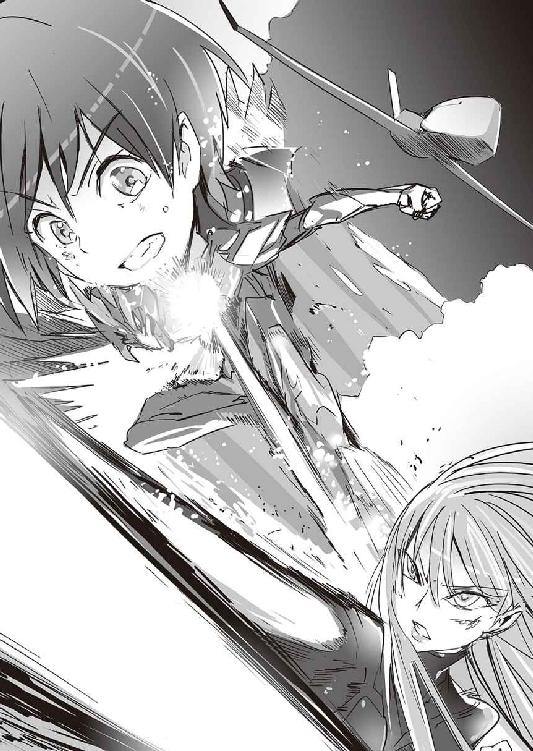
第四章
１
移動中の謙吾に、日本のファンタスティック・スリーから暗号化された衛星通信が入った。
『こちらコバ』
「バットヘッド１です。そっちのハッキングは上手くいったみたいですね」
『それがだな......』コバさんが苦い声で言う。『上手く行きすぎだ』
「......それはつまり、罠ということですか？」
『違う。敵は全力で防衛しようとして、失敗した......その程度のことは、ハッキングに成功したんだからこっちにもわかる。問題は、一番警戒していた七湖がほとんど何もしなかったこと』
「......七湖が？」
『ああ。彼女が本気を出せば、もっと時間がかかったり、違った結果になったはずだ。でも、そうじゃなかった。彼女が重病とか、パソコンに触れることができない状況か......あるいは、自分を止めて欲しいと願っているのか』
「............」
『とにかく、彼女をよろしく頼むぜ。謙吾。とびきりのギャルゲー用意して日本で待ってる』
「ああ、すげぇ楽しみだ」と言って、無線を切る。機体は激しく揺れている。
ツポレフ。Ｔｕ─１６０。通称「ブラックジャック」。四基のアフターバーナー付き大型エンジンを装備。米空軍のＢ─１大型爆撃機の影響を受けた、ソビエト連邦の可変翼超音速戦略爆撃機。──謙吾たちは、その胴体中央部にある兵器倉にいた。
このツポレフ・ブラックジャックごと、敵の本拠地に突っ込むのだ。
ブラックジャックの兵器倉は、今回の作戦のために兵員輸送ブロックに改造してある。特殊合金と衝撃吸収材の複合装甲によるカプセル状になっていて、まるで空飛ぶ対爆シェルターだ。そこには、最後の出撃準備を整える決戦用突入分隊の少年少女がいる。謙吾、セルジュ、張鐘翔太、梓馬亜佑美、武田爪兵、アンナトゥリー、クラウディア・フランチェスキーニ、那須火沙里──。ナイチンゲール以外は、全員が強化外骨格によって装甲化されている。新たなＧＥＮＥＺ──Ｇ─８を着用した謙吾。
アイナの警護についている彩離だけがいない。
「............」
──あるいは、自分を止めて欲しいと願っているのか。
コバさんの言葉が、謙吾の脳内で反響する。裏切った七湖──でも、本当はそのことを後悔している七湖──だとすれば、謙吾のやることは一つだ。敵は倒す。ユキナだけでなく、七湖も「救出」する。
「そろそろやな」セルジュが言った。彼の手元には、軍用の頑丈なノートパソコンがある。それは優先でコックピットの自動操縦装置とつながっている。──つまり、このブラックジャックにパイロットは搭乗していない。パソコンからだと細かい操縦は無理だが、どうせこのツポレフは目的地に最高速度で突っ込むためだけのものだ。
パソコンのモニタに、ライブで敵の本拠地が映った。サラミス島中央山地の奥深い場所にある、ツインタワー方式の巨大なビル──グリークス本社ビル「双子の塔」。その華美で威圧的な外観はまるで近未来的に洗練されたサグラダ・ファミリア教会だ。
厳島一族の協力によって実現したヴェルトハイムの無人空軍が、タワー周囲の擬装陣地と防御建築を破壊していく。ファンタスティック・スリーによって、グリークス本社は電子的にも丸裸だ。敵は、反撃する方法すら見つからずに苦労していることだろう。
今回の作戦の欠点は、強襲揚陸艦を用意できなかったことだ。爆撃だけで本社を完全に制圧することはできないし（あの建物はそこまでヤワではない）、なかで「ユキナの魂」がどんな状態になっているのかさっぱりわからない。地上戦力の投入は必要不可欠なのに、こちらが用意できたのはこの決戦用突入分隊だけだった。──たしかに、「改造したツポレフ・ブラックジャックで、敵の本拠地に直接乗り込む」なんて作戦、普通の兵士ではついてこれないか──。
作戦を思いついたのは大迫だ。彼は何度も「無茶ですまん」と謝っていた。他にいい方法がないのだから、仕方がない。
ここで、社長を絶対に仕留めないといけない。今はこちらが有利でも、相手の反撃が始まったら地力の差であっさり逆転されてしまうだろう。事実、双子の塔では制御を取り戻した高射砲が早くも無人機を何機か撃墜している。
謙吾たちはヘルメットを被り、自分の武装を最終確認。耐衝撃ベンチに座って、シートベルトを締める。
ブラックジャックが、双子の塔の根本に突き刺さった。
２
──とてつもない衝撃だった。
激突して瞬時にブラックジャックの機体はバラバラに砕け散り、残っていた燃料──事前に調整していたので量はそれほど多くなかったが──が爆発した。そして、丸裸になったカプセル状の兵員輸送ブロックだけが魚雷のように飛び出し、双子の塔の奥深くまで進んだ。機体の爆発に巻き込まれないように、最初からそうなるように設計されていた。
どんなジェットコースターでもここまで揺れないし、宇宙ロケットのうちあげでもここまでの衝撃はないはずだ。謙吾も、フルフェイスのヘルメットをかぶっていなかったら、首を痛めたり舌を嚙んでいただろう。そもそもセルジュやナイチンゲールのような特殊な存在でなければ、とてもこの衝撃には生身では耐えられない。兵員輸送ブロックは自動で周囲にフックを放ち、強引にブレーキをかける。火花を散らし、壁を突き破り、柱を倒し──カプセルはようやく停止する。シートベルトを外し、全員の無事を確認。
謙吾たち決戦用突入分隊は、それぞれの武装を構えてカプセルの外に出た。衛星通信で、ファンタスティック・スリーに連絡する。
「双子の塔の内部だ。セルジオ、ユキナ、七湖の位置はわかります？」謙吾は訊ねた。
『ハッキング成功したからって、限界はあるんだぜ』と、コバさん。『もちろん、監視カメラはもう乗っ取ってあるけど』
「さすがです」
『画像検索をかけた。ポイニクス型ＧＥＮＥＺとユキナは発見できず。ただ、七湖が護衛と一緒に地下に向かう姿が確認できた』
「俺がセルジオなら、空爆が始まったあと、ビルの高い場所にはいない」
『そういうこったな。せっかくのどでかいツインタワーなのに。敵は地下にあり、だ。しかしそこにたどり着くまでに、警備が駆けつけてくるぜ。たぶんエレベーターも使えない』
「地下何階でしょう？」
『三四階まであるぜ。ビルが地面に突き刺さってるみたいな構造だ』
ＧＥＮＥＺや他の強化外骨格のヘッドマウントディスプレイに、ファンタスティック・スリーからの情報が表示される。ハッキングで作成された、コンピュータグラフィックスの見取り図。現在地は──双子の塔、共通区画の地上三階。
「エレベーターが使えないなら、どう移動する？」
『緊急隔壁が閉じてるが、それはＧＥＮＥＺならどうにかなるとして......』衛星通信越しに、コバさんが悩んでいるのが伝わってくる。『階段があるな。全部で八ヶ所』
「コバさんのおすすめは？」
『一階の南端のヤツ、北端のヤツ。避難用だから、隔壁の数が少ない。当然、それだけに逃げる本社の職員や、待ち伏せにあう可能性も高い』
コバさんの言葉に合わせて、見取り図にマークがついていく。階段の場所、移動経路に矢印が表示される。
『というか、その階段にたどり着くには一階の大広間を突破しないといけない。そこには、すでにかなりの戦力が確認されてる』
「突破するさ。こっちも完全武装だ」
謙吾は力をこめて言った。主武装は、愛用の対戦車ライフルだ。
フィンランドで第二次世界大戦時に使われていたラハティＬ39対戦車ライフル。そのパーツのほとんどを、チタン合金か樹脂素材のものに交換。特殊作戦用ラハティＡＴＲ。使用する弾丸は、特製の二〇ミリ×一三八高速徹甲弾。弱点を狙えば、各国主力戦車を距離一〇〇メートル離れてても撃破できる。特殊超硬合金のバヨネットつき。ボックスマガジンに一〇発。
エレシュキガルを着込んだニムロッドの二人。その主武装は、馬上槍のようなデザインのレーザーライフル。二酸化炭素、窒素、ヘリウムの混合ガスを使い、ポロニウム２１０という熱源物質から発せられるレーザーを増幅して敵に撃ち込む。
亜佑美と張鐘は、エンキドゥを着用。武装は、強化外骨格歩兵携行用一二・七ミリ機関銃とＭＧＬ１４０グレネードランチャー。ＭＧＬ１４０は、六発入りの回転式弾倉で、四〇×四六ミリ口径のグレネード弾をダブルアクションで高速発射できる。主な弾種は、高性能炸薬弾や多目的榴弾だ。
大広間に踏み込む。
立派な大理石の柱に、天使の像が立っている屋内噴水──まるで観光地の公園だ。一部の日本人には、広い空間を見るとすぐに「東京ドーム何個分」に換算しようとする癖がある。この大広間は東京ドーム三個分といったところか。
ファンタスティック・スリーの警告通り、大広間にはグリークス本社の警備戦力が陣取っていた。
厄介そうなのは、主に米軍向けに生産されているストライカー装輪装甲車。およそ一六両。重量およそ一七トン。最高時速は一〇〇キロ近い。紛争地に素早く展開する。
ストライカーは、目的に応じて武装を変更できる。たとえば、自動装塡の一〇五ミリ低反動砲搭載タイプだ。機動砲システムとされている。
一〇五ミリなら、旧世代の戦車なら撃破可能だ。
他に、大広間には対戦車ミサイル搭載タイプのストライカーもある。ＴＯＷ対戦車ミサイル連装発射機だ。
他にも、アサルトライフルや軽機関銃で完全武装の歩兵たちがいる。ファンタスティック・スリーはハッキングに成功した際、グリークス本社の兵士や職員に向けて「グリークスの社長には怪しいところがある。裏でバビロン・メディスンとつながっている」という内容のメッセージを送ったが、あまり意味がなかったようだ。それはそうだ、と謙吾は思う。敵の情報工作としか思えないのだ。
歩兵たちは、まさか自分たちがとてつもない悪人──悪人、という言葉がセルジオに相応しいのかどうかもまだよくわからないが、さておき──のために働いているとは夢にも思っていないだろう。彼らは何も知らずに戦っている。
謙吾は思う──あれは、ついちょっと前の俺たちだ。
彼らと戦うのは心が痛む。──が、セルジオの目標は第三次世界大戦だ。
海神学園での作戦会議中に、爪兵とクラウディアが説明してくれた。グリークスとバビロン・メディスンの戦力が国家を超える規模にまで膨らんだ。そしてここ数年水面下で、主にバビロン・メディスンによって、世界的な戦争を起こすための準備が進んでいた。そして二つの民間軍事会社の社長が同一人物ということになれば、あとは──。
謙吾は拳を握る──やるしかない。
これは戦争だ。大きな戦争を止めるための、小さな戦争。戦争で兵士が死ぬのは、どうしようもないことだ。
謙吾はＧ─８の射撃指揮装置による修正を頼りにしつつ、ＳＯＰＭＯＤ─ラハティ対戦車ライフルを連射した。このライフルの弾丸なら、ストライカーの装甲を簡単に「貫く」。金属音と爆発音が響いて、装甲車に次々と大穴が開く。
ニムロッドの二人は、レーザーライフルの安全装置を解除。チャージ終了後、引き金を絞る。モーター駆動音に似た銃声。二枚のミラーを通過し、増幅された強力なレーザーがレンズから発射される。光の剣のようなレーザーが、ストライカーを切り裂く。
一〇五ミリ低反動砲搭載タイプのストライカーが発砲。対戦車ミサイルが発射される。歩兵たちがアサルトライフルを連射、無数の弾丸が飛んでくる。
Ｇ─８の改良版ＤＮＡコンピュータは、敵の攻撃を瞬時に「避けるべきもの」「避けなくていいもの」に判別した。その情報はほぼ同時に決戦用突入分隊のヘッドマウントディスプレイに共有される。ＧＥＮＥＺ、エンキドゥ、エレシュキガルほどの性能があれば、砲口の向きや敵の位置から安全な移動方法を計算し、「避けるべき」攻撃は回避することができる（強化外骨格の他にナイチンゲールも二人いるが、彼女たちに「避けるべき」攻撃など存在しない）。
決戦用突入分隊全員が、高速で移動。
間合いを詰めて、接近戦を仕掛ける。
謙吾は、ＳＯＰＭＯＤ─ラハティのバヨネットで、優雅に、踊るようにストライカーの一〇五ミリ砲や対戦車ミサイル発射機を切断していく。歩兵のライフルや軽機関銃からの弾丸は、ＧＥＮＥＺの装甲が跳ね返す。
亜佑美と張鐘が重機関銃を連射。
数十人、数百人の歩兵をなぎ倒していく。
エレシュキガルは、弾丸もバヨネットも使わない。歩兵を見たら殴って倒し、ストライカーには強烈な蹴りを打ち込んで穴を開ける。
セルジュが火球を生み出して、投じる。立て続けに大爆発。
──通常の戦力で、強化外骨格分隊に対抗するのは不可能だった。
「......片付いたな」謙吾はつぶやく。大広間はすっかり静かになった。
戦闘時間、およそ一二分。
戦果は軍用ジープ八両、ストライカー装輪装甲車一九両、歩兵四一〇名。
３
『ここからどうするのかが問題ですよぉ』鞠歌が衛星通信で言った。『さっきコバさんが言ったように、いけそうな階段は二ヶ所。どっちのルートを通っても最下層までいけますけど......』
『最下層のほとんどは見取り図も入手できなかった......』とヒデヨシ。『そのあたりには監視カメラもほとんどない。敵がいるとしたらそこだろうけど......』
『選択肢は二つある』ここで、アイナのコルベットに乗船している大迫が、やはり暗号化された衛星通信で割り込んできた。『ここで二手に分かれるか、それとも全員一丸となって進むか』
「戦力は分散するべきじゃない」すかさず謙吾が言った。「......しかし、二手に分かれれば、『敵のトラップで一気に全滅する』リスクを半減することに」
アンナトゥリーと火沙里──ナイチンゲールは死なないから本当の意味で「全滅」することはないが、ギルガメシュが死ねば同じことだ。
『そういうこった』と大迫。『最下層の様子がわからない以上、どちらかのルートがデッドエンドってこともありえる......どっちのルートにも、何らかのトラップはあるかもしれない......可能性を考慮していくとキリがないな』
「問題は、向こうは大将そのものが強い、っちゅうこっちゃ」セルジュが言った。「最後まで奥に構えとく必要はあらへん。他の精鋭と一緒に攻めてくる可能性もある」
「こっちの無線も、最下層じゃ使えない可能性が高い。あのあたりは電波が遮断され、すべてがオフライン」張鐘の態度は冷静そのものだ。「......『上』はファンタスティック・スリーがハッキングした。俺が敵の立場なら、最下層で待ち受ける」
「二手に分かれよう」謙吾が結論を出した。この決戦用突入分隊の隊長は彼だ。「戦力分散のリスクは怖いが、一網打尽のトラップはもっと怖い。行き止まりに向かって全員でダッシュという事態もできることなら避けたい。上手くいけば、セルジオの近くで合流できる」
「そない上手くいくかいな......」セルジュが不安げに顔をしかめた。
「今回ばっかりは、最初からもうどうしようもないくらい不利なんだよ。俺たちは」
そう言いながら、謙吾はＳＯＰＭＯＤ─ラハティの弾倉を交換する。
決戦用突入分隊は二手に分かれた。
謙吾とセルジュ、張鐘と亜佑美──この四人で北側階段チーム。
ニムロッドの四人──南側階段チーム。
武田爪兵は言う──「長い間俺たちを騙してきたことを後悔させてやる」
南側。ニムロッドが鉄骨の階段を下りていく。
天井が高く、踏み板が広く、スロープが併設されていて、まるで巨人の国の階段だ。四メートルごとにグラウンドのような踊り場がある。この双子の塔は美しいがれっきとした軍事施設であり、大型兵器の移動を前提とした設計なのだ。
地の底へと続く階段。
外からツインタワーを見ると、まるで天国への階段のようだった。だが、実際は違った。セルジオは地獄に潜んでいる。
ちょうどニムロッドの四人が地下一四階にさしかかったころ、数階下の踊り場で何かが動く気配がした。すぐに激しい銃声。──機関砲だ！
大口径の弾が、鉄骨や踏み板を削って派手な火花を散らす。ガギンガギンと耳障りな金属音。ニムロッドは、大きな花火の中心に立っているような状態になる。弾丸が当たって、アンナトゥリーと火沙里の手足が千切れて飛んだ。しかもアンナトゥリーは頭部のほとんどが消失している。ナイチンゲールだからいずれ再生するだろうが、あそこまでひどいやられ方だと時間がかかる。爪兵は舌打ちする──もしかして、最初からそれが狙いか？
「火沙里！」クラウディアが焦った声をあげた。
「大丈夫！」火沙里は右腕と左足を失っていたが、気丈に答えた。たしかに、もう再生が始まっている。「いいから、反撃を！」
「了解！」
エレシュキガルの爪兵とクラウディアは、階段の隙間から飛び降りた。落ちながら、レーザーライフルを構えている。
二階下──地下一六階の踊り場に、強化外骨格の姿。
ギリシャ・ポセイドン・アカデミーのＧＥＮＥＺチーム「ガンズ・オブ・ナヴァロン」だ。
ウーリー・マンモス型ＧＥＮＥＺを操るエース──暗号名ハングオーバー１──レオンハルト・ランビエール。
ウーリー・マンモス型ＧＥＮＥＺは巨体で重装甲。全長三メートル。主武装の機関砲は、ブッシュマスター・チェーンガンをＧＥＮＥＺが持ち歩けるように改造したもの。ドラム状の弾倉に、二五ミリの砲弾が詰まっている。
そのナイチンゲール、カコヤニス阿香音。彼女だけは制服姿だ。気の強そうなツリ目で、身長はおよそ一八〇センチ。アンチ・マテリアル・ライフルを背負い、ミニミ軽機関銃を抱えている。
暗号名ハングオーバー２──プロトタイプ「ティラノ」ＧＥＮＥＺの操縦者シーラ・カルネイロ──空手使い。
プロトタイプ・ティラノの色は、メタリックなブラウン。謙吾の剣歯虎型ＧＥＮＥＺの原型。両腕には伸縮式の超硬合金「牙」。鱗が重なったような複合装甲は弾道学の計算に従ってシャープに洗練されている。
ウーリー・マンモス型ＧＥＮＥＺのレオンハルトは、周囲に炭酸ボンベをいくつも転がしていた。カコヤニス阿香音が機関銃でボンベを撃つと、真っ白い炭酸ガスが噴出する。
「──ッ！」爪兵とクラウディアはレーザーライフルを発砲するが、濃密なガスのなかではレーザーの威力は大幅に低下してしまう。とても、ＧＥＮＥＺの装甲は貫通できない。
爪兵とクラウディアは、ガンズ・オブ・ナヴァロンと同じ踊り場に着地した。
白い煙に視界が遮られているので、赤外線映像装置とドップラー・レーダーを併用して敵の位置をつかむ。その機能は、エレシュキガルにもＧＥＮＥＺにもついている。
さらにレオンハルトは機関砲を連射。エレシュキガルの装甲は二五ミリに耐えられても、レーザーライフルはそうはいかない。完全に破壊されてしまう。
「飛び道具がなくなったみたいデスね！」
シーラ・カルネイロ──プロトタイプ・ティラノＧＥＮＥＺが、格闘戦を仕掛けた。踏み込みながら、いきなり鞭のようにしなる上段回し蹴り。ブラジル出身の空手には、独特のしなやかさがある。
その蹴りを、がっちりガードするクラウディア。
爪兵には、レオンハルトが襲いかかる。
アンナトゥリーは大ケガを再生中だ。ナイチンゲールの力はしばらく使えないだろう。
それはそれでいい、と爪兵は思う。一番手強いのは社長のセルジオ──ポイニクス型ＧＥＮＥＺ──だとわかっているから、こんなところでギルガメシュになりたくない。
そういえば、と爪兵は思い出す。
クラウディアによれば、ギルガメシュ化の時間を延長する方法があるという。
『手伝ってくれたら「とんでもない秘密」のおまけとして、ギルガメシュ化時間延長の方法も教えてやる』
とんでもない秘密は教えてもらった。グリークス社長とバビロン・メディスンの社長は同一人物。だが、延長の方法はまだだ。作戦開始前に、爪兵はそのことについて「約束と違うじゃないか」と抗議した。
するとクラウディアは──。
「アンナトゥリーにだけ教えとく」
爪兵には聞こえないように、アンナトゥリーに何事かを耳打ちした。
クラウディアから「延長の方法」を聞いたアンナトゥリーは、なぜか心底恥ずかしそうに顔を真っ赤にした──。爪兵がどんなに厳しく「教えろ」と訊ねても、アンナトゥリーはまったく白状しなかった。これは、従順な彼女にしては珍しいことだ。
まあいい、と爪兵は気を引き締め直す。アンナトゥリーが方法を知っているのなら、いざというときには使えるはずだ。
このあたりには、ガンズ・オブ・ナヴァロン以外の敵はいないらしい。敵は戦力を分散している──なぜだ？ こっちには、リスクを分散するという意味があった。しかし防御側なら、その必要はない。考えられる理由は一つだけ──時間稼ぎか。
圧倒的な巨体と、パンクラチオンの技──レオンハルトが操縦するウーリー・マンモス型ＧＥＮＥＺは強敵だろう。
しかし。
「お前ら、海神学園のチームに負けたんだってな？」
爪兵は言った。
「それがどうした!?」
ウーリー・マンモス型が飛びかかってくる。ジャンプしながらのパンチ。
「あいつらに負けた連中に、俺たちが負けるわけにはいかねーんだよ」
武田爪兵は敵の巨大な拳をかわす。
それは、北斗七星を踏むような独特のフットワークだ。
今日は、いきなり全開でいく。普段はなるべく使わないようにしている、武田新陰流の技。
「実は、利害が一致したから手を組んでるだけでな。あいつらのことは、はっきり言って嫌いなんだ。......大嫌いなんだよ」
ウーリー・マンモス型ＧＥＮＥＺの体当たり。それも爪兵はかわす。かわしたところを、ウーリー・マンモスの手がつかむ。体格差を生かして、そのまま爪兵を振り回すつもりだ。
──だが、それは爪兵の計算通りだった。つかまれた瞬間、爪兵はレオンハルトに体を密着させ、「勁力」を使う。
わずかな動作で高い威力の打撃を放つ──寸勁。
寸勁の技術をさらに高めると、ほぼ密着した状態からでも強い打撃を出せる。
それを「毫勁」という。
爪兵は、「肩」からの毫勁でウーリー・マンモス型を吹き飛ばす。
「──ッ!?」
「武田新陰流、具足組み打ち・捻り一本目『毫槌火』」
４
敵もいないし、トラップもない。
北側階段のチーム。謙吾、セルジュ、亜佑美、張鐘──。
謙吾たちはあっさりと最下層に到達した。手応えがなさすぎる──そう思っていたのもつかの間、通路を歩いていくとだだっ広い空間に出た。ドーム状の、まるで野球場か闘技場のような場所だ。殺風景で、チタン合金製の柵で囲まれている。
そこに、イエニ・チェリがそろっている。
バビロン・メディスンの最精鋭四人──イエニ・チェリ。
元米軍特殊部隊デルタフォース出身のデュボア。髪の毛を綺麗に剃り落とし、双頭ロック鳥のタトゥーを入れている。
中国政府が非合法、非公式に運営していた超人兵士研究機関の出身──イップ・チー。目が大きく、髪をツインテールにした愛らしい外見。
中性的な優男──ドイツ出身のヴァルター・ゼンメルロッケ。ナチス幹部の家系。徹底的な魔術・機械による肉体強化を受けている。
褐色の美女──チャンドニー。インド出身。カラリパヤット（ヨガとも関係があるインド武術）の達人。特に、棒術に優れる。
イエニ・チェリ専用の強化外骨格は「エンリル」。地上を飲み尽くす大洪水を起こす神の名を冠した、選ばれし者の鎧。メイン装甲の色は純白。通常の強化外骨格よりも長めの手足。全体的にデザインは流線型。細部には細かく美しい装飾が施されていて、中世騎士のマクシミリアン式甲冑のよう。ＧＥＮＥＺのとほぼ同性能のＤＮＡコンピュータを搭載。それぞれ、操縦者に合わせてデザインが少し異なる。
「ここに、イエニ・チェリか......セルジオもいるのか？」
敵はいきなり仕掛けてくるわけでもなく、余裕のある態度だったので、謙吾もあえて話しかけた。会話が成立するとは思っていなかったが──。
「社長はもっと奥ですよ」イエニ・チェリの一人が答えた。褐色の肌のチャンドニー。
「時間稼ぎでもするつもりかい」とセルジュ。
「時間稼ぎ？」イップ・チーが首をかしげる。
「まあ、そういうのもありかもな」とデュボア。「今頃、社長はあのユキナって娘と色々やってるはずだから......」
──ユキナ。
その名前を聞いた瞬間、謙吾の心臓がドクンと大きな音を立てた。
やはり、彼女はここにいる。
「ユキナに......」謙吾は、感情的になりすぎないように必死だった。「何をしてるんだ」
「知らないよ、そんなの」どうでもよさそうに、イップ・チー。
「俺たちは、反撃に関しては『適当にやっていい』と言われてる」ヴァルター・ゼンメルロッケが微笑んで言った。「俺たちがお前ら程度に負けるとは思わないが......どうせ、セルジオさんが出たら全部終わるんだ」
「すごい自信だな」謙吾は苦い顔をした。彼らの自信は間違いなく、無根拠なものではないだろう。爪兵が聞いたら激怒するかもしれないが──特殊傭兵の業界ではずっと、イエニ・チェリはニムロッドよりもはるかに格上の部隊とされているのだ。
「セルジュ」謙吾は小声で隣に話しかけた。
「なんや」
「あのデュボアってやつとは、彩離が戦ったことがある。どんな相手か、俺にはなんとなく想像がついてる」
「そいで？」
「亜佑美さんや張鐘さんと一緒に、他の三人をなんとかしてくれ。その間に、デュボアは確実に仕留める」
「......りょーかい！」
エンキドゥを装着した亜佑美と張鐘。亜佑美が携行用一二・七ミリ機関銃を撃ちまくる。張鐘はＭＧＬ１４０グレネードランチャーで、高性能炸薬弾を連射する。張鐘は狙撃手だが、敵がどの距離にいても──短距離でも中距離でも──平均的な兵士よりもずっと上の戦いぶりをみせる。ただ、「狙撃が一番得意」というだけだ。
着弾の火花と、爆炎に包まれるイエニ・チェリの四人。
グレネードランチャーの六発入り回転式弾倉がたちまち空になり、張鐘は素早く排莢と再装塡を行う。
爆炎のなかから、デュボアが飛び出してきた。まるでそれが当然のことであるかのように無傷だった。彼のエンリルは、高性能ジェットパックがついた空戦能力強化型だ。チェーンソー状の刃に改造された超硬合金のヤタガンを構えている。
「お前を待ってたんだよ！」
謙吾がデュボアを迎撃した。
「デュボア！」と叫んで、爆炎のなかから次に出てきたのはイップ・チーだった。
装甲がやや薄めだが運動性能が高い接近戦強化型のエンリル。
イップ・チーの武器は、普段は背負っている四本の柳葉刀。その材質は特殊合金とセラミックの複合材。
柳葉刀のうちの二本は普通に手で持って使うが、残りの二本は念動力で動かす。彼女の特殊能力──秘法「操剣術」。極端に強い精神力で磁場を操り、手を使わずに柳葉刀を力強く振り回し、敵を切り刻む。
そのイップ・チーに、亜佑美と張鐘が立ち向かった。
「ＧＥＮＥＺでもエレシュキガルでもない......そんなんでアタシに勝てるとでも!?」
「実は、勝つ気はなかったりして」いたずらっぽく亜佑美がつぶやく。
「──ッ!?」
エンキドゥでイエニ・チェリは倒せない。二人がかりでも足止めするのが精一杯だ。しかしそうやっている間に、謙吾とセルジュがなんとかしてくれる──。
チーが張鐘を斬ろうとすれば、張鐘は必死に逃げる。その間に、亜佑美がグレネードランチャーでチーの背中を撃つ。高性能炸薬弾でもエンリルの装甲は貫けないが、バランスを崩すくらいはできる。チーが亜佑美に狙いを切り替えれば、今度は亜佑美が必死に逃げる。
チーは操剣術の二本で亜佑美を狙い、実際に手に持った二本で張鐘を狙うが、さすがにそのやり方だと彼女の剣術もやや散漫になる。たとえ相手がイエニ・チェリでも、ギリギリ互角以上の勝負に持ち込める。
「お前らはまとめてワイが相手したる」
セルジュが、残ったイエニ・チェリ二人の前をふさいだ。
「頭おかしいんじゃないですか、あなた」と、少し呆れたようにチャンドニー。彼女は最先端のエンリルとは対照的な、古めかしい三叉槍を持っている。
「一対一でもお前に勝ち目はない」
ヴァルターが言った。魔術・機械による肉体強化を受けている彼のエンリルは、最も装甲が薄い。軽装型でも、着用者本人の防御力が高いのだから問題はないのだ。そのかわりに、ヴァルターのエンリルは対装甲戦闘機能が強化されている。──具体的にいえば、それは両腕に装着された対戦車ドリルだ。いわゆる三角錐の形ではなく、刃がついた円盤を多数組み合わせた複雑な形状のドリル。
チャンドニーは三叉槍を振りかざした。その武器は通常のものではない。現在の科学力では再現不可とされている古代の武器。彼女の動物磁気・生命力場をエネルギーに変換し、強力な固体レーザーとして撃ちだす──「シヴァ神の熱」だ。
やばい、とセルジュは真横に跳んだ。三叉槍から放たれたレーザーが、ついさっきまでセルジュが立っていた場所を焼く。
避けたところに、ヴァルターが対戦車ドリルで殴りかかった。挟み撃ちにされないように、セルジュは走って壁を背にする。ヴァルターは動きが速く、しかも力強い。危ないところでセルジュはヴァルターの攻撃をかわすが、回転するドリルの刃は、この闘技場を取り囲むチタン合金製の柵をやすやすと切り裂く。
さらにヴァルターの攻撃。慌てて大ジャンプで空中に逃れるセルジュ。ヴァルターのドリルにかかると、鋼鉄製の分厚い床板がゼリーのように抉られる。各国の主力戦車を一両解体するのに二秒か三秒といったところか。湾岸戦争の地上戦も、イラク軍にヴァルターがいたら形勢が逆転していたかもしれない。
──こりゃ、あと二分ももたんで、謙吾！
空中のセルジュは、そこをチャンドニーに狙い撃ちにされないように火球を連打した。
セルジュは自信満々を装ってはいたが、内心は泣きたい気分だった。サラマンドラの力で火球を爆発させて時間を稼ぐが、あまりにも戦力差がありすぎる。『亜佑美さんや張鐘さんと一緒に、他の三人をなんとかしてくれ。その間に、デュボアは確実に仕留める』──か。気軽に引き受けるのではなかった。いや、気軽だったわけでもないが......。とにかく引き受けなければ良かった。
──はよ、なんとかせえ！
５
デュボアの特殊能力は限定的な予知能力ではないか──。それが、彩離と謙吾が作戦開始前に話しあって出した結論だった。
謙吾は、バヨネットつきのラハティを床に捨てた。
「お前が何をたくらんでいるのか知らんが......無駄だぞ」
デュボアは自信たっぷりだった。謙吾は自分たちの推測を試すために、いつでも回避に移れるように用心しながらローキックを放った。デュボアは、それがわかっていたかのようにすねでガードし、すかさずヤタガンで切り返す。その切っ先が、Ｇ─８の胸部装甲の表面に傷を入れる。
「............」
謙吾は飛び退いて間合いをとった。──今のやり取りで「答え合わせ」は十分だ。
デュボアには予知能力がある。しかし、万能ではない。万能の予知能力を彼が持っているとしたら、今こんな場所にはいないはずだ。デュボアはとっくの昔に神になっている。
デュボアの予知能力は、無制限ではない。予知できる範囲は「数秒以内」に限定されていて、しかもその力を連続して使うこともできない（予知を連続使用できるなら、謙吾のローキックをガードしたあと、もっと効果的な反撃ができた）。
相手の能力が把握できたところで、さてどう勝つかという話になる。限定的なものだろうが予知能力は予知能力だ。しかも、デュボアは優れた戦士でもある。その組み合わせが厄介なことに変わりはない──。
だが、と謙吾の思考は高速回転する。
そもそも、なぜデュボアはイエニ・チェリにいるのか？
元デルタフォースの特殊傭兵。それほど珍しい経歴ではない。
実力だけでのしあがってきて、よりよい労働条件を求めて勤務先を変えてきた男。
なぜ彼がセルジオの部下になっているのか。忠誠心ではない。──金か。セルジオが金を持っているからか。それだけではないだろう。
デュボアは恐らくわかっているのだ。自分より、ポイニクス型ＧＥＮＥＺをまとったセルジオのほうが強い、と。
──セルジオは、デュボアにどうやって勝つのだろう。
その方法は、恐ろしくシンプルなものに違いない──。
デュボアの限定的な予知能力では追いつかないほど、速く動けばいいのだ。
Ｇ─８には、それができる。
謙吾は全力で加速した。ほんの一瞬でトップスピードへ。
「！」エンリルの装甲越しに、デュボアの驚きが伝わってくる。
余計なことは考えない。ひたすら思考をシンプルに。自らの獣性を全開にして。
全力で殴る。
その拳が、エンリルの鼻先をかすめた。
重要なのはここから先だ。予知能力を相手に、動きを止めてはいけない。謙吾はひたすら速さだけを意識して攻撃を打ち続ける。
ただ連打するだけでは意味がない。すべての打撃が「生きた」もの──「当たればダメージになる」ものでなければいけない。世界レベルのプロボクサーは、「生きた」打撃を三〇秒間でおよそ一三〇発ほど撃てる。Ｇ─８の人工筋肉によって大幅に身体能力が向上した謙吾なら、その四倍はいく。その打撃は、普通の人間の目ではっきりと確認することはできない。確認できるのは素早く閃く影と、タイヤが破裂するような凄まじい打撃音だけだ。
デュボアの予知──謙吾のパンチの軌道を読む──デュボアはブロッキング──反撃を試みるが謙吾の「次の攻撃」のほうがはるかに速い──デュボアは必死に予知の感覚を狭めていこうとする、一秒後、〇・五秒後、〇・二秒後──謙吾はひたすら殴りまくる、ＤＮＡコンピュータによる射撃指揮・照準補正ならぬ打撃指揮補正装置──とてもではないが、予知が追いつかない──デュボアの予知が不意に「遠く」を見る──エンリルを徹底的に破壊されて半死半生になっている自分自身の姿──まともにヒットしだす謙吾の拳──打撃音、ひしゃげるエンリルの装甲、筋肉が押し潰される──「現実のデュボア」が「予知のデュボア」に追いついていく──予知したのは、そう「遠い」未来でもなかった──しょせん俺の予知能力はこんなものか。
６
想像を絶する高熱がセルジュの胸を焼いた。チャンドニーの攻撃。「シヴァ神の熱」。一瞬で表面がドロドロに溶けて、ゴーレムの内部構造である大量の護符がむき出しになった。それでもセルジュは必死に最大級の火球をチャンドニーの三叉槍に打ち込んで、もう二度と熱線を放つことができないようにした。
「くっそ！」
熱線に撃たれて倒れたセルジュの腹部を、ヴァルターが右足で踏みつけた。そうやって固定してから、対戦車ドリルでセルジュの右腕に穴を開ける。ゴーレムの素材が弾け散る。穴はどんどん広がっていって、最終的には右腕を肘のあたりで完全に切断する。
「くそがぁあああ！」セルジュは絶叫。しかし、どうにもならない。
さらにヴァルターは、セルジュの右太腿に対戦車ドリルを押し付けた。一瞬で千切れそうになる。
「悪い！」そこへ、デュボアを片づけた謙吾が駆けつけてきた。「遅くなった！」
謙吾は、デュボア戦では使わなかったバヨネットつきＳＯＰＭＯＤ─ラハティを両手で構えていた。ヴァルターに向けて、それを振り抜く。ハイパワーＧ─８と巨大なバヨネットとの相性は抜群だった。
重いラハティが、扇風機の羽のように高速で回転する。ヴァルターは大慌てで避けるのがやっとだ。逃げるヴァルター、追いかける謙吾。あと一歩というところで、三叉槍のチャンドニーが割り込んでくる。セルジュの攻撃で「シヴァ神の熱」は使えなくなったが、それでも槍としての性能は極上だ。
謙吾のバヨネットとチャンドニーの三叉槍、激しく打ち合う。
インド武術の槍術。チャンドニーは地を這うように低い姿勢から、縦横無尽に槍を使う。蛇が襲いかかるように、槍ですねを斬りにいく。そこはかとなく日本の薙刀術に似ている──が、滑らかさが独特だ。武術・体術的な意味で「ぬるぬる」としている。絡みついてくるような槍術に、さすがのＧ─８でも楽勝というわけにはいかない。
さらに──。
「さすが、わざわざ本社に飛び込んでくるだけはある！」
ヴァルターもくわわってくる。
右から対戦車ドリルのコンビネーション。左からインド武術の三叉槍。謙吾はラハティのバヨネットを左右に閃かせて必死に対抗する。目にも留まらぬ高速の世界で、激しい打楽器を思わせる金属音が響き、大量の火花が散る。Ｇ─８がいくら高性能でも、限界はある。
「こっちを忘れんなや！」
胸部を溶かされ、右腕を切断されたセルジュだったが、戦闘用ゴーレムである彼にとってはどれも致命傷にはならない。セルジュは左腕だけで火球を生み出し、それを自分に背中を向けていたヴァルターに投げつける。
「！」イエニ・チェリほどの精鋭にしても、Ｇ─８は手強すぎる相手だった。ヴァルターは目の前の敵に全神経を集中してしまい、重傷をおった戦闘用ゴーレムのことを侮り、結局通常の手榴弾より何倍も威力があるサラマンドラの火球をまともに食らってしまった。背中の爆発で、大きくバランスを崩す。
それを見逃す謙吾ではなかった。
瞬時に反応し、バヨネットをすくいあげるように使う。
ガキッ、という合金の破壊音と、バツン、という筋骨を切断する音がほぼ同時に響く。
両腕の対戦車ドリルを、肘から切り落とした。鮮血が噴き出す。
ようやく、チャンドニーとの一対一に持ち込むことができた。
──かと思ったら、彼女はいきなり三叉槍を投げてきた。
その槍を、咄嗟にバヨネットで打ち弾く謙吾。次の瞬間、チャンドニーは謙吾の間近に迫ってきている。
ボンッと小さな爆発音がして、チャンドニーのエンリルから装甲が吹き飛んだ。自爆──ではない。心臓や頭部を守る最低限の装甲やパワーアシスト機能だけを残して、「生身」の関節部分を自由にしたのだ。
チャンドニーがラハティを手で押さえた。謙吾はそれを嫌がってラハティを半回転させ、ストックの部分で彼女を殴ろうとする。──が、チャンドニーは素早くラハティと謙吾の手首の間に自分の手を滑り込ませて、立ち関節技を極める。
関節技──対強化外骨格格闘の基本。
たまらず、謙吾はラハティから手を離した。仕方がない。殴り合いだ。
チャンドニーのカラリパヤットは、北派ワダッカンという。聖仙がシヴァ神から教えられた武術がその起源とされている。
カラリパヤットの達人の特筆すべきは、その柔軟性だ。手も足も、ゴムのようにしなる。現在エンリルの関節をつないでいるのは、導電性の可動ナノチューブだ。このチューブはチャンドニーの動きを制限することなく、エンリルの動力を全身に伝える。
殴っても蹴っても、関節を外して動かしているかのように──骨格を無視して攻撃しているように見える。そして彼女はよく跳ぶ。ひねりや回転をくわえて跳躍する。背骨をねじるかのような動きを多用する。
謙吾は軍隊格闘術を使う。ブラジリアン柔術、空手、ボクシング、ムエタイ、レスリング、クラヴマガ──主要な格闘技は一通り経験しているが、最も熱心にやったのがシラットだ。インドネシアのプンチャック・シラット。自分の重心を絶妙にコントロールし、近い間合いで相手のバランスを崩していく。
鞭を振り回すような、リーチの長いチャンドニーの攻撃──手刀の連打。彼女の速さも大したものだ。
「──ッ！」反撃のために打った謙吾の前蹴りを、チャンドニーは身をひねりつつ跳躍してかわした。空中で体が真横になった不自然な体勢から、後ろ回し蹴りが出てくる。普通ならまずありえない角度だったので、謙吾は食らってしまう。ガキンッとヘルメットを揺らされる。
謙吾は、信じられないほど強い軟体動物と戦っている気分になった。チャンドニーの手足は、まるで触手だ。
セルジュはチャンドニーだけを火球で撃つ機会をうかがっているが、格闘戦の距離が近く、動きも極端に速いので難しい。
──よしッ。
タイミングがピッタリ合って、謙吾はチャンドニーの右手首をつかむことに成功した。このチャンスを生かして、謙吾はチャンドニーの左手もつかみながら右腕を折り曲げて、立ったまま両肘の関節を極めようとする。──しかし、インド武術の達人を相手に、関節技を狙った謙吾は無謀と言えた。
チャンドニーは左手を返して謙吾の手首をつかみ、その場で跳んだ。横に回転して、逆に謙吾の関節を破壊しようとする。慌てて技を解いて飛び退く謙吾。Ｇ─８の高性能を過信してはいけない。最先端強化外骨格同士の戦闘は、最後は格闘戦になりやすい。格闘戦になれば操縦者の力量が問われる。
カラリパヤットの達人──主要装甲を外してもエンリルの高機能は維持されている──どうやって倒す？
謙吾は悩んでいた──このＧ─８にも、前の剣歯虎型と同じように、前腕部に伸縮式の「牙」が仕込まれている。超硬合金製の、二本の牙。悩んでいるのは、この牙を伸ばしてどの程度有利になるのかわからないからだ。ラハティを落としたときから、敵はまさに密着してくる。牙の長さは通常時三〇センチ、Ｇ─８は二段伸縮で最大六〇センチ。三〇センチだとしても、根元の部分では切りにくいので、そこにつけこまれる可能性もある──。もちろん武器を出したほうが有利に決まっているが、格闘技術がある一定のレベルを超えると、その出しどころを間違えただけで死につながる──。たとえばシラットやカラリパヤットには、刃物を持った相手の腕を折り曲げて、そのまま相手の体に突き刺すという技がある。
謙吾は決めた──牙はまだ出さない。ただし、戦法は切り替える。狙う場所を変える。
首だ。
どんなに体が柔軟だろうと、首には限界がある。ごくたまに首を上下左右三六〇度回せる人間も存在するが、それはただの特異体質だ。
謙吾は守りを固めて、チャンスを待った。隙を見せて、わざと殴らせる。Ｇ─８の防御力を信じて、殴らせる。チャンドニーの攻撃は柔軟なだけでなく、一発一発が重く、脇腹や肩を打たれるたびにスーツ越しでも激痛が走ったが、
やがて、チャンスがやってきた。
チャンドニーの右のパンチが、やや大ぶりになったのだ。
謙吾は頭を右にスリップさせ、チャンドニーの懐に飛び込み、その左腕を押さえる。
さらに謙吾は、至近距離でチャンドニーの頭部を狙って右肘を打ち込む。これはオトリだ。チャンドニーの右手にガードされるが、問題ない。
謙吾はそのまま右肘を伸ばして、チャンドニーの後頭部に手をかけた。彼女の後頭部を押さえながら、右の膝蹴り。チャンドニーは謙吾の膝を右肘で受ける。
膝蹴りもオトリだ。ガードされていい。
ここで謙吾は、チャンドニーの左腕を押さえていた自分の左手を戻す。
後頭部にかけた右手でチャンドニーを引き寄せながら、左手でひねる。
シラットの技──プター・カパラ。
プターは「回す」、カパラは「頭部」という意味。そのままだ。
「くッ！」
チャンドニーが回転して、倒れそうになる。人間は頭部をひねられると抵抗できない。
だが──さすがはイエニ・チェリと言うべきか。人間離れしたバランス感覚と柔軟性で、首を極められながらもチャンドニーは反撃しようとする。まったく人体の構造を無視した角度で蹴りが飛んでくる。
謙吾はチャンドニーの頭部から手を離して、空中で回転するチャンドニーに、瓦割りのように手刀を打ち込んだ。
「──ッ!?」
ドカンッ、と床にたたきつけられるチャンドニー。ようやく動きが止まった敵に、謙吾は上からこめかみに一発、腹に一発、心臓に一発──全力の打撃をくわえる。エンリルは煙を噴いて機能停止。チャンドニーも意識を失って動かなくなる。
イエニ・チェリは残り一人──。最後の相手は、四本も刀を使っている。
謙吾は、前腕の牙を伸ばした。とりあえず三〇センチ。
「......なにのんびりしてたんだよ、謙吾......」張鐘が荒い息をついていた。
──最初は、二人がかりでイップ・チーを完全に抑えこんでいたが、時間の経過とともに結局そもそもの実力差で押し返された。彼のエンキドゥは半壊している。ヘルメットは割れて、張鐘の顔面は血まみれだ。あちこち切り刻まれて、装甲の隙間から血が滴っている。立っていられなくなるのも、時間の問題だ。
「遅いですわよ、ＧＥＮＥＺ......！」そしてそれは、亜佑美も同じだった。エンキドゥが機能停止して、仕方なく彼女は強化外骨格を捨てていた。スキンスーツ姿で、やはりあちこちに切り傷を負い、拳銃一丁で必死にイップ・チー相手に時間稼ぎをしていた。
「おい」謙吾は、全速力でイップ・チーに飛びかかる。
「よくも、みんなをやってくれたな......！」とチー。
「それはこっちのセリフだ。お嬢さん」
第五章
１
レーザー対策の煙はすでに晴れていた。
クラウディアは、シーラ・カルネイロの強烈な上段回し蹴りを右前腕でブロッキング。しかし彼女の蹴りは直後にミドルに変化。蹴りの連打──。二発目以降の蹴りは威力が落ちていたが、それでも脇腹に食らうとエレシュキガルの機体がきしんだ。まるで機械があげる悲鳴のようだった。
クラウディアがエレシュキガルの標準装備であるレーザー糸鋸を構えると、シーラもプロトタイプ・ティラノの前腕から接近戦用の超硬合金ブレードを伸ばした。いわゆるＧＥＮＥＺの「牙」だ。
プロトタイプ・ティラノの牙をかわしつつ、レーザー・コーピングソウを振るう。シーラは軽やかなバックステップでそれを回避。
「──ッ！」ここで、シーラのフットワークが変化する。リズミカルに左右にステップを刻む。それがカポエイラの基本フットワーク「ジンガ」だとクラウディアが気づいたときにはもう遅かった。シーラは左右の牙を突き、次の瞬間、後ろ回し蹴り。クラウディアは上体を反らして鋭い蹴りをかわす。
──だが。シーラは後ろ回し蹴りの打ち終わりに床に手をついて、逆立ちし、独楽のように回転しながら連続蹴りを繰り出した。胸部を蹴られて、吹き飛ばされるクラウディア。シーラは一瞬で立ち上がり、空手のどっしりとした構えに戻している。状況に応じて、空手とカポエイラのスタイルを使い分けているのだ。
「海神学園のアヤハナってのに苦戦して思いついたんダナ」
シーラは得意げに言った。
「なるほど......そこそこ厄介そうだ」
と、クラウディアはヘルメットの下で不敵に笑っている。
シーラは飛び込みながら牙を突き出した。こういうときは空手の動きだ。しかし不意にフットワークが変化して、カポエイラの蹴りで奇襲をかける。
シーラはクラウディアのサイドに回り込みながら床に牙を突き刺して側転し、逆立ちし、回転しながら両足をそろえて蹴る。避けられずに、衝撃で後退を余儀なくされるクラウディア。「そこそこ」ではない、「かなり」厄介だ。
「なかなかやるね」
「余裕ぶってる場合なのカナ？ エレシュキガル！」
「もちろん」
クラウディアはコーピングソウのレーザーを停止し、エレシュキガルの背中側についているホルスターに収納した。武器を片付けたことを不審に思うシーラ。その不審が、一瞬の隙を生む。クラウディアは身を低くして、電光石火のタックルを行う。
レスリングの胴タックルだ。
「──にゃッ！」
「私は、女子レスリングの金メダリストからレッスンを受けたことがあってね」
クラウディアはシーラの腰をしっかり抱えて背後に回り、思い切り自分の体を反らせながら投げる。胴タックルからのバック投げ。グレコローマン・スタイルのレスラーがみっちり練習する流れだ。
「美人だったな。レッスンのあとはいつもセックスしてたよ」
「そういうことを戦いの最中に言ってるんじゃねえ！」
現在のクラウディアの恋人、火沙里が怒声をあげた。
強化外骨格の強烈な投げで床にめり込むシーラ。ダメージをおったプロトタイプ・ティラノが各所から火花を散らす。
「私はね、女の子を押し倒すパターンは何百通りも持ってるんだよ」
「なんの自慢だよそれは！」と火沙里。
単純な話だ。空手とカポエイラを使い分ける厄介な相手。しかし、その両方を同時に封じるテクニックがある。寝技だ。
クラウディアは、シーラの両太腿に足を引っ掛けて、ぐいと力を込めて外に開いていった。これもレスリングの技。「股裂き」だ。シーラは大きく足を広げる屈辱的な格好を強いられた上に、プロトタイプ・ティラノの股関節を破壊されてしまう。あと少しで中身であるシーラの股関節も壊れるという直前で、クラウディアは股裂きを解いた。
クラウディアはシーラの上に乗って、巧みに相手の反撃を封じながら、プロトタイプ・ティラノの損傷した部分に手を差し込んで主要な装甲を引き剝がしていった。たちまち、シーラの下腹部から胸部までが露出する。ＧＥＮＥＺ下は皮膚に密着する薄いスキンスーツなので、乳房や腹筋の形もはっきり見てとれる。
「筋肉質で可愛いなあ」と、いやらしい声でクラウディア。
「アホなこと言ってるとぶっ殺す！」
と、火沙里はクラウディアの後頭部にアサルトライフルの弾丸を撃ちこんでツッコんだ。
「火沙里は短気だなあ。ヘルメットがなかったら死んでたよ」
爪兵がウーリー・マンモス型ＧＥＮＥＺのレオンハルトを倒し、クラウディアがプロトタイプ・ティラノを片付けた。敵のナイチンゲール──カコヤニス阿香音は、アンナトゥリーと火沙里が取り押さえて、拘束した。今は気絶したガンズ・オブ・ナヴァロンとともに、戦いの舞台となった踊り場に放置してある。
最下層にたどり着くニムロッドの四人。長い通路を進んでいく。逆に怪しくなってくるほど敵の抵抗がない。ストライカー装甲車の群れは（ＧＥＮＥＺに対抗できるものではないにしても）大した戦力だったし、ガンズ・オブ・ナヴァロンの連中は手ごわかったが、それで終わりというのは呆気ない。最下層に入ってから通信も妨害されている。巨大な電波暗室なのか──。イエニ・チェリはどこにいる？
「......！」通路の奥から足音が聞こえたので、爪兵とクラウディアは警戒した。レーザーは破壊されてしまったので、最初から格闘戦の構えだ。どんどん近づいてくる足音。そして曲がり角から姿を現したのは──Ｇ─８。大牙謙吾だ。
「なんだ、お前か」敵かと思っていた爪兵は拍子抜けだった。
「なんだ、とはなんだ」憤慨する謙吾。
「他の連中はどうした？」
「戦死者はまだ出てないが、ひどいダメージだ。とても戦えないんで、残してきた」
「何があった？」
「イエニ・チェリだ」
「......あいつらを、倒したのか？」
「ああ、さすがは新型だな。なんとかなった」
なんてヤツだ──そんな感嘆の言葉が喉まで出かかって、爪兵は必死にのみこんだ。そんな言葉を大牙謙吾にかけたくなかった。
これは絶対に口にしたくないことだったが、爪兵はイエニ・チェリのことを恐れていた。同じバビロン・メディスンの特殊傭兵だ。近い場所にいただけに、やつらの強さをよく知っている。直接ぶつかったわけではないし、セルジオ社長がとんでもないと聞いてもピンとこないが、イエニ・チェリにはまったく勝てる気がしなかった......。
それなのに。
目の前のこの男は、「なんとかなった」の一言ですませてしまった。
──Ｇ─８の力か。いや、それだけではないだろう。
戦いに関するセンスの良さ。潜ってきた修羅場の数。
何よりも──ユキナを救いたいという執念。
俺には執念がない、と爪兵は思う。あるのは暗い後悔とくすぶるような怒り。
「先を急ごう」謙吾が言った。時間がたてばたつほど、セルジオが有利になる。
ファンタスティック・スリーのハッキングも、いつまでも有効ではない。対抗策はある。双子の塔内の端末を物理的（単純だ。ケーブルを外す）に外界から遮断して、ウィルスを駆除し、必要ならＨＤＤやメモリを取り外して破棄する。極端な話、ハッキングされた端末をすべて破壊しても、いざというときのための補助・予備施設がある。
２
最初、「新しい体」に入れられたユキナは双子の塔の上層階にいたが、ファンタスティック・スリーのハッキングが始まるとすぐに直通エレベーターで最下層に移された。すでに社長のセルジオはポイニクス型ＧＥＮＥＺを身につけ、しかも周囲にはイエニ・チェリの四人がいたので、逃げ出すチャンスはなかったし抵抗も無意味だった。
地下の、闘技場のような場所にイエニ・チェリを残して、ユキナはセルジオに手を引っ張られて最下層の最奥に連れてこられた。そこは研究室と兵器庫を兼ねた広い空間で、一台の戦闘用スーツが、両手を横に広げた状態でメンテナンス用の台に据えられていた。そのメンテナンス・スタンドは可動式で、今は斜めになっている。
戦闘用スーツ──強化外骨格？ ＧＥＮＥＺ？
悪趣味な金色の装甲。鋭角的な、甲殻類を思わせるデザイン。身長二メートルほど。
そのスーツの装甲は全身外に向かって開いていて、操縦者が入るためのスペースが何か液体を流し込んで固めるための「かた」のように見えた。
「ナイチンゲール用のＧＥＮＥＺ『イシュタル』だ」
セルジオは、「幼くなった」ユキナが着ている服を力任せに引き破った。一瞬で全裸にされる。無駄とはわかっていても、嫌な予感がしたユキナは逃げ出そうとする。
セルジオはそんなユキナを引き寄せて、強引にイシュタルの内部に押し付けた。イシュタルの内側は生体組織で柔らかく、小さな体に合わせて変形する。イシュタルの手首と足首の装甲だけが閉じて、ユキナは一糸まとわぬ姿で磔状に拘束された。
「......ずいぶん小さくなったのね」
奥の部屋から七湖が出てきて言った。ＧＥＮＥＺの下に着るスキンスーツ姿だ。
そういえば彼女もＧＥＮＥＺ操縦者──。
「七湖！ たすけ──」
「助ける、わけないじゃない。この裏切り者の私が......」
そう言って七湖は自嘲する。どう見ても自暴自棄な、荒んだ表情だ。激しい憎しみ──ユキナに対しての憎しみではない──自分自身への怒り──。本人は認めたくないだろうが、もしかして後悔している？
「岩清水ユキナ」
無防備な姿をさらすユキナの前で、セルジオがポイニクス型ＧＥＮＥＺのヘルメットを外した。死人のように肌が白い男。美しいブロンドで、研ぎ澄まされた刃物のような雰囲気。男とは思えない妖艶な美貌。
「何をする気......？」
「君に、お願いがあるんだ」
と、セルジオは言い、やがてその双眸から涙が溢れる。「うう、うええ......」とセルジオは声をあげて泣き始める。意味がわからなくて、ユキナは目を白黒させる。
「助けてくれ、ナイチンゲール......私たちはかわいそうな一族なんだ......」
そしてセルジオは膝をついてユキナに向かって頭を下げる。土下座する。
「君は日本出身のナイチンゲールだ。日本では、大事なお願いをするときこうするんだろう」
「え......え？」
「私の一族は遺伝子的な疾患により、必ず四四歳になると死亡してしまうのだ。そのかわり、四三歳までは肉体的にも極めて頑健、さらに特殊能力を発揮できる」
グリークス社長＝バビロン・メディスン社長＝セルジオの目的は「一族の寿命」だった。
──なぜ、自分の一族だけが短命なのか？ 死を宿命付けられているのか？
人間の遺伝子は不思議なものだ。我々......ガルヴァーニ一族に似たような話がある。その一族も、遺伝する病に苦しんでいた。その一族だけがかかる病......。しかし、最近になって研究が進んで、その理由がわかった。特定の病にかかりやすいかわりに、ペストにかかりにくくなるという遺伝子が存在していたんだ。
遺伝子は、種の保存のためになんでもする。ガルヴァーニ一族の短命と特殊能力も、そうやって成立したんだろう。
いくら優秀な遺伝子でも、四四歳で必ず死ぬというのではたまらない。
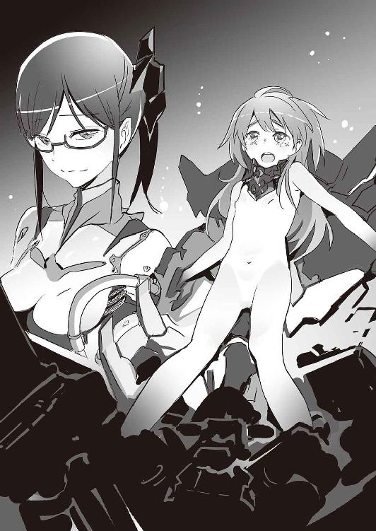
それを克服するために、ナイチンゲールとギルガメシュを研究したんだ。
我々の死因となる遺伝子は変異が激しく、ベクター──遺伝子の運び屋──を使った遺伝子治療でもどうにもならなかった。
だが、ある科学者がまったく新しい治療方法を編み出した。
遺伝病を治療するための、遺伝子を強化するためのスーツ作り......遺伝子強化外骨格、通称ＧＥＮＥＺ計画がスタートしたんだ。
ただ戦うためのものではない。最初から、私たちのためのスーツだったんだよ。
ＧＥＮＥＺを進歩させるためならなんでもやってきた。
巨大民間軍事会社を二つも作ったのも、そういった理由からだ。激しい競争だけが科学を進歩させる。東西冷戦がなければ、人類が月面に立つ日はもっと遅れていたはずさ。
そしていよいよ、研究は完成に近づきつつある。
このままだと私は病気で死んでしまうんだ。
「なあ......とてもかわいそうだろう？」
セルジオは土下座から上体を起こして、ユキナを見上げた。
「それで......」とユキナ。「あなたは、私に何をしてほしいの？」
「簡単だ」涙をぼろぼろとこぼし続けながら、セルジオは言う。「抵抗しないでほしい」
「......は？」
「そのＧＥＮＥＺ......ナイチンゲール専用『イシュタル』は、生物を取り込み同化する機能を持っている。君とイシュタルは、一つになるんだ。そのＧＥＮＥＺには生殖機能もついている。男性用の生殖機能つきＧＥＮＥＺはまだ完成していないが、それもめどがついた。時間の問題だ。ＧＥＮＥＺ同士でセックスして、君は新たなガルヴァーニ一族の赤ん坊を産む。私は四四歳で死ぬが、その赤ん坊はナイチンゲールと同じ......不死身だ」
「何を言っているの......あなたは？」
ユキナの顔は青白くなった。彼女の目には、純粋な恐怖が映っている。
「戸惑うのは仕方ない。だが、私が言ったのは、すべて本当にできることばかりだ」
「あなたは......頭がおかしい......」
「大事なのは遺伝子だよ。ジーンズ。無敵の遺伝子を獲得すること、そして一族の存続」
「ナイチンゲール用ＧＥＮＥＺは向こうの格納庫に何台もプロトタイプがある」
そう言って、セルジオは顎でしゃくって部屋の隅を示す。
「だが、ナイチンゲールの『取り込み機能』がついているのはこの『イシュタル』だけだ。問題はこの取り込み機能でね......。君が『人間として存在していたい』『取り込まれたくない』と抵抗すると神経系の接続が上手くいかない。君がさっさと運命を受け入れてくれたら、我が一族の悲願達成に大きく前進するんだ。いいよね？」
「よ、よくない......」
「えええぇー、ねぇ、たのむよぅー。こんなにかわいそうな一族なのに......」
「私は私でいたい。機械に取り込まれるなんて、冗談じゃない」
「取り込みはデリケートな作業なんだ。君の自我を破壊するような薬品は逆効果になる......。どうしても抵抗するというのなら、原始的に、シンプルにいくしかない。『痛み』を与えて、君の意志をへし折る」
セルジオは立ち上がった。ポイニクス型ＧＥＮＥＺのてのひらには、イシュタルを遠隔操作するためのコマンドパネルが内蔵されている。それを使って、「取り込み」を開始する。
「ぎッ──!?」ユキナの口から、獣の断末魔のような悲鳴がこぼれた。イシュタルがユキナを侵食するために、無数の細いコードを毛穴にさしこみ、神経に直接癒着しようとする。歯医者のドリルで骨を削られるかのような激痛。ユキナは暴れるがイシュタルはびくともしない。涙とよだれをまき散らし、失禁までしてしまう。
「やはり抵抗するんだね......もう......」
セルジオはため息をついた。その言葉通り、彼の手元のコマンドパネルにはシステムの不調を示す赤いシグナルが点滅している。上手くいっていない。
セルジオは言う。
「君は特別なナイチンゲールだ。目をつけて、ずっとデータを収集していた。君の遺伝子は、我が一族との相性がいいんだよ。さらにこちらが密かに開発していたイシュタルとの相性も抜群。このチャンスを逃すとまずいことになる。その新しい体もね、イシュタルが取り込みやすいようにわざわざ調整してあるんだ」
ポイニクス型ＧＥＮＥＺの前腕部には武器の収納スペースがある。セルジオは左手で、右前腕の武器収納スペースから四本の長い針を取り出す。
「このポイニクス型ＧＥＮＥＺの主武装はナノチューブ技術を応用して作られた超硬針だ。体のあちこちに、様々なサイズのニードルガンが仕込まれている。秒速二キロというとてつもない高速で射出される。普通の人間にはまず使いこなせないであろう、強化外骨格用の武器だ。──そしてこの針は、普通にこうやって突き刺すこともできる」
「──ッ！」
セルジオは、ユキナの右肩に針を刺し込んでいった。骨も簡単に貫通する。
「素晴らしい激痛だろう。針は、対象の命を奪わないようにしながら、長時間痛みを与えるのに最も便利な道具の一つだ。ナイチンゲールの再生が始まっても、針を抜かない限り痛みは消えないしな」
セルジオはさらに、ユキナの幼い乳房、そして乳首にも針を突き通す。
「やめて、そんなひどいこと」
七湖が止めに入った。セルジオにすがりつく。
「裏切った君が、敵の心配をするのか」
「限度というものが──」
セルジオはその言葉を遮るために、七湖の首を絞めながら、片手で持ち上げた。「！」
「君の裏切りはとても嬉しいことだったが......調子に乗るのはよくない。それほど重要な人物というわけでもないんだ」
セルジオは七湖を壁に向かって投げた。叩きつけられる七湖。ＧＥＮＥＺの怪力で投げられたら、生身ではたまらない。七湖は衝撃で動けなくなる。絞められていた喉を手で押さえて、咳き込む。あと少しで骨が折れるか、気道が潰されるところだった。
そこへとうとう──。
「ユキナァッ！」
ニムロッドと謙吾が到着した。
３
姿は変わっていても、ユキナはユキナだ。一目見ればわかる。仮にユキナでないにしても、あんな少女がいたぶられているのを放っておけるわけがない。
「謙吾──！」拘束された少女──やはり間違いなくユキナだ──が叫んだ。
「貴様ァッ！」ポイニクス型ＧＥＮＥＺ──社長──セルジオ──見つけた！
謙吾も叫んで、Ｇ─８のトップスピードで殴りかかる。
ためらうことはない。これで終わりだ。セルジオはまだヘルメットを被っていない。むき出しの頭部を狙って、右ストレートから入る。しかし──。
「!?」パンチが当たる直前、セルジオの姿が搔き消えた。上体を振って紙一重でかわしたのだ。謙吾は続いて左フック。やはり最小限の動きでかわされる。右フック、左でジャブ、もう一度右ストレート。──一発も当たらない。
やがてセルジオはコンパクトな前蹴りを謙吾の腹に打ち込んだ。謙吾の体が吹き飛んで、自然と間合いが離れる。
セルジオはヘルメットを被る。
爪兵が仕掛けた。エレシュキガル。ローキックから入る。
タイミングを合わせて、クラウディアもいく。こちらはミドルキック。
セルジオはその場で側転宙返り。その状態から左右に一発ずつ蹴りを放つ。エレシュキガルはどちらも蹴りのガードに成功したものの、威力が強いので後退させられる。
「やろうと思えば、君たちを皆殺しにするもっとえげつない方法はいくらでもあった。──でも、こうして私はここで待っていた。なんでかわかるかい？」
セルジオは謙吾を見つめて言う。
「データを集めていた。そのＧＥＮＥＺの」
「............」
「......愚かなのか。それとも覚悟のうえなのか。そのＧＥＮＥＺこそ、私が欲していたものだ。剣歯虎型のブラックボックスに隠されていたもの。操縦者の遺伝子を取り込んで、急激な速さで『進化』していく機能......。それこそが、一族の悲願を成就するかもしれない」
「もちろん、お前にはやらん」
謙吾は再びセルジオに向かっていく。
「このＧＥＮＥＺでお前をぶっ殺して、ユキナを連れて帰る」
謙吾、爪兵、エレシュキガル──三人がかり。
謙吾は両腕の牙を限界まで伸ばし、エレシュキガルの二人は接近戦用のレーザー糸鋸を構えている。
近づこうとすると、ポイニクス型の前腕部に仕込まれたニードルガンが衝撃波を発した。ＧＥＮＥＺやエレシュキガルの高性能高速コンピュータは、銃口の向きから弾道を予測し、操縦者に最も効率的な回避行動を教える。稲妻のようにジグザグに動きながら、一気に間合いを詰めていく謙吾たち。
まず、謙吾が斬りつける。セルジオは激しい連続攻撃をことごとくかわし、ニードルガンで反撃する。弾道は予測できていても、ポイニクス型の動きがそれを超えている。恐ろしく硬いニードルが、謙吾の右脇腹を貫通する。
爪兵とクラウディアの連携攻撃。光り輝くレーザー・コーピングソウが複雑な軌道を描いてセルジオに襲いかかる。──が、やはりポイニクス型の運動能力がエレシュキガルを凌駕している。ニードルガンの攻撃。爪兵は左上腕を、クラウディアは腹部を撃たれて倒れる。
「君たちはバァカなのかな」セルジオが言う。「自分が使うＧＥＮＥＺ以上の能力を、エレシュキガルに与えるわけがないだろう」
「......謙吾。時間を稼げるか」苦悶しつつ、爪兵は言った。
「何秒だ？」と謙吾。「『分』はきついぜ」
「今からきっかり五秒」
「それならなんとか」
「よし」
謙吾はセルジオに体当たりをかける。肩からの体当たりでフェイント、途中で身を低くして、タックル──なんとか寝技の攻防に持ち込むことができれば、ニードルガンの威力を封じることができる。しかしそれはセルジオも読んでいて、謙吾を抱え込んでからあっさりとタックルを切る。謙吾に膝蹴り。そして背中にニードルガン。「！」激痛にやられて謙吾はバックステップ。Ｇ─８のおかげで背骨をそれたが、あと少しで体が動かなくなるところだった。
──その間に、ニムロッドの四人はキスをした。
爪兵とアンナトゥリー、クラウディアと火沙里。
二人がギルガメシュ化する。
「これで不死者が二人」爪兵が謙吾に向かって言う。「今度は俺たちが時間を稼ぐ。お前もなんとかギルガメシュになれ」
４
不死となった爪兵とクラウディアは、より大胆に踏み込んでレーザー・コーピングソウを振るう。戦いの距離がやや縮まっても、結果は変わらない。セルジオには、攻撃を回避する際にダンスのステップに似た軽やかな動きを混ぜる余裕があった。ヘルメットの下で、エレシュキガルを操縦する二人の顔が青ざめていく。爪兵は思う──俺は間違っていた。イエニ・チェリどころではなかった。本当に恐ろしいのは、セルジオだ。
「何度言えばわかるのか？」
とセルジオ。ニムロッドのエレシュキガルを相手にしつつ、しかもユキナに向かっていく謙吾の足をニードルガンで撃った。太腿に二本突き刺さって、謙吾は転倒する。ユキナに......ナイチンゲールに届かない。
「エレシュキガルではポイニクス型ＧＥＮＥＺには勝てない。犬に微分積分をやらせようと思っても無理でしょ？ そういうふうにできているんだよ。装甲も、このニードルガンでは対抗できないように設計されている。最初からそっちには万に一つも勝ち目がないんだ」
セルジオはさらにニードルガンを発砲。長い針がクラウディアの両手両足に突き刺さる。たまらずレーザー・コーピングソウを取り落とす。針の勢いが強かったので、クラウディアはそのまま背後の壁に「釘付け」にされる。磔にされたキリストみたいに、両方のてのひらにも穴を開けられる。
「クラウディア！」
アサルトライフルを構えたクラウディアのナイチンゲール──火沙里が飛び出す。
セルジオは、火沙里にも容赦なくニードルガンの嵐を浴びせた。火沙里の全身に、大量の針が突き立つ。まるでハリネズミのように──びっしりと。いくらナイチンゲールでも、あれでは動けない。
「こちらには武田新陰流の技がある──」
爪兵は思い切ってセルジオにぶつかっていく。ニードルガンは使えない、密着状態に。
──かかった。
爪兵は内心歓声をあげた。たしかに、ポイニクス型とエレシュキガルの間にはかなりの性能差がある。しかし、性能差は技術で埋めることはできるはずだ──。
密着状態からの具足組み打ち毫勁──得意パターンで、一気にケリを付ける。
左肘と右の掌底をセルジオの肩と脇腹に押し当てる。
武田新陰流、具足組み打ち・捻り五本目──「逆鱗髄」。
だが──。
「なッ!?」
発勁した瞬間、打ちこんだ力がそのまま爪兵に返ってきた。
「......バビロン・メディスンの強化外骨格の全戦闘データは、私に送られていたんだよ。当たり前じゃないか。君が使う変な武術も当然対策はできている」
爪兵は気づいた。ポイニクス型には、対発勁反発複合材料が仕込まれている。──噂は聞いたことがある、勁力に反応して、反発する素材。打ち破るには、刃物がベストだというが。
「だから、言ったろう。万に一つも勝ち目はない」
反発した衝撃によって倒れてしまった爪兵に、セルジオは上からニードルガンを撃ちこんでいく。爪兵は、針で床に縫い付けられた。
「爪兵さん！」とアンナトゥリー。
「来るな！」
来るな、と言っても来るのがアンナトゥリーだ。あとは火沙里と同じ。ニードルガンでハリネズミにされて動けなくなる。
セルジオはもう一発、爪兵の喉を狙ってニードルを放つ。首を守る装甲を突き破って、爪兵の喉仏を貫いて、針の先端が後頭部から突き出して床に刺さる。昆虫採集で虫をピンでとめるように喉をやられた。ギルガメシュ化しているから死にはしないものの、地獄の苦しみだった。
「ハッ......カァッ......」
謙吾は、ニードルガンに足をやられて転倒した。
それでもＧ─８は動く。人工筋肉が傷口をふさいで補助してくれる。必死になって再び走りだすが、そこにニムロッドを倒したポイニクス型ＧＥＮＥＺが立ちはだかる。
「君の大好きな格闘戦だよ」
「邪魔するな！」
「バァカだな。邪魔してるのはそっちなんだってば」
Ｇ─８のラッシュ。フック、ストレート、ジャブ、バックハンドブロー、手刀、鉄槌、掌底打、肘打ち──ありとあらゆる「手技」を駆使して、超高速のコンビネーションを組み立てる。合間合間に、シラットの崩し技──サプー（前方への足払い）やビセット（後方への足払い）も混ぜていく。
「凄い性能だ」謙吾の攻撃をさばきながら、セルジオは驚きの声をあげる。「......でもね」
「......ッ！」
攻撃を、数えきれないほど繰り出す謙吾。それなのに、一発も、かすりもしない。
「基礎となるＧＥＮＥＺ計画が私のてのひらの上なんだ」
と言い、セルジオが放った無造作なパンチがＧ─８の顔面をとらえる。
「たしかに、日本支社独自開発の新型ＧＥＮＥＺは恐ろしい。しかし、その性能は予想がつかないほどじゃない。私の有利は動かない。グリークスとバビロン・メディスン......このポイニクス型は、二つの世界の頂点なんだ」
セルジオの蹴り。高く上げた足で、首筋を狙って蹴り下ろす、クビゲリ──ブラジリアンキックのような軌道の、鋭い縦型のハイキック。謙吾はこれも避けられない。凄まじい打撃力に、謙吾の動きが止まる。セルジオはニードルガンの狙いを定める。謙吾は咄嗟に両腕をクロスさせて自分の頭部を守る。
ニードルガンの連射。謙吾の両腕に次々と突き刺さる。Ｇ─８はエレシュキガルより防御力が上なので簡単に貫通しないが、ニードルの先端は謙吾の骨まで達している。セルジオは撃ち続ける。ニードルが膝の皿に穴を開ける。太腿にも、腹にも、肩にも──。謙吾は倒れる。ダメージがひどすぎて、立っていられない。
「謙吾ぉ......」同じく、体のあちこちに針を刺されたユキナが弱々しい声をあげた。
「なるほど」セルジオは楽しげにうなずき、
「こっちとしては、ギルガメシュ化した君の遺伝子情報を取り込んだその新型ＧＥＮＥＺにも興味はあるんだが......大牙謙吾、君を殺せばユキナは諦めて抵抗をやめそうだ。そっちのほうを優先しよう。ギルガメシュはギルガメシュになれないまま死に、岩清水ユキナはイシュタルに吸収され消える」
ユキナが──消える？
激痛のあまり思考能力が鈍る中、謙吾の脳裏で彼女のイメージが閃く。
ユキナ──幼なじみ。
昔、弱々しかった謙吾を守ってくれた。時代劇と将棋が好きな女の子。
母親を殺されて父親はおかしくなり、謙吾と涼羽は遠い外国に追いやられた。涼羽は海外で孤独になったが、それでも教育は受けられた。悲惨だったのは謙吾で、少年兵のキャンプに送られて、グリークスに入るまではモノのように売買された。
グリークスに入って、ＧＥＮＥＺの操縦者に選ばれて、やはり戦いの連続だった。
そして、海神学園でユキナと再会する。
成長した彼女は、驚くほど美しかった。今思えば、その瞬間恋に落ちていた。
それから先も戦いは続いた。校内でも、校外でも──。しかし、以前と同じことは何もなかった。任務も学校行事も、すべてが変わった。何もかもが光り輝くように見えた。悲惨な作戦も、彼女と一緒なら乗り越えられた。
ほんのちょっと前──謙吾はユキナと愛し合った。あんなに素晴らしい瞬間がこの世にあるなんて、謙吾にはまだ信じられないほどだ。
でも──まだ、足りない。もっとユキナと愛し合いたい。
「まだだ」
謙吾はつぶやき、立ち上がった。体中に針が刺さったままだ。
「往生際が悪い......」
セルジオは、ニードルガンの銃口を謙吾の眉間にぴたりと合わせる。
そのとき──。
「さすがに油断してるのね」
光る刃が一閃し、セルジオの右手の指が切断されて宙を舞った。
切ったのは──イシュタルによく似たＧＥＮＥＺをまとった少女。ヘルメットは被っていない。ユキナの「姉」。岩清水ニキだ。ついさっき、エレシュキガルが落としたレーザー・コーピングソウを拾って、右手に構えている。
ポイニクス型ＧＥＮＥＺの装甲は、もちろんレーザー・コーピングソウにも対応している。しかし、指の関節部分を狙われたら防ぎようがなかったのだ。
岩清水ニキは、ずっと鞠歌から情報を受け取っていた。日本支社も、グリークス本社の動きもニキには筒抜けだったのだ。密かに潜入した彼女は、イシュタルのプロトタイプであるナイチンゲール用ＧＥＮＥＺを発見した。
金色の装甲、鋭角的なデザイン──プロトタイプ・イシュタル。
セルジオがユキナに向かってこう言っていた。
『ナイチンゲール用ＧＥＮＥＺは向こうの格納庫に何台もプロトタイプがある。だが、ナイチンゲールの「取り込み機能」がついているのはこの「イシュタル」だけだ』
それを聞いたからこそ、ニキは安心してそのＧＥＮＥＺをまとった。
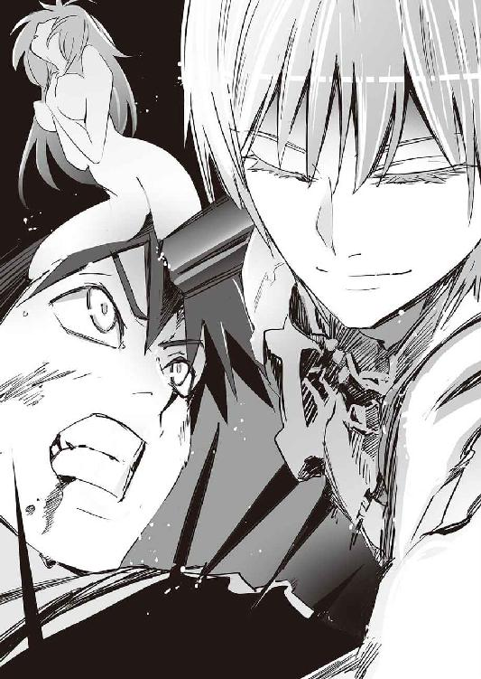
５
「ユキナのことは大嫌いよ。甘ちゃんなんだもの」
ニキはさらにレーザー・コーピングソウで斬りつける。完全に奇襲が成功していた。ポイニクス型ＧＥＮＥＺの首筋に糸鋸が食い込んで、火花をあげる──が、ここまでだ。より大きなダメージを与えることはできない。
「『人間なんてどうでもいい。いくら死んでも構わない』......私がそう言うとユキナって怒るんだもん。ちょっと何百人か人間を殺したくらいで、私は監禁されて......でもユキナは助けてくれないし。やってられないわよ、まったく」
でもね、とニキは言葉をつなぐ。
「ユキナがいなくなると困るのよ」
レーザー・コーピングソウを捨てて、ハイキック。
「ナイチンゲールの人生は終わらない。とても退屈なの」
さらにニキは後ろ回し蹴り。
「ユキナのことは大嫌いだけど、いなくなると退屈で死にたくなる。でも死ねない。ねえ、わかる。複雑なのよ」
「調子に乗るな！」
セルジオが怒声をあげて、プロトタイプ・イシュタルの腹部に蹴りを打ち込む。このＧＥＮＥＺにも身体能力向上機能はついているが、本質的には戦闘用ではない。ポイニクス型の蹴り一発で、ほとんどの機能が停止してしまう。
「残念だったな！」
セルジオは再びニードルガンを謙吾に照準する。謙吾は傷だらけだが、それでもユキナに向かって、這うように進んでいる。
「とどめをさしてやろう。いよいよラストシーンだな。君たちにとってはバッドエンドになる」
「そうかな？」
と、セルジオの背後に少女の声がかかる。思わず振り返る。
そこに、スクアロドン型ＧＥＮＥＺ。七湖だ。
「この格納庫には、こいつも置いてあったの。忘れてた？」
頭部から角のような部品が伸びて、そこには鋭い牙がびっしりと並んでいる。手足に小さな「ひれ」がついている、大型ＧＥＮＥＺ。
七湖はスクアロドン型の専用アサルトライフルを両手で構えた。水陸両用の最新型「ブラダマンテ」。口径五・五六ミリ、長さ四〇ミリというケースレスの特殊ニードル状ライフル弾を、電気発火で射出する。
ブラダマンテの引き金を絞る。銃声、そして着弾音。ガガガガッという音とともにすべて跳ね返される。このサイズ、この銃口初速のライフル弾はポイニクス型ＧＥＮＥＺの装甲には通じない。そんなことは七湖にもわかっている。ほんの数秒でも、謙吾のために時間が稼げればそれでいい。
──ようやく、謙吾はユキナのもとにたどり着いた。ニキと七湖のおかげだ。
「謙吾......」見つめ合う。二人の瞳がすでにうっすらと濡れているのは受けた傷の痛みのせいだけではない。
「ユキナ......」とささやき、ヘルメットを外す。
「ハリネズミみたいだよ......謙吾」
「そっちこそ」
二人で、少し笑う。そして、互いの遺伝子を交換するようにキス。生まれてきてくれてありがとう、会いにきてくれてありがとうのキス。頑張って、邪悪なものに負けないで。たっぷりの愛をこめて。
謙吾は不死、ギルガメシュとなる。傷口が再生するが、それだけではない。変異した遺伝子を吸収して、Ｇ─８が爆発的に成長する。人工筋肉が膨らむ。
謙吾はイシュタルの部品を破壊し、ユキナを解放した。すぐに、彼女の体から針を抜く。自分の体から針を抜くのはそのあとだ。
「......大丈夫？」
「ああ」謙吾はうなずく。「決着をつけられそうだ」
謙吾はヘルメットを被り直し、七湖を倒そうとするセルジオに背後から襲いかかった。
Ｇ─８の性能がどんどん上がっていく。まるで天井知らずだ。驚くべき速さで成長し、進化する──究極のＧＥＮＥＺ。遺伝子本来の目的を突き詰めた存在。Ｇ─８で蹴ると、もうポイニクス型では避けられない。性能差が逆転している。
「......私たちのことが、かわいそうじゃないのか」
セルジオが泣きながら言った。
「知るか」謙吾は吐き捨てる。「『かわいそうくらべ』を始めたらキリがないだろ」
この世で一番不幸なのは、生まれてすぐ死んだ赤ん坊だ。
妊婦の腹の中にいたまま、生まれることもなく空爆で死んだ命もある。
「生きている限り、生きるために戦う」
凄まじい速度で牙の連続突きを行うと、折れてしまった。謙吾は格闘戦に切り替える。
謙吾は殴る。今度は当たる。拳がポイニクス型ＧＥＮＥＺの装甲にヒビを入れていく。ガードを固めるセルジオ。パンチを防がれる。Ｇ─８の性能が上回ったといっても、ポイニクス型はやはり強敵だ。
セルジオに、カウンターで殴り返される。Ｇ─８のヘルメットが揺れるが、太い首の人工筋肉が衝撃の大部分を吸収する。
謙吾はハイキック。これもガードされる。
さらに謙吾はハイキック──カウンターを狙うセルジオ──しかし謙吾は蹴りを最後まで打たない──蹴りを打つ途中の右足の爪先を、自分の右手でつかんで、強引に勢いをためている──空手でいう「裾つかみ蹴り」──えっ、と驚いたセルジオのガードに隙間が生じる──そこでパッと手を離して、ためていた蹴りを打つ。普通に蹴ったほうが威力はあるが、この蹴りの目的は相手のタイミングを「ずらす」ことだ。謙吾の目論見通り、変則的な蹴りがセルジオの首筋にヒットして、敵はよろめく。
──これなら、いける。相手の戦いのリズムが崩れている。
すかさず謙吾は体勢を立て直そうとしているセルジオに飛びついて腕ひしぎを極めた。床に倒しながら、彼の右腕を強化外骨格ごとへし折る。
「お前は、あまりにも多くの命を奪い過ぎる」
謙吾はセルジオの上を滑るように移動して、彼の左手首に関節技をかけて、破壊する。一瞬で立ち上がって、セルジオの足首を踏み潰す。
「貴様あッ！」
「これで終わりだ」
謙吾はポイニクス型ＧＥＮＥＺの胸部装甲を、力任せに引き剝がした。セルジオの生身が露出する。彼の体は筋肉質だったが、なくなった装甲のこと考えると、豆腐のように柔らかそうに見える。そこに、謙吾は右四本指をそろえた貫手を突きこむ。内臓を突き破り、指先が背中側の装甲に触れる。ここで殺しておかないと、あまりにも危険な男だ。
「最後に一つ訊く」
謙吾はセルジオの耳に口を近づけて、言った。
「ユキナをもとに戻す方法は？」
「............」瀕死のセルジオは、その答えをぼそぼそとつぶやいた。すでに意識が朦朧としているようだし、噓はつかないだろう。
謙吾は彼の体から手を抜いた。
セルジオの死因は、出血多量だ。謙吾はゆっくりと彼の死体から離れる。
──これで、終わりだ。終わってみれば、少し呆気ないくらいだった。第三次世界大戦を起こす力を持ったこの男も、無敵の（正確には無敵のはずだった）ＧＥＮＥＺをまとっていたこの男も、こうなってしまえばただの死体でしかない。彼は富も権力も、なんでも持っていた。しかし、不死にはなれなかったし、一族の病は克服できなかったし──今はもう、命もない。謙吾は深いため息をつく。どんな感情が生んだため息なのか、謙吾自身にもわからない。
そんな謙吾に、駆け寄ってきたユキナが飛びついた。
謙吾は彼女を抱いて、片手でヘルメットを外す。
「ずいぶんちっちゃくなった。これはこれで可愛いけど」
「バカ......」
もう一度キス。戦う人間ではなく、恋人同士として。
６
ニムロッドの四人から針を抜く作業はユキナに任せて、謙吾は七湖に近寄っていった。
「謙吾」
「よぅ、七湖......大変だったな」
「............」七湖は、スクアロドン型のヘルメットを外した。大型の機体と、装甲の隙間からのぞく七湖の小さな頭がなんともアンバランスだ。
彼女は、ひどいイタズラをしでかして困り果てている子どもの顔をしていた。ほんの些細なきっかけで、涙が止まらなくなるだろう。
「裏切りも色々ある。人間のクズがやる裏切りもあれば、苦悩の末の裏切りもある」
謙吾は優しく語りかける。
「裏切られたものよりも、裏切ったもののほうがつらい裏切りもある」
「けん、ごぉ......」七湖の声は震えている。
「いいんだ」
謙吾は、七湖を抱きしめた。両者強化外骨格をつけているので上手くいかないが、少なくとも顔は近づいた。泣きそうな顔のまま、七湖は頰を朱に染める。
「話し合って、時間をかけて修復していこう」
「修復？」
「俺はユキナのことが好きだ」
「......知ってる」
「七湖の、そういう意味での好意には応えられないと思う。でも俺たちは仲間だ。仲間を失うのはとてもつらい。本当につらい」
「......謙吾のそういう優しさが、私を追い詰めたんだよ」
「......そっか」謙吾は目を丸くして、すぐに。「ごめん」
それを聞いて、七湖はぷっと吹き出した。
「でも、今気づいた。私も、謙吾を追い詰めてる」
「追い詰められたとは思ってないけど......悲しかったな」
「私を......許してくれるの？」
「許すも何も」謙吾は安心して微笑んだ。「本当に悪かった。あと、助けてくれてありがとう」
これが最後のひと押しになったらしく、七湖は顔をくしゃくしゃにして泣きだした。スクアロドン型が両膝を床につく。謙吾はそんな七湖の頭を撫でて、言う。
「学園生活を、やり直そう」
７
「......あー」自分の口から出たはずのその声が、他人の声のように聞こえる。
彩離はゆっくりと重いまぶたを開けた。
洋上の強い潮風が吹いている。こども学長を乗せたコルベット艦の甲板上だ。
思い出す──強敵、シュー・ジンジンと戦っていて──相打ちみたいになったんだっけ。あれから、どうなったのだろうか？
そんなことを考えていると、大の字に倒れている彩離にこども学長が近づいてきた。
「お疲れ様です。彩離」見下ろすこども学長。
「......今、どんな状況っすか？」倒れたまま見上げる彩離。
「逆に、彩離はどこまで覚えているんですか？」
「えっと......」少し考えながら、言う。「シュー・ジンジンと、相打ちっぽくなったところまで」
「やっぱり」こども学長は呆れたように言う。「じゃあそこから説明しますね」
「せつめい、ぷりーず」
「......シュー・ジンジンと相打ちになったあとも、しばらく戦いは続きました。あなたはまるで別人のように激しい戦いぶりに」
あー、またやっちゃったかー、と彩離は思う。理性を失って戦うことが、たまにある。人間ではなく、一個の戦闘機械として。
こども学長は続ける。
「......どうやら相打ちの際にダメージが大きかったのはシュー・ジンジンのほうだったようで、やがて彩離は彼女を圧倒。意識を失うまで叩きのめしました。現在、彼女は生徒会憲兵隊が拘束中です......。
......そして、シュー・ジンジンを倒したあなたは、ばったり眠り込んでしまった。恐鳥型ＧＥＮＥＺのモニタリング機能によれば、致命傷になりそうなダメージは一つもなかったので、そのまま放っておくことに......」
「ひどいなー。野ざらしで放置って」
「......それくらい気持ちよさそうに寝てたんですよ......」
「......で」彩離はここで表情を引き締める。「決戦用突入分隊は？」
「作戦は成功です。セルジオの打倒、ユキナ、七湖の奪還......目的はすべて達成。しかも、突入分隊に戦死者もなし。パーフェクトです」
「よかった......」
彩離は安心して笑みをこぼした。謙吾も爪兵も七湖も、全員無事──。それより嬉しいことがあるだろうか。こんな満足感は、今までどんな作戦でも味わったことがなかった。自分たちのための戦い、本当の意味で世界を守るための戦い、そして完璧な勝利。
「......ところで学長」
「なんです？」
「ここからだと、学長のぱんつが見える。黒なんかはいてるんだね。大人ぶっちゃって......」
こども学長は顔を真っ赤にして、彩離の顔をげしげしと何度も踏みつける。
８
──研究施設の奥に、モニタリングルームらしき部屋があり、ふと気になって謙吾は一人でそこに足を踏み入れた。最初、部屋の中は真っ暗で、ヘルメットを被っていない状態の目には何があるのかわからない。しかし、闇の奥に人の気配がたしかに存在している。
謙吾が警戒していると、ライターでタバコに火をつける音がした。その火に浮かび上がったのは、たとえ一瞬でも見間違えるわけがない──謙吾の父、厳一の顔だった。
ずっとセルジオに協力していた、日本の外務大臣、大牙厳一。
「セルジオを殺すなんてな......バカ息子め......」
「バカはお前だ、厳一」謙吾は呼び捨てにした。もはや父とは思っていなかった。「セルジオの目的を知っていて協力していたのか？」
「あいつの目的は単純だ。一族の病を治すこと」
「第三次世界大戦は？」
「それはむしろ、私の望みだった」
厳一の言葉に、謙吾は思わず顔をしかめる。
「......なに？」
「セルジオは戦争を愛していた。戦争だけが文明、文化、科学を進歩させると信じていた。......だから私が第三次世界大戦を提案したら、嬉々として話にのってきたよ。私は、セルジオにグリークス日本支社の情報を提供する。なにしろ日本の外務大臣だからな。なんだかんだで色々とネタが入ってくるんだ。そしてセルジオは、その見返りとして、私の計画した通りに世界大戦の準備を進める......」
厳一が部屋の電灯をつけた。明るくなると、厳一が安っぽいベンチに腰掛けているのがわかる。彼の右手には火のついたタバコが、左手にはタッチパネルのリモコンが握られている。
「知ってるか、謙吾。この双子の塔には、核ミサイルの発射基地も隠されているんだ。複雑な変形施設になっていてね......衛星から完全に秘匿したまま、発射準備を完了することができる。あとは、私がこのコマンドパネルで命令を出すだけだ。──第三次世界大戦は、正体不明の核ミサイルから始まるわけさ」
「どこかの国が撃墜するさ。無駄なことはやめろ」
「無駄かもしれない。そうじゃないかもしれない」
厳一は静かに笑う。
謙吾は、改めて厳一の顔を見た。
黒いスーツにロングコート。異常なまでに鋭い目つきに、堅く引き締まった口、白髪がずいぶん増えた頭──。久しぶりにまともに見た父の顔は、すっかり変わり果てていた。目もとから異常性が滲み出ている。謙吾は気づいた──彼は、世界が燃え果てるのを見て行き場のない怒りを散らしたいだけなのだ。
「お前には、わかるだろ謙吾。愛する女がいるのなら」
「もしかして......」謙吾はうめくように言う。「母さんの......復讐のつもりなのか？」
「......セルジオも死んだ」その問いには答えず、厳一はささやくように言う。「あとは、俺がやつのかわりにこのボタンを出すだけだ」
「やめろ、大牙厳一」謙吾は厳一に向かって歩みを進める。「何発かの核ミサイルで、本当に何かが変わると思っているのか。たしかに、大勢の人が死ぬだろう。だが、それだけだ。世界はそれほどヤワじゃない」
間合いが詰まった。
父と子は、至近距離で睨み合う。
「捨てられた恨みを晴らしてみせろ。バカ息子。できないか？ 腰抜けめ」
「止めるためには、殺せ......そう言っているのか、あんたは」
「......世界が燃えるのを見たいんだよ」
「俺は、そんなもの見たくない。平和な世界が見てみたい」
「そんなものは存在しない」
「そうかもしれない......でも、そうじゃないかもしれない」
謙吾はＧ─８の手で厳一の喉を包み込む。
彼の首の骨を、いつでもへし折ることができるように。
「俺には好きな女の子がいるんだ。愛してる」
「ほう」と、感心したように厳一。
「あんたにだってわかるだろ、親父。愛した女がいたのなら」
「............」
「俺は彼女と生きていく。それは炎と灰の世界じゃない。彼女のためなら、絶縁状態の父親を殺すのなんてどうってことないよ」
「昔読んだ小説のことを思い出したよ」厳一は言う。「エリック・マコーマックだ。『愛することを学んだ瞬間、男は殺すことを学ぶ』......」
厳一は立ち上がり、それからコマンドパネルを床に捨てた。すかさず、謙吾はそれを踏み潰す。父は、命を惜しんだのか？ 違う、と謙吾は直感した。強化外骨格に喉をつかまれていても、彼の瞳にまったく恐れの色はない。
謙吾は、厳一の首から手を離した。
「お前が言った通りだ。これだけの大戦闘だ。世界各国がこの双子の塔に注目している。こんな状態で核ミサイルを飛ばしても、何の意味もない......」
厳一は、謙吾の横を通り過ぎていく。追いかけてまで殺す気にはなれなかった。
「そのうち、また会うかもな......バカ息子」
「もう、妙なことはするな。俺は、あんたとは二度と会いたくない」
「戦争もテロもなくならんよ」厳一は言い切った。「人間がもっと減らない限りな」
エピローグ
１
広い敷地と自由な校風が売りの名門、私立海神学園。
その校舎群は、背の高い常緑樹林に囲まれている。常緑樹は落葉樹と違い、一年を通してずっと葉をつける。深い緑色の葉が鬱蒼と茂る林は、この学校に通う生徒たちから「まるで城壁だ」と思われている。葉が落ちることなく枯れることもない、海神の城壁。
丁寧に整備された花壇には季節の花が咲き乱れ、校舎と校舎をつなぐ歩道には石造りの古風な屋根がかかっている。校舎、図書館、食堂など、すべての建物が伝統のある大きな聖堂に見える。
特進クラスの教室に、だらけきった雰囲気の教師──大迫が入ってくる。
「今日は転校生を紹介するー」
「ベタやなあ」すかさずセルジュが言った。
「転校生にベタもクソもあるか」苦笑する大迫。「入ってこい」
「......武田爪兵」
「アンナトゥリー・コルサコフ......です。よろしくお願いします」
──双子の塔での決戦後。
グリークスとバビロン・メディスンには、それぞれ新しい社長が就任した。セルジオの死について、その真相が明らかにされることはなく、ヴェルトハイム公国が介入した大規模な戦闘も公式には「なかったこと」にされた。厳島一族が暗躍し、グリークスの新社長はこども学長の兄──シキサギということになった。グリークス・グループ内の力関係は、通常の親子会社とは異なる。結果的に、日本支社は本社の乗っ取りに成功したのだ。珍しいが、前例がないわけではない「親子会社逆転」の一種だ。
グリークスでもバビロン・メディスンでも大幅な組織刷新が行われ、大勢の立場が微妙になった。ニムロッドがまさにそうだ。厳島一族が前に出て調整にあたったグリークスと違って、バビロン・メディスンは社長が「暗殺」された格好であり、内部の混乱・権力闘争は苛烈なものになった。
イエニ・チェリとガンズ・オブ・ナヴァロンが姿を消し、バビロン・メディスンの特殊傭兵戦力は半減した。そうすると責任問題が持ち上がって、そこでニムロッドが槍玉に上がった。自分の会社の精鋭部隊と社長を潰す手伝いをしたのは事実なので、言い訳もしにくい。
仕方がないので、ニムロッドはバビロン・メディスンを飛び出した。
クラウディアと火沙里はイギリスにいる。
バビロン・メディスンのイギリス支社は、今回の混乱を切っ掛けに独立。二人はその新会社に転職した。そして爪兵とアンナトゥリーの転職先は──。
「グリークスにしちゃったわけだねー」
と、クラウディアは耐水仕様のスマートフォンに向かって言った。彼女は、ロンドンの高級ホテルでスイートルームをとっている。そのバスルーム。無駄のない肢体を泡風呂に半分だけ沈めて、遠く離れた日本の爪兵に話しかけている。
『他に選択肢がなかったんだよ』爪兵の声が返ってきた。
「噓つきー。ここの新会社もあるじゃん」
『......胡散臭いんだよ、そこの会社も』
「でも、そこで爪兵くんが海神学園入りとか......」
『今度爪兵くんって呼んだら殺すぞ』
「おおコワ！」
『で、何のようだ。つまんねー話しかしねーなら切るぞ』
「......ありがとう」
『......きゅ、急にどうした』
「いや、ちゃんとお礼を言ってなかったと思ってね。私がセルジオと戦ったのは、ナイチンゲールを守るためさ。例のＧＥＮＥＺ......イシュタルが完成していたら、遅かれ早かれ岩清水ユキナ以外のナイチンゲールも犠牲になっていた......遺伝子を残すための方法は多いほうがいいに決まっているからね。セルジオはまさに、妄念に......ジーンズにとりつかれていた。君の協力のおかげさ」
『......やっぱりつまんねー内容だな。切るぞ』
「素直じゃないね。オーケイ。またそのうち」
通話が終わった。クラウディアが立ち上がって浴室の棚にスマートフォンを置くと、そこに火沙里が入ってくる。もちろん全裸だ。
「火沙里、待ってたよ」
「......誰と電話してたんだよ」
「気になる？ 嫉妬してる？」
「ば、バカじゃねぇの......クラウ」
「火沙里にバカって呼ばれると凄く興奮するんだよね、私」
クラウディアと火沙里はキス。舌を絡め合う。二人でシャワーを浴びながら、柔らかい肌を密着させる。乳房が変形して、乳首が擦れる。
興奮してくると、クラウディアの女性器の一部は肥大化し、ペニス状になっていく。
二人は女同士で恋人同士で、愛を確かめ合うのに「こんなもの」は必要なかったが、ギルガメシュの「性能」を向上させるためにとりつけた。精液を放つことができる擬似ペニスが、遺伝子情報交換に必要だったのだ。ｉＰＳ細胞技術の産物。
「これ、もうちょっとすると自然に消えるらしいよ。また細胞カプセルを飲まない限り」
「ふぅん......」
「あ、今、ちょっと『もったいないな』って思ったでしょ？」
「............」すでにほんのり朱色に染まっていた顔をさらに紅潮させて、火沙里は勃起しつつあるクラウディアのペニスをわざと強めに握った。
「いでっ！」
２
「あいつは相変わらずみてーだな......」
と、爪兵は独りごちる。スマートフォンをポケットに片付ける。
海神学園の校舎内。つまらない授業を途中で抜け出して、一番ひとけのない場所を探していたら、「第二保健室」という部屋を見つけた。緊急事態用に増設された保健室らしいが、普段教師やケガをした生徒は「第一保健室」のほうにいるのでとても静かだ。
転校生で、しかも元バビロン・メディスンということもあって、うっとうしい質問攻めにされた。そこでクラスメートの相手はアンナトゥリーに任せることにした。休み時間になったら彼女は忙しくなることだろう。
爪兵の姉は、アンナトゥリーを守るために死んだ。
かつて、爪兵はアンナトゥリーを憎んでいた。しかし、グリークスとバビロン・メディスンの争いが出来レースだったために、姉の死まで汚された気分だった。──ということは、自分のアンナトゥリーへの憎しみはなんだったのだろうか？ 真の敵の存在も知らずに、それは間違った怒りだったのか。いまさら謝ることもできないし......。
ドアが開いて、第二保健室に一人が入ってきた。誰だ、保健教諭だったら面倒だな......と考えて爪兵が軽く顔をしかめると、前に現れたのはＧＥＮＥＺ操縦者の一人、足クセが悪い格闘女、堤彩離だった。
「ちゃーす」
「なんだよテメー」
「へへー、ちょっと捜しちゃった。授業サボっちゃダメじゃーん。ダメじゃーん」
「うざいなお前......俺に用でもあるのか」
「うーん......用事というか......なんかよくわかんないんだよね」
そう言った彩離は、唇を可愛く尖らせて、自分の短い前髪をくるくる巻いている。
「はあ？」
「あなたを見てると、ドキドキするの」
「......病気か何かじゃねぇのか」
「なんでそんなに冷たいのさー！」
彩離は、ベッドの端に腰掛けている爪兵のすねにローキックを打ちこんだ。乾いた打撃音。
「いって！ なにすんだこのアマ！ アマチュアの蹴りじゃねーんだから！」
腹がたったので立ち上がって、彩離の肩をつかむ爪兵。彩離はそれを嫌がって、爪兵の手を立ち関節で引き剝がそうとする。
なかば反射的に爪兵は、彩離に向かって踏み込んで、足をかけて投げる。彩離は爪兵の太腿に自分の足を引っ掛けて抵抗する。
結局──二人はもつれ合って、保健室のベッドに倒れこんだ。爪兵のほうが上になったので、まるで彩離を押し倒したような格好だ。
こうなったのは偶然の産物だったが、二人の間に奇妙な空気が流れる。難解なパズルに、かちりとピースがはまって前進したときの感覚。
「これだよ、これ......」と彩離。
「な、なんだよ」
「ドキドキする......」
特殊訓練を受けた凶暴な少女が、今は情熱的に瞳をうるませている。
実は俺もだ──とは爪兵は言えなかった。それに、言葉が必要な雰囲気でもなかった。二人は唇を重ねた。アンナトゥリー以外の少女とキスをするのは、久しぶりだった。
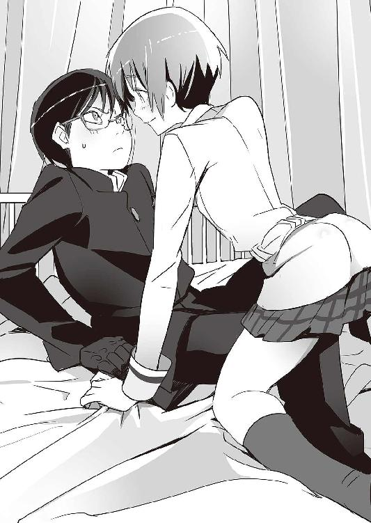
３
高等部第一校舎一階、高等部学長室。その分厚い扉には、普通の学校ではまず見かけることのない指紋認証式のロックがかかっている。
中に入って、そこにいるのはおよそ「学長」のイメージからかけ離れた人物。
豪奢な絨毯に古めかしい調度品、マイセンの紅茶セットにマホガニー材の本棚──中世ヨーロッパ貴族の書斎のような豪華な部屋の中央で、若い女性がうつらうつらと眠りかけていた。──女性、というより少女、あるいは子どもと表現した方が正確かもしれない。ロングの銀髪はわずかにくせ毛気味で、全体的にふわふわしている。
少女──厳島アイナは、来客に気づいて目を覚ました。
「......セルジュ」
ハンサムな関西弁の戦闘用ゴーレム、セルジュ・ドラグレスク。
「どもども。すみません、邪魔しちゃったみたいで......」
彼の指紋は、この部屋のセキュリティシステムに登録してある。
「いえ、どうせ起きて仕事をしないといけなかったし......」
いつの間にウトウトしていたのだろう。デスクの端には、すっかり冷たくなってしまった紅茶が入ったカップが置いてある。
「忙しそうですなあ」
「シキサギがギリシャに行ってしまいましたからね......」
現在、アイナは高等部特進クラスだけでなく、大学部特進クラスの責任者でもある。事実上の日本支社社長だ。
「忙しいなら、何か手伝いましょうか？」セルジュが人懐っこい笑顔で言った。
「......どうしたんですか？ 急に」
「見た目はこの通りだし、記憶の調整装置があるとはいえ、俺もいいトシです。そろそろ現場から離れた仕事も覚えようかと思いまして」
「それはつまり」
セルジュの申し出に、しばらく理解が追いつかず、アイナはきょとんとした顔になった。
「ずっと、私のそばにいてくれるのですか......？」
「まあ、補佐役、ということになれば、そういう言い方もできますなぁ」
次の瞬間、アイナの大きな瞳が輝く。「......ぜひ！ ぜひ！」
「わっ。びっくりした」
「セルジュ・ドラグレスク！ あなたを学長補佐に任命します！」
「そんな、急に......いいんですか？」
「なによ、そっちが先に言い出したんじゃない！」
「はあ、まあ、たしかに」
４
海神学園高等部校舎の地下、屋内射撃練習場。ボウリング場によく似た施設。ずらりと並んだスチール製のレールに、人型標的が吊り下げられている。射撃練習場のガンロッカーには、第二次世界大戦中に使われていた古い銃から、今年発表されたばかりの最新型まで、ありとあらゆる銃種がそろっている。
作業台がついた射手ブースの一つに、特進クラスの林力也がいた。服部一徹との戦闘で両目を負傷し、大火傷を負い、両腕を失って、とうとう双子の塔での戦いには参加できなかった。火傷は皮膚の移植で、目は細胞再生治療で回復。そして最先端治療を受けた彼の両腕は、機械のものに変わっている。
骨と神経に直接電極を埋め込むことで、思考制御の自然な動作が可能になったバイオニック・アームだ。ダイレクトな神経フィードバックを行う双方向インターフェイスと人工筋肉の組み合わせによって、本物の腕に限りなく近い反応速度を実現している。
林は次世代義手の性能を確認するために、人型標的を狙って撃って撃って撃ちまくる。ハンドガン、ショットガン、アサルトライフル......様々な銃を次々と試していく。
「せっかくだから、どんどん義手を高性能化していくつもりだ」
「腕の内側に武器を内蔵するとか？」
「よくわかったな」
「お前が考えそうなこった」
林の隣には、スポッティングスコープを構えた張鐘がいて、着弾評価役を務めている。二人とも、射撃用の特殊なノイズカット耳栓を装着。騒音、射撃音、爆発音といった大きな音は大幅にカットするが、日常会話のような普通の音はほぼそのまま通す。
「調子はいい感じだな」と張鐘。「前より腕が上がったんじゃないか」
「上手いこと言ったつもりか」
そう言った林は、反動の大きい七・六二ミリ口径のカラシニコフをフルオートで連射。しかし新しい腕は、暴れ馬のようなそのライフルを上手くコントロールしている。弾倉五つを撃ち尽くして、二人は一休みに入る。
「お疲れ様です」
射撃練習場の休憩所に、梓馬亜佑美が待っていた。いつも通りのメイド服姿だ。
「サンドイッチを持ってきました」
「ありがとう」と林は亜佑美の正面に座る。張鐘は林の隣に。
「......新しい両腕、かっこいいですよ」と亜佑美。
「別に、これから先も戦うために必要なだけだ」恐らくわざとぶっきらぼうに言う林。
「もしかして......」そのやり取りを見た張鐘は少し首を傾げて、言う。「その、なんだ......二人は、もう付き合ってる？」
その言葉に、林と亜佑美は過剰に反応した。
「そ、そんな......！」
「何を言ってるんだ！ 張鐘！ バカモノ！」
「あのあと、全然話をする暇もなくて......」
「恋愛なんて、俺たちにはまだ早いし......」
「あーあ」
ごまかす二人の様子に、こりゃ時間の問題だな、と張鐘は思う。
「......やってらんねーよ、まったく」
５
海神学園の部室棟、パソコン部。ファンタスティック・スリーの本拠地。
「やっぱり七湖がいるとしっくりくるなあ」
「これでねんがんのファンタスティック・フォーだ！」
「と言いたいところなんだけど......」
「こういうときに限って、鞠歌がいないんだよなあ」
部室で、コバさんは録画しておいた深夜アニメを見ながらキーボードを叩いて仕事中。ヒデヨシは大手動画サイトでアメリカのハンバーガーショップの食事風景を見つつ、スナック菓子をバリバリ食べている。今日は鞠歌はいないが──そのかわりに、七湖がいる。
ファンタスティック・フォーの仕事は山ほどあった。最も重要なのは、双子の塔で起きた大戦闘の証拠隠滅だ。
「どこ行ったの？」と七湖。
「デートだって」とヒデヨシ。
七湖は微かに目を丸くして、
「あのこ、地味なのにカレシいたんだ......へえ......」
「地味なのに......って本人が聞いたら怒るよ」とヒデヨシ。
「七湖だってそんなに派手なほうじゃ......」と小声でコバさん。
「何か言った？」
「いや、別に......それより」すかさず話をごまかそうとするコバさん。「鞠歌のぶん、きっちり働いてもらうからな。まあ、七湖ならあっという間だろうけどさ......」
「なんていうか......」七湖は不思議そうに言う。「特進クラスのみんなは、私に対してちょっと甘過ぎない？ 私が言うのもナンだけど」
「裏切ったことについて？」コバさんは本当にどうでもよさそうだ。「甘いも何も......謙吾や学長が『気にしない』と言ってるんだ。俺たちがどうこう言うこっちゃない」
「............」
「七湖がさ、双子の塔のセキュリティを本気で守ってたら、どうにもならなかった。結果オーライだよ......でも、もう裏切るなよ。面倒だから」
「大丈夫だと思う」七湖は嚙み締めるように言った。「私は今でも謙吾が好き。そのことを考えるともやもやする。でも、今のもやもやは、昔のとちょっと違うの。上手く言えないけど......謙吾がユキナと付き合ってるのはもう仕方ないとして、私も同時ってのは無理かな？」
その言葉の意味がのみこめなくて、コバさんとヒデヨシは顔を見合わせる。
「謙吾の体力なら、相手が二人でも平気でしょ？」
七湖がそこまで言ったところでようやく意味がわかって、ハッカー男子二人は同時に赤面。コバさんが怒鳴る。
「そういうのは感心できない。別の男を探せ！」
鞠歌とニキは、新宿の大型シネマ・コンプレックスを目指している。観たい映画があるわけではない。とにかく、人気がなくて客が少ない映画ならなんでもいい。理想的なのは、三〇〇人入る劇場が二割ほど埋まっている──程度の状況。そういう状況だと、暗闇を利用した羞恥プレイが楽しめる。二人はすでにセックスのことしか考えていない。
「いいんですか？」歩きながら、鞠歌はふと気になったことを訊ねる。
「何が？」
「大変な事件のあとなのに......私なんかとデートしてて」
「そんな風に言わないで。あなたはとても素敵よ」
ニキは、真顔でこういうセリフを平気で口にする。
「えへへ......」鞠歌は幸せそうに照れ笑い。
ニキは、少しだけ厳しい顔になって言う。
「最初、セルジオに協力しようと思ったのは、私が新しい戦争を欲していたから」
「............」彼女の言葉が、鞠歌の心にちくりと突き刺さった。鞠歌はニキを愛している。しかし、当たり前の話だが、戦争のことは好きになれない。これさえなくなってくれれば完璧な女の子なのに......と鞠歌は思う。
ニキは続ける。
「でも、ナイチンゲールを無力化する方法なんて困る」
「......それは、私も困ります」
「今ので思い出した。どさくさ紛れに盗んできたナイチンゲール用ＧＥＮＥＺ......プロトタイプ・イシュタル。あれ、どんな感じ？」
「こっそり整備中です。私一人でやんなきゃいけないんで、時間はかかりそうですけど」
ニキは、プロトタイプ・イシュタルの一台を密かに日本に持ち込んでいた。セルジオが倒れても、この世界から戦いがなくなったわけではない。強い力はどこかで必要になる──。このあたり、ニキには抜け目がなかった。
「プロトタイプ・イシュタル。それなりのお金はかかるし、口がかたい協力者が必要ですけど、私がこっそり入手したＧ─８のデータもありますから......パワーアップさせるのは簡単だと思います。かなり高いポテンシャルを秘めた機体ですよ」
「さすが鞠歌。たくさんご褒美をあげなきゃね」
「たっぷりいじめてほしいです......」
二人は手をつなぐ。心をこめて、指と指を絡める。
６
ユキナを、元の体に戻す方法は簡単だった。
瀕死の人間は意外と素直に質問に答える。あまり噓もつかない......というのが、謙吾の経験則だ。セルジオはこう言っていた。
「新しいユキナの体で、前のユキナの体にキスするだけでいい」と。
海神学園附属病院、入院棟。医療機器・モニタリング装置で密林のように埋め尽くされた病室で眠るユキナ──本来の体。
「自分で自分にキスするなんて......冴えない眠り姫だ」
実際にやってみると、すぐに結果が出た。幼い体が意識を失ったかと思ったら、それまでの昏睡が噓だったかのように本来の体がまぶたを開けた。
「おはよう、ユキナ」
「......ありがとう、謙吾」
魂をなくした幼い体のほうは、海神学園のラボに冷凍保存することになった。一時とはいえその体が「ユキナ」だったのだ。「処分」するのは気持ちがいいものではないし、また何かの役に立つこともあるかもしれない。
数日後──学生寮の、謙吾の個室。
昔は足の踏み場もなかった謙吾の部屋も、ユキナと本格的に付き合うようになってからは急激に整理整頓が進んでいた。
「激しすぎる......謙吾......」
精密検査も終わって、ようやく日常を取り戻したユキナが何をするかといえば──。
「ずっと、ユキナのことを考えながら戦ってたんだ。まだ、全然足りない」
「こんな動物みたいなの......恥ずかしいよ......」
ベッドの上で四つん這いのユキナに、膝をついた謙吾が背後から突きこむ。二人はどちらも本能のままに腰を使う。肌と肌をぶつけ合って、汗を流して、ユキナのほうは快楽のあまりうっすらと涙までこぼしている。
「ちょ、ちょっと......休ませて......」
始めてから、もう一時間半が経過している。
「俺はまだ平気だ......そっちも、不死身のナイチンゲールなんだから」
「ギルガメシュはタフすぎるんだ......」
セルジオに引き裂かれていたぶん、反動のように感情が高まる。やればやるほどよくなっていく。相手が何をして欲しいのか、自分が何をしたいのか、二人ともどんどん遠慮がなくなっていく。
修羅場を潜り抜けた謙吾は生の実感を求めていた。そしてそれはユキナも同じだった。相手をより深くまで知るために、相手をより深く感じるために。若い二人にとって、肉体で交わることは会話に近かった。──もっと「会話」をしたい。口だけではない、肉と魂での会話。
「謙吾、きて......」ユキナは荒い息をつきながら、汗まみれで、それでも謙吾におなかを見せて、大きく足を開いてさらなる快楽の高みへと誘う。
「ああ......」ベッドが壊れるのではないかというほど、激しく。
こんなんじゃすぐに子どもが生まれそうだ......快楽で痺れる頭で、ユキナはぼんやりとそんなことを考えた。今すぐ子どもが欲しいというわけではないが、いつかそれが切実な問題になる日がやってくるだろう。普通の男性とナイチンゲールの性行為で、果たして子どもは生まれるのか？
十中八九、生まれない。生まれるのなら、不死身であるナイチンゲールの数はもっと多いはずだ。間違いなく、過去にナイチンゲールは徹底的に調査された。その結果、「彼女たち」の能力のほとんどは模倣不可能なもので、ギルガメシュとセットにする以外有効な活用方法は少ないと判明し──。だからこそグリークスもバビロン・メディスンも、ナイチンゲールをある程度自由に行動させていたのだ。
謙吾を体の芯で感じて悦びの涙を流しつつ、ユキナは思う。謙吾と一緒にやらないといけないことは、これから先、山ほどある。調べたい。ナイチンゲールが子どもを作る方法を知りたい。謙吾の寿命をのばす方法を知りたい。
７
──数日後。
「特別休暇の申請？」
謙吾とユキナは、学長室のアイナを訪ねた。
「はい。一ヶ月ほど」ユキナはさわやかな表情だ。
「ヴェルトハイム公国で、公女と涼羽に会います」と涼しげな笑顔で謙吾。「まだ、直接お礼が言えていないのもあるし」
するとアイナは唇に指を当てて小首を傾げ、
「......それだけなら、一ヶ月も休暇はいらないんじゃないですか？」
「はい、その通りです」謙吾はアイナの指摘を認めて、「実はヴェルトハイム公国に行くのは『ついで』です。この旅には別に目的があります。ギルガメシュとナイチンゲールについての情報収集、そして、ユキナの義理の両親を探すこと」
「ああ......」アイナは納得したようだった。
「まだまだ、ナイチンゲールには謎が多い」謙吾は、隣のユキナをちらりと見てから言う。そんな一瞬の視線にも愛情がこもっている。「......体の入れ替えはどの程度必要なのか。定期的にやるべきものなのか。ナイチンゲールの成長は、どこで止まるのか。老人のナイチンゲールは存在するのか......そしてユキナの両親は、なぜか中国で目撃されています。広西チワン族自治区です」
これはファンタスティック・スリーが調べた。セルジオの個人用パソコンと、バビロン・メディスンのデータベースからの情報だった。
「そこには、バビロン・メディスンのナイチンゲール研究施設があるらしいが、詳細は不明。直接、調べてみるしかありません」謙吾は力強く言った。
「......遠巻きな監視は外せませんよ」と、アイナ。セルジオがいなくなった今も、ナイチンゲールは重要な機密だ。グリークス本社を乗っ取った厳島一族も、放っておけない。遠巻きな監視とはつまり、衛星画像、公的機関の監視カメラ、国によっては尾行がつくこともあるかもしれない。
「もちろん、そりゃそうだと思います」そのことについて、謙吾に異論はなかった。ユキナも納得している表情だ。
「......わかりました」こども学長はうなずく。「許可しましょう」
突然思いついた世界調査旅行──というわけではない。双子の塔の戦いが終わって以降、謙吾とユキナがずっと考えていたことだった。
旅立ちの日には、特進クラスの仲間たちが、校門の前で空港への専用車に乗り込む二人を見送ってくれた。こども学長やセルジュ、彩離はもちろん、爪兵とアンナトゥリー、林先輩に張鐘、亜佑美部長、ファンタスティック・スリーに七湖という、主要メンバー勢ぞろいだ。
「まるでハネムーンやな」とセルジュ。照れた謙吾は思わず彼の肩を叩く。
「まだ諦めてないから」と七湖。諦めていない──当然、謙吾のことだろう。
「おみやげをよろしく」とコバさん。「無修正とか」
「無修正だけじゃわかりませんよ」苦い顔で謙吾は言った。「違法なヤツは勘弁して下さい」
「ちぇー、けちー」コバさんはわざとらしくすねた舌打ちをする。
「世界中の軍隊格闘術研究か......」林先輩がつぶやいたので、
「いや違いますよ」謙吾は即座に否定した。
「武装メイドとして恥ずかしくない旅を」ぶれない亜佑美部長。
「どんな旅ですかそれは」思わずユキナがつっこむ。
専用車のトランクに旅行かばんやスーツケースが詰め込んである。謙吾とユキナの二人はどちらも私服姿だ。一応、武器は携帯していく。グリークスの学生傭兵なら、大抵の国で特別許可が降りる。たとえそれが飛行機のなかでも、だ。
「それじゃあ......」と謙吾が言い、
「いってきます」ユキナが手を振った。
謙吾とユキナは、成田空港から国際線に乗った。広東省の広州市には直行便が出ている。最初の目的地は広州白雲国際空港だ。
旅行の資金はグリークスから出ることになった。かなり潤沢と言っていい。高級ホテルに専用車での移動、現地ではグリークス情報員の道案内。あまりにも恵まれすぎていて、ちょっと窮屈に感じるほどだ。
「快適すぎる、なんて贅沢な話か」座席について、謙吾は独りごちる。
二人の座席はファーストクラス。本革の大型シートは、ボタン一つでベッドになる。普通の座席とのあまりの違いに、二人は驚くばかり。目の前には一九インチの大型モニターがあり、いつでも多くのチャンネルを楽しめる。映画は北米公開が始まったばかりのものから白黒の旧作まで豊富なラインナップ。機内食には寿司やステーキまで用意されていた。
「機内食、といえば『ハンニバル』思い出す」と謙吾。
「どういう意味だ？ 映画か？」と、怪訝な顔つきでユキナ。
飛行機が離陸する──。ここ最近、空路での移動といえばすべて血なまぐさい作戦絡みだった。今回の旅行も完全な観光ではないが、気持ちはずいぶん違う。中央の席なので、窓からの風景が見えないことだけが欠点か。
「いいのかな......こんな豪勢な旅」
ユキナが申し訳なさそうに言った。
「問題ないさ」謙吾は微笑む。「誰にもできない大仕事を片付けたんだ」
謙吾とユキナの座席は隣り合っていた。プライバシーパーティションを下げると座席がつながって、二人用の個室のようになる。
「これだけ広いと、色々できそうだな」
「ユキナって、そんなえっちな女の子だったっけ......」
「もう、そんな言い方......」
二人が早くも甘い雰囲気を漂わせていると、どこからか甲高い悲鳴があがった。そのすぐあとに、中国語の怒鳴り声。
「全員動くな！」
謙吾とユキナは顔を見合わせる。
やたらとうるさい足音。脅しの声、乗客の悲鳴。
「なんてこった......」謙吾はため息をついた。旅行が始まって、いきなりこれだ。不運にもほどがある。「ジョン・マクレーンなみについてないな、俺たちは」
アジア人のテロリストグループ──まさかのハイジャックだ。機体前部のファーストクラス・エリアにも三人やってきた。凶悪な顔つきの中年オトコばかりで、どうやって持ち込んだのか──銃で武装している。拳銃とサブマシンガン。中国製の粗悪品。
謙吾とユキナはそれぞれ、上着の裏側にぶらさげているホルスターに手をやった。謙吾は愛用のＦＮ５・７拳銃を、ユキナはベレッタのＰｘ４ストームをさしこんでいる。いくらグリークスの特別許可を受けているとはいえ、実弾の装塡は許されていなかった。マガジンには、非致死性のプラスチック弾。しかし、飛行機のなかではこのほうが都合がいい。
「他の乗客にケガさせないように、制圧できるかな」ユキナの表情には余裕がある。もう、海神学園にやってきたばかりのころの彼女とは違う。
「全員を見たわけじゃないが......テロリストはトリガーに指をかけっぱなし。そして銃には安全装置をかけっぱなし。無線は装備せず、自爆用の手榴弾も爆弾ベストもなし。どう見てもド素人の集団だ」
「私と謙吾なら楽勝だな」
謙吾は彼女の言葉にうなずき、
「──じゃあ、ちょっとだけ世界を平和にしようか」
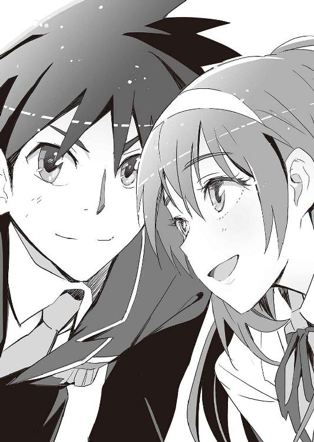
ボーナストラック「北壁の死闘」
「謙吾......」
「こら......ユキナ......ずるい......」
少女たちの荒い息づいかが、謙吾の耳たぶをかすめる。あまりにも距離が近い。
「なんだこの状況......」
少年──大牙謙吾は、二人の少女に抱きつかれて困惑している。いや、謙吾がユキナに抱きついているのか......なんだかよくわからなくなってきた。
岩清水ユキナと布施七湖。少年も少女も、全裸に近い下着姿だ。
──なぜ、謙吾がこんな状況に陥ってしまったのかというと。
１
『海神学園特進クラス一年、マラソン大会』
校門近くの掲示板に、そんな告知がでかでかと貼りだされていた。それを、特進クラスの五人──謙吾、ユキナ、七湖、彩離、セルジュが見上げている。現在、特進の一年はグラウンドで基礎体力強化の授業中。ようするに体育だ。
謙吾とセルジュは、男子用のスパッツ型運動服。女子三人は、体に密着した陸上競技用のレオタード型運動服姿だ。この女子運動服は体のラインがはっきりと浮かび上がり、下半身はほとんど水着のように股間とお尻に食い込んでいて、その恥ずかしさから生徒たちの間では──もちろん男子は別として──不評だった。
「特進クラスにしては普通のイベントだな......」
謙吾がつぶやいた。
隣のユキナがうなずき、
「たしかに。『マラソン大会』......他の高校とかでもやってそうだ」
「でもさあ、一見普通でも、やってみたら大変、っての何度もあったじゃない。夏の臨海学校とか......」七湖が怪しむように言った。
「む、そういえば」と、ユキナは苦い顔をした。思い当たることばかりだ。海神学園の臨海学校は海外で、軍艦に乗り込み、実戦さながらの演習の繰り返しだった。そろそろこの学校の異常性にも慣れてきたが、まだまだ予想の斜め上を行かれることが多い──。
「マラソン大会はセルジュが有利すぎる」
謙吾は腕を組み、不満そうな顔だ。
「そりゃそうや。俺は人間やないからナァ。ちょっとやそっとのことじゃ『疲れる』ってことも知らんし」
「今年はどんなコースなのかな。ハワイのキラウェア火山は楽だった」
彩離が言った。ユキナはそれが冗談なのかと思ったが、彼女は真顔だった。
「グランドキャニオンは上下の移動が多くて、さすがの俺でもしんどかったなあ」
と、セルジュも思い出してしみじみとつぶやく。
「マラソンの開催場所やコースは、当日になるまで発表されない。参加者に予備知識を与えないためだ」と謙吾。「コースについて『予習』できないってのが意外と厄介なんだ。学長はあんな顔して、結構やることが陰険で困る」
そんなやり取りを聞いたユキナと七湖は「ぞっ」として顔を見あわせた。
「やっぱり......まずい感じ？」
その通りだった。
やっぱり、まずかった。
──マラソン大会当日。
「アラスカー!?」
特進クラス一年が軍用機で運ばれたのはアメリカ最北端の州──アラスカだった。
かつてのイヌイットの土地で、三分の一は北極圏に入っている。
私立海神学園の母体である民間軍事会社グリークスは、世界各国の政府と軍部に独自のコネクションを構築している。もちろん、すべての国家と友好的な関係を結んでいるわけではないが、「民間人には決して迷惑をかけないから、訓練のために場所と施設を少し貸してほしい」と頼めば大抵の場合は二つ返事でＯＫがもらえる。
アラスカ州の米空軍基地まで飛行機で移動。そこからヘリコプターに乗り換えて、アラスカ山脈で降りた。そこは、山地の中でも比較的ひらけた場所で、急造のプレハブ休憩施設と、海神学園のマラソン大会本部が設置されていた。
輸送ヘリから地面に降り立った生徒たちは、日本人なら恐らく百人中百人がまったく同じ感想を抱くであろう一言を口にした。
「寒い！ というか痛い！」
アラスカの山地は、昼間の最高気温がマイナス二〇度ということも珍しくない。もしもマイナス一〇度だったら、地元の人間にしてみれば「今日は暖かい」になる。慣れている地元の人間ならまだしも、外国人にとっては寒さが皮膚に突き刺さるようだ。氷が直接神経を侵食しているのではないか──歴戦の学生傭兵でも、そんな錯覚にとらわれてしまうほどだった。
生徒の少年少女たちは、ヘリの中では陸上競技用の運動服姿だったが、さすがにそのままの格好で降りたらマラソン大会が始まる前に凍死してしまうので、ジャージと防寒具が用意されていた。防寒具の分厚いダウンジャケットを着込んで、特進クラスの生徒たちはミーティングのために、学生らしく整列する。
彼らの前に特別機でやや遅れてやってきたこども学長──厳島アイナが姿を現した。大企業グループのお嬢様らしく、豪奢な毛皮のコートを着込んでいる。
「......山の中は、マイナス二五度だそうです。絶好のマラソン日和ですね......」
文字通りの「涼しい顔」でアイナが言った。生徒たちはブーイングの声をあげることも忘れて、むしろ彼女の鬼畜ぶりになかば呆然としていた。
「......周囲に町や村はありません。七〇キロ離れたところに狩人のための小屋と食堂があるだけです。携帯電話は当然不通。外部と交信するには、衛星電話、衛星通信装置が必要になります。海神学園の特進クラスに相応しいマラソン会場です」
防寒具があっても寒いものは寒い。精鋭ぞろいの特進クラスでも、寒さが苦手なものは奥歯を鳴らして震えている。しかし、こども学長は表情も口調も完全にいつも通りで、生徒たちを改めて感心させた。
やはり、並の子どもではないのだ。
「アメリカ政府、アラスカ州から特別な許可を受けて、アラスカ山脈、デ・ロング山地にコースを設定しました。およそ四〇キロです」
というこども学長の説明を受けて、
「......わりと短めの設定ですね」
謙吾やセルジュ、他にも一部の生徒が安堵のため息を漏らした。
「どこが!?」
と、ユキナと七湖はほぼ同時に戸惑いの声をあげてしまう。運動が得意で、山奥の「隠れ里」で育ったユキナはフルマラソンを走りきるくらいの体力は持ちあわせているが、アラスカ山脈の四〇キロが洒落にならないことは容易に想像がつく。
一方、特進クラスに転入してきてだいぶ鍛えられたとはいえ、基本的に運動が苦手な七湖にとっては死を覚悟してもおかしくない距離だ。
「途中に休憩地点などはありません」
戸惑いの声は無視して、こども学長は説明を続ける。
「......ゴール地点には、ヘリや雪上車、輸送車などが待機しています......。あと、特進クラスにこんな道具の世話になるような間抜けはいないと思いますが......遭難者を出さないように、一応ＧＰＳ発信機を渡しておきます。これがあれば、地球のどこにいようと位置を調べることができます。逆に、これ以外は最低限のサバイバルキットしか携帯を認めません。個人的な装備は、事前に係のものに渡しておくこと。──何か質問ありますか？」
「はい」と生徒の一人が手をあげた。「スタートは一斉にですか？ それともバラバラ？」
「......全員で一斉に出発するわけではありません......」こども学長が答える。「......五人ずつ、チームごとに、一〇分おきに出発します。途中で他のチームに遭遇しても、生死にかかわるトラブルが発生していない限り助けあったりはしないこと。いいですね。
──他には？」
「これ、あんまりじゃないですか......？」
と、七湖が泣きそうな顔で言った。
「......それは質問とは言いませんよ......」
アラスカの極寒にも負けない、冷たい声のこども学長。
「......冬季行軍訓練にはぴったりじゃないですか......」
「冬季行軍って......ここは軍隊ですか!?」
「......軍隊ですよ、ここは。いまさら何を言っているんですか......」
２
学長による挨拶と説明が終わり、コースの地図が配布され、マラソン開始まで自由行動となった。自由時間は三〇分。一番遅いグループだと、あと二時間ほどプレハブの休憩施設で時間を潰すことになる。謙吾たちチーム「ビーバス＆バットヘッド」の出番は、ちょうど一時間後だった。
ミーティング解散後、ビーバス＆バットヘッドの五人は、大会本部に戻る途中のこども学長をつかまえて話しかけた。
「......なんですか......まだ他にも質問があるんですか？」
「質問っていうか......これヤバすぎですって」
と、七湖が言い、
「こんなコースを考えつくのは正気の人間じゃありません！」
ユキナもやや強い口調で詰め寄った。
「正気じゃないって......このコースを考えたのは私なんですが......」
「あ。それは......すみません。言いすぎました」
「それに......あなたたち二人以外は、みんな平然としてますよ......」
「う......」
たしかに、それはこども学長の言った通りだ。
ビーバス＆バットヘッドの中でも、謙吾、セルジュ、彩離は「まあ、きつそうだけど仕方ないかな......」という顔をしている。他の生徒たちも同じだった。
かなり難易度の高いコースに、みなが驚いたのは事実だ。
しかし、海神学園特進クラスの学生傭兵は、依頼があれば世界中のどんな戦場にでも飛んでいく。仕事先を選ぶことはできない。灼熱の砂漠でも極寒の山地でも文句は言わない──それがプロの兵士というものだ。だから、驚いて、それで終わり。泣き言や、抗議の声は口から出さない。
「というか、装備科からは私一人だけなんですけど......」
七湖が、あたりを見回してから言った。そういえば、たとえばファンタスティック・スリーの連中は見当たらない。
「......あなたは装備科とはいえ、ＧＥＮＥＺの着用者なので特別参加です。ビシビシ鍛えていきますよ......」
そう言って、こども学長は七湖をビシッ！ と指さした。
「ええー！」
七湖は舌を出して心底嫌そうな顔をする。
こども学長は指を突きつけたまま、
「......体力的に余裕がある謙吾やセルジュが、七湖さんを背負って歩くのも禁止......」
「えええー!?」
「そうでなければ、鍛えられないでしょう？」
「こども学長じゃない......！ こどもサディストだ！」
「......なんですか、それは。人聞きの悪い」
三〇分の自由時間があっという間に終了。
こども学長が「それでは」と、マイクで高らかにマラソン大会の開始を告げた。
最初のチームが出発し、次は一〇分後。
謙吾たち五人も、四組目でスタートした。
──わかりきっていたことだが、いきなり寒い。暖房のきいたプレハブで下手に休憩していたぶん、余計に寒く感じる。プレハブも、実は罠だったのだ。ある程度寒さに体を慣らしておくのが正解だった。──と、出発してから気づいても、もう遅い。
きつい山道だ。氷雪が岩山を削り出したような、厳しい山肌が続いている。けもの道らしきものがないではないので、なんとかそこを進んでいく。
尖った山林、むき出しの岩肌、斜面を埋め尽くす白い雪──。
「けもの道って......」と、七湖が足を動かしつつ口を開く。「野生動物が移動して、自然とできたような道のことだよね？」
謙吾がうなずき、
「まあ、そんな意味だ」
「このあたりにいる野生動物ってどんなのかな？」
「アラスカ山脈だと......カリブーやオオカミ、クマあたりが代表的か」
「オオカミ!? 絶滅したんじゃないの？」
「何を勘違いしてるんだ。数は減ってるし、たしかにニホンオオカミは絶滅しているが、オオカミ自体はまだ世界各地に生き残ってるよ。大丈夫。クマもオオカミもそんなに凶暴な生き物じゃない。子育て中の母親とかはピリピリしてて危ないが......」
「それに、クマなら今は冬ごもり中やろ」とセルジュ。
アラスカは風が強く、吹雪になれば軽く風速四〇メートル以上になる。日本の強力な台風と同じくらいの強さだ。
寒さが厳しくとも、険しいけもの道でも、横殴りの風が体をちぎり取っていきそうでも、さすがに少年兵、少女兵としての経験が豊富な謙吾、彩離、セルジュは力強く前へ前へと進んでいく。特に戦闘用ゴーレムであるセルジュは、ひょうひょうとした表情で平然としている。
そんな三人に、ユキナもしっかりとついていく。
「さすがユキナ」
「田舎育ちのおかげやな」
「それは私の田舎をバカにしすぎだ！」
「でも、凄く辺鄙なところだったじゃん......」
「日本のアラスカ県だな」
「山梨県をバカにしすぎだ！」
問題は──やはり残った一人。
七湖がまずいことになっている。
みなでユキナの田舎を訪ねたときと似たような状況になった。そのときは、謙吾が七湖を背負って難所を乗り切ったが、今回それはこども学長によって禁止されている。
「ちょっと休憩したいな......」
「まだ開始してから一時間ほどだからな......休むにはまだ早い」
と、申し訳なさそうに謙吾。
七湖も必死だ。歯を食いしばって頑張っている。決して精神力が弱い少女ではない。「でも......本当にきつくて」そんな彼女が限界と言ったときは、たぶん本当にそうなのだ。海神学園で多少の訓練を重ねても、運動歴のなさはいかんともしがたい。
「少し手伝うしかないな」
謙吾の言葉に、彩離が「まずくない？ こども学長が......」と難色を示す。
「肩を貸すくらいならいいだろう。恐らく、全員に渡されたＧＰＳ発信機には、こっそり歩数計のようなものが内蔵されている。あとでその機能をチェックして、移動した距離と歩数を照らし合わせて不正がないか調べるわけだ。──だとすれば、肩を貸すくらいなら大丈夫のはず」
「なるほど」セルジュがうなずく。「妥当な推測や」
「へへー。ありがと、謙吾」と微笑む七湖。
その時だった。
五人は、きつい傾斜のついた山林の中を進んでいたのだが、突然近くの草むらから巨大な影が飛び出してきて、セルジュに強烈な体当たりを食らわせた。
「！」
思わぬ「敵」の出現に、完全に不意打ちを食らってしまった形のセルジュが吹き飛ぶ。ゴーレムの重い体が、砲丸のような弾道を描いた。何十本もの木の枝をへし折ってから、地面に落ちても勢いは止まらず、山の斜面を転がっていく。
「セルジュ！」
「そんな馬鹿な！」
セルジュを吹き飛ばした「敵」の正体がわかって、謙吾たちは目を丸くした。
アラスカヒグマだ。
平均体重およそ四〇〇キロ。
しかし、今目の前にいるのは平均よりはるかに大きい。世界最大級のアラスカヒグマになると、体重九〇〇キロを超えるものもいるという。
立ち上がると、頭の高さが三メートルを超える。
「この時期、アラスカヒグマは冬眠してるはずだ！」
謙吾がそんなことを言っても、現に間近に存在しているのだからどうしようもない。
アラスカヒグマは、野生の勘でセルジュの「異質さ」を感じ取ったのだろう。だから、真っ先に排除した。たしかにＧＥＮＥＺを着用していない謙吾よりも、いつでも特殊な力が使えるセルジュのほうが危険な存在であることは間違いない。
次にアラスカヒグマが狙ったのは──同じく「異質」な存在であるナイチンゲール。岩清水ユキナだった。
ヒグマが拳を振り上げる。謙吾が慌ててユキナを守ろうとするが、間に合わない。
「ユキナッ！」
「け、謙吾！」
ヒグマの迫力が凄まじすぎて、ユキナの足が動かなかった。体の動きが鈍いのは、現実感のない悪夢を見ているときに似ていた。
海外のヘビー級プロボクサーのパンチ力を正確に数字にすると、およそ二〇〇キロだという。しかし、ヒグマのパンチ力は弱いものでも一・五トン。ヒグマのフックが頭部に直撃すれば、人間の首が「ポーン」と千切れて飛んでいく威力だ。
銃弾より強烈なヒグマの一撃を腹部に受けて、派手に出血しながらユキナも吹き飛ばされた。山の傾斜のせいで、木にぶつかっても転がる勢いが止まらず、人間ピンボールのような状態になってしまう。
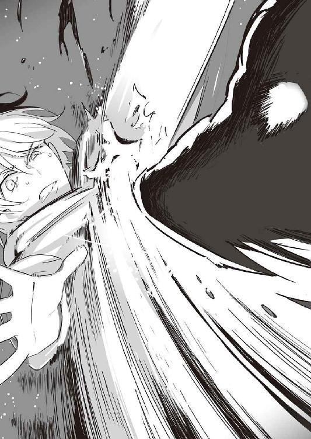
このままでは全滅だ──。
流れを変えるため、彩離が跳んだ。
「ふッ！」
空中で鋭い蹴りを繰り出し、足をヒグマの眉間に打ち込む。バチッ！ と盛大な打撃音が鳴り響き、ヒグマの動きが一瞬止まる。
「やったか!?」
やれてない。
成人男性でも一撃で気絶させる彩離の蹴りも、ヒグマの防御力からすれば「ぼんやり歩いていたら電信柱に頭をぶつけた」程度の痛みでしかない。
「やっべ！ 全然ダメだ！」
アラスカヒグマは、邪魔そうに彩離を手で払った。
彩離までいなくなって、残ったのは謙吾と七湖の二人きり。
謙吾は、護身用にコンバット・ナイフを一本だけ持ってきていた。マラソンコースがアラスカだとわかっていたなら、もう少し重武装してきたところだが、贅沢は言えない。このナイフを、ヒグマの眉間に突き立てるしかない。
アラスカヒグマが、謙吾に襲いかかってきた。押し倒されれば、嚙みつかれる。圧倒的な体重差があるので、一度ヒグマの下になったら絶対に逃げられない。
──チャンスは一瞬。
のしかかってくるヒグマの横をすり抜けつつ、謙吾はその頭部にナイフを突き刺した。
「凄い！」
と、七湖が感嘆の声。しかし謙吾は舌打ち。
「いや、外した！」
眉間ではなかった。ナイフが刺さったのはヒグマのこめかみのあたりで、しかも分厚く丈夫な頭蓋骨は貫けなかった。万策尽きた謙吾をアラスカヒグマが押し倒し、上から何度も爪で切り裂き、牙で嚙みつく。
「逃げろ！ 七湖！」
「でも......」
「でも、じゃない！ こっちはなんとかする！」
謙吾は必死の形相だった。それでも、七湖は逃げたくなかった。木の棒か何かを拾って、ヒグマの後頭部を殴って謙吾の援護をしようと考えた。適当な太さの枝はないかと七湖が探していると、ついうっかり、足を滑らせてしまった。
「きゃッ！」
思い切り転んで、七湖も山の斜面を落ちていく。
３
「く、うっ......」
ヒグマのせいで大ケガをして、少し気を失っていたが、ナイチンゲールの再生能力が働いたおかげでユキナは目を覚ますことができた。防寒具にヒグマの爪によって破れ目が生じていて、こぼれた血が凍り始めている。
「ここ、どこだ......？」
──どこをどう転がってきたものか。
あたりは、見渡す限りの雪原だった。軽い吹雪のせいで視界が悪い。
主に足下を見ながら少しずつ進んでいくと、白い雪の上に点々と続く血の痕を見つけた。まだ新しい。「......！」嫌な予感がしてそれを追いかける。段々と血の量が増えていって、やがてその先に謙吾が倒れているのを見つけた。
「謙吾！ おい、しっかりしろ！」
ユキナは慌てて駆け寄って、抱き上げた。
（謙吾......）
彼の体は、ヒグマの爪と牙に切り裂かれて血まみれだった。数百キロという体重に押しつぶされて、骨もあらぬ方向に曲がっている。謙吾も必死に抵抗したのだろう。全身にヒグマの毛がからみついていた。
（こんなにボロボロになって......）
ユキナは思わず泣きそうになった。男の子のこういう姿にはぐっとくる。
たまらなくなって、ユキナはナイチンゲールの力を使った。
つまり──キスをした。
「ん......」
ユキナの柔らかい唇と、謙吾の血に濡れた唇が重なる。こんな状況が多いせいか、謙吾とのキスはいつも血の味がする。
謙吾は、ナイチンゲールの特殊能力によって不死身の戦士「ギルガメシュ」となった。見る見るうちに、血を流し続けていた傷口がふさがり、折れた骨も元に戻る。白くなっていた謙吾の肌の色がいつもの状態に回復していく。
「くっ......」
謙吾はまだ気を失っているが、雪の上で何度か身をよじった。
「よかった......」
ユキナは謙吾を抱えたまま、安堵のため息をつく。
ここで、急に誰かに見られているような気がして、ユキナは背後を振り返った。いつの間にか、すぐ後ろに七湖がいた。
「うわ！」
びっくりして、その場で跳び上がりそうになるユキナ。七湖は体育座りで不満そうな目をして、ユキナと謙吾のことを「じーっ」と見つめていた。自分で転んだだけの七湖は比較的軽傷だった。
「いつから、そこに？」
「ちょうど、ユキナが謙吾を『ギルガメシュ』にするところから」
「ああ......」
要するにキスシーンのことだ。必要なことだったとはいえ、恥ずかしくなってユキナは自分の顔を両手で覆って隠す。
「そ、それはさておき......」七湖のほうから話題を変えてくれた。「ここは、どこだろう？」
「私にもよくわからない......」ユキナには他に答えようがない。マラソン大会に参加した生徒たちには、全員コースの地図が配られているが、そもそも現在位置がわからないから役に立たない。ＧＰＳ発信機は大会本部用のもので、自分たちの位置確認には使えないようになっている。「とにかく、謙吾が起きてくれれば、どうにかなるかもしれない」
「はっ！」
何の前触れもなく、謙吾が跳ね起きた。起きるなり、中腰になって身構えて、視線を素早く左右に走らせる。
「アラスカヒグマは......!?」謙吾の問いに、
「わかんない......近くにはいないと思う......」七湖が答えた。
しばらく、謙吾は自分の身に何が起きたのか把握できず、混乱していたが、徐々に平静を取り戻していき、自分の傷が治っていることにも気づいた。
「クマに滅茶苦茶やられたはずなんだが......」
「今のお前は『ギルガメシュ』だからな」とユキナ。
「ああ、なるほど......」
謙吾は納得し、それからすぐにユキナの唇の感触を思い出して赤面した。それにつられて、ユキナの恥ずかしさもよみがえる。「ふん」と一度つまらなそうに肩をすくめて、七湖が話を先に進める。
「私たち、遭難したのかな？」
「大丈夫だ」
謙吾は真剣な表情で即答した。
「ＧＰＳ発信機がある。時間がたてば、救助がくる」
「助けは呼べないの？」と七湖。
「通信機能はついてないな。このＧＰＳ発信機は、電波を飛ばすだけで地図もついてない。待つしかない」
「『時間がたてば』って......どれくらい？」
恐る恐る、ユキナが訊ねた。
謙吾は指を折って少し計算してからこう答える。
「五時間かな」
ユキナと七湖は同時に「五時間!?」と驚きの声をあげた。
──同じころ。
「あいたたた......」
「どっかまずいとこないか、彩離」
「平気って言いたいとこだけど......」
ヒグマに手で払われた際に、彩離は右腕の骨にひびが入り、山の斜面を転がり落ちるうちに左の足首を悪い方向にひねっていた。
「ちょっと痛いなあ」
彩離とセルジュは、ほぼ同じ地点に落ちてきていた。山林と雪原の境目のような場所だ。
「......謙吾、ユキナ、七湖とはぐれたみたいやな」
「セルジュは平気なの？」
「お前だって、俺がどんだけタフな戦闘用ゴーレムかは知っとるやろ。あの程度じゃびくともせえへんて。ほら、力抜けや」
「わっ......！」
セルジュは、両腕で彩離を持ちあげた。いわゆるお姫様だっこに少女は赤面する。
「い、いいよう。こんなの......」
「ケガしとるんや。無理すんな。もう大会のルールどころじゃなさそうだしな」
「............」
彩離が負傷し、まともに歩けないのは本当のことだ。無理をすればますますケガを悪化させて、余計にセルジュに迷惑をかけることになる。
「......セルジュはただの戦闘用ゴーレムなんかじゃない」彩離は、素直にセルジュの胸板に自分の頭部を預けた。「こうしてると凄く温かい......関係ないよ」
「......そっか」
今度はセルジュのほうが照れてしまう。
４
「全員、サバイバルキットの確認だ」
と謙吾が言った。ユキナと七湖は経験豊富な彼の言葉に素直に従う。
コンパスとマラソンコースの地図。懐中電灯。非常時の携帯食料。粉末ココア、紅茶のティーバッグ。多目的の金属製容器。固形燃料。防水マッチと燃焼促進剤。包帯とガーゼ。縫合セットと止血鉗子。痛み止め、抗生物質。輸血キットと輸血溶剤──。
「こんなところか......」と謙吾はつぶやく。
「いけそう......？」
七湖が、不安げに瞳を揺らして訊いてきた。
「火をおこせれば、かなり時間が稼げる。でも、この強風じゃ無理だ......」と、謙吾は目を細めて遠くを見ようとする。「なんとか、風を防げる場所を探そう」
それからしばらく歩いて──三人は運のいいことに山肌にぽっかりと開いた洞窟を見つけた。さっきのアラスカヒグマの巣かもしれなかったので、まず謙吾が用心して洞窟を隅から隅まで調べた。小型の野生動物の糞しか見当たらない。とりあえず三人とも中に入って、懐中電灯を置いて中を明るくし、風が防げる場所で火をおこす。燃焼促進剤のおかげであっという間に火は強くなった。あまり奥にいきすぎると、ＧＰＳ発信機の電波が遮断される可能性があるので気をつける。
「固形燃料がある。熱いココアを作る」
謙吾はてきぱきと飲み物の準備を進めていった。
「さすが謙吾......こういうときも頼りになるね」
「もっときつい状況だって経験してる。この程度じゃ誰も死なないよ。俺が責任をもって二人とも連れ帰る」
謙吾は力強く言った。その言葉に、二人の少女は目を輝かせる。
「ユキナはいいよね......『ナイチンゲール』は死なない」
と、羨ましそうに七湖。
「そう簡単なもんじゃないよ......」ユキナが苦笑する。
「？」
「不死身のナイチンゲールにも、弱点はある。これは研究班の推測がほとんどだが──」と、謙吾は断ってから続ける。「まず、溶岩級の極熱。体がどろどろに溶けて水に混ざると、再生に途方もない時間がかかって、現在の自我が完全に失われる危険性がある」
「............」
「次にやばいのが、粉砕だ。粉になるまでバラバラにしてから、セメントで固めたりしたらナイチンゲールは『封印』された状態になる」
その光景を想像して、ユキナと七湖は眉間にしわを寄せて青ざめた。
「そして、寒さ。これもわかりやすい。たしかにナイチンゲールの生命維持能力は無限大で、普通の人間よりもずっと体温は下がりにくいが、完全に凍ればそれまでだ。氷が溶けるまで、再生能力も役に立たない......」
「じゃあ......」
「そうだ。油断をすれば、ユキナだって危ないこともある」
──さらに時間が経過して。
三人分の固形燃料もほとんど使ってしまって、残りはわずか。もう、あと五分ももたないだろう。寒さはますます厳しさを増していく。
「まずいな......夜になる......」
謙吾はうめくように言った。夜になれば、アラスカ山脈では最低気温がマイナス四〇度を下回ることもある。
「救助はどうしたの......？」
そう訊いた七湖の唇は紫色で、睫毛まで凍りついていた。
「もう、五時間くらいたってると思うけど......」
とユキナ。彼女はナイチンゲールなので、まだ体力が普段通り維持できている。
「強風のせいで、思うように海神学園の救助隊が動けないのかもしれない」
救助がこない理由を、謙吾が推測した。ありそうな話だった。山中の救助活動でもっとも頼りになるのはヘリコプターだが、回転翼の構造上どうしても風に弱い。
「ねえ、謙吾......」
七湖が、弱々しく震える声で言う。
「私、もうダメかも......」
「ダメとか言うな。諦めるな。こういう状況では、諦めた人間から脱落していくんだ」
そう言って、謙吾は七湖の手を強く握った。
「......謙吾！」
しかしそれは、逆効果だった。七湖が驚いて目を丸くした。
「謙吾の手も、凄く冷たい......」
「そんな......」ユキナは、確かめるために自分も謙吾の手に触れた。一瞬、ドライアイスかと勘違いするほど冷たかった。「本当だ......七湖より冷たい」
「俺がこの中で一番脂肪率が低いだろうからな、体温が下がるのも早い」
と、謙吾は他人事のように言って微笑む。
「なんとかしないと......！」ユキナは焦る。
「俺のことはいい。それよりユキナ、お願いがある」
「お願い？」
「命にかかわる大事なことだ。断らないでくれるか？」
「もちろん、なんでもする！」
「よかった......」
謙吾は満足げにうなずき、ユキナの両肩をがっしりとつかんだ。それから彼女の両目をまっすぐに見据えて、告げる。
「ユキナ、服を脱いで、人肌で七湖を暖めてやってくれ」
「......へ？」
セルジュと彩離は落ちた場所がわかりやすかったおかげで、比較的楽に最初のけもの道に復帰することができた。その道を、スタート地点目指して戻っている途中に、頭上を海神学園マラソン大会本部が派遣したヘリが通過した。やはり、トラブルが発生したのは本部も把握していたのだ。ヘリのあと、すぐに悪路踏破性に優れる軍用バギーで救助隊がやってくる。
「も、もう平気だよ」
「そっか」
「恥ずかしいから、おろせよー」
「ほいほい」
セルジュは彩離を地面に下ろした。彩離のケガはまだ痛むが、救助隊はもうすぐそこまで来ているのだから我慢できる。
軍用バギーはアメリカ製のＡＬＳＶで四人乗り。砂漠のような不整地でも時速一一〇キロで飛ばすことができる高性能だ。そんなバギーがセルジュたちの近くで停止して、そのうち一台の後部座席から毛皮のコートをまとったこども学長厳島アイナが降りてきた。
「どうも、学長」
「無事でよかった......それはさておき、他の三人は？」
「......まだ見つかってないんですか？」
「強風のせいで、ヘリが思うように飛ばせなくて......謙吾とユキナがいるから、大丈夫とは思うのですが......」
ここで、こども学長は思い出したように質問を口にする。
「そもそも、なんであなたたちのような優秀なチームが遭難を？」
「それが......」と、言いにくそうにセルジュ。「信じがたい話かもしれませんが、実はとてつもなく大きなクマに襲われまして......」
「......クマ？」
こども学長がきょとんとした、その直後だった。ドン！ と凄まじい音がして、軍用バギーが一台何ものかに引っくり返された。あのアラスカヒグマが、また襲ってきたのだ。普通の野生動物はもっと人間を恐れる。人間よりも、もっと楽に狩ることができる獲物を狙う。しかし、目の前にいるヒグマは何かが違う。人間に何か恨みがあるとしか思えない行動をとっている。
アラスカヒグマは、再びセルジュに狙いを定め、その間にいる邪魔なこども学長と彩離を爪で薙ぎ払おうとした。
「きゃっ！」
いくら気丈な性格といえども、まだまだ学長は子どもである。ヒグマの迫力に圧倒されて目を閉じて身を縮めてしまう。
「オイコラ！ 俺らの学長に手をあげるたあ、ふざけたアニマルやな！」
すぐにセルジュが前に出て、こども学長たちを守った。今度は、セルジュに火球を生み出す余裕があった。それを投げつけて、アラスカヒグマを炎と爆風で包み込む。手榴弾が間近で爆発したようなものなので、さすがの巨大なヒグマも吹き飛んで地面を転がった。
「やった......？」
「殺しちゃいません。さすがにタフや」
セルジュの言った通り、アラスカヒグマは死んでいなかった。足を引きずるようにして、悲鳴のような声をあげながら逃げていく。
「でも、追いかけてとどめを刺すような状況でもないでしょう。そもそも、今回あいつの縄張りを荒らしたのはこっちだし......」
「私の責任です......」
こども学長は涙目になっていた。
「あんな巨大なクマが近くに住んでいたなんて......コース設定に問題があった......」
「学長なりに、訓練になるコースを選んだ結果でしょう。気にすることはありません」セルジュは、最悪の結果を想像して怯えるこども学長をぎゅっと抱きしめる。「特進クラスは学生である前に、プロの兵士の集団でもあります。命懸けじゃなきゃ訓練にはなりません」
「でも......」
「あいつらを信じましょう。学長。大丈夫ですよ。みんなで笑って帰りましょう」
５
「ユキナ、服を脱いで、人肌で七湖を暖めてやってくれ」
謙吾のそんな申し出に、ユキナと七湖は久しぶりに寒さを忘れて熱くなった──ようするに、とても怒った。ぷんすか、擬音を立てそうな勢いで。
「なんで私が七湖と......！」
「私だってやだよ！ そんな......」
「ナイチンゲールも完全に凍れば危ない。でも、まだそこまでの寒さじゃないだろう。今はまだ、ユキナは体温を維持できている。この状況では人間暖房と言っていい」
謙吾の目は遊びなしだ。真剣に説得する。
「それにしても、肌と肌って......」
謙吾の言いたいことは、少女たちにも理解できてきた。
「そうしないと、七湖が死ぬ」
「でも......一つ条件がある」
と、ユキナもすべてを理解したうえで言う。
「なんだ？」
「謙吾も服を脱いで、温め合うの」
「お、俺はいいよ！」
提案したのはいいものの、自分のこととなると照れてしまう謙吾であった。
「バカ！ 謙吾だって結構危ないんでしょ!?」
ユキナは謙吾の身勝手さに怒りをぶつける。
「平気だ！」
「噓つけ！ 謙吾が死ぬなんて嫌だ。謙吾が嫌なら、私もここで凍る」
「今回ばっかりはユキナに賛成。恥ずかしがって死ぬつもりなの？」
「『人間暖房』なんだろ？ 私は。それなら有効活用するべきだ」
「む......」
そもそも言い出したのは謙吾だ。ユキナと七湖にそう迫られると、反論するのは難しかった。ギルガメシュの有効時間はすでに切れているし、あの力は一日に一回しか使えない。恥ずかしさ優先でこのまま全滅するか、我慢して生き残るか......迷っている暇はない。
まだ固形燃料の最後の火が残っているうちに、謙吾たちは防寒具を脱いで運動服姿になった。三人はサバイバルキットの縫合セットを使って、大急ぎで防寒具をつなぎあわせて、大型の寝袋のようにする。その中に三人一緒に入って、間に合わせの寝袋の中で運動服も脱いでいく。
謙吾は、運動服の下はごく普通のトランクスだった。しかしユキナと七湖は、恐ろしく布地の面積が小さい。セクシーな下着だった。少しレースの刺繡がついているだけの、ほとんど紐のようなデザインで、お尻が丸出しになっている。
「よりによってなんでそんな下着なんだよ！」
謙吾が、悲鳴に似た抗議の声をあげた。この状況では、今の少女たちの姿は体に毒だ。
「海神の陸上競技用運動服は変なレオタードだろ！」と、ユキナも声をはりあげる。「えっちな下着じゃないと、はみ出したり線が浮かびあがったりしてカッコ悪いんだよ！」
──謙吾が考えた通り、ユキナは見事に人間暖房として働いてくれた。即席寝袋の中は外とは比べ物にならないほど暖かい。
「ほら、七湖......もっとユキナにくっつかないと」
「そういう謙吾こそ」
「......温かい、ユキナ」
「なんだかくすぐったい......」
少女たちの荒い息づいかが、謙吾の耳たぶをかすめる。あまりにも距離が近い。
「こうしてると、ユキナの肌ってぷにぷになんだね......」
「七湖だって......凄く弾力があって」
「こんなときに、そんなのんきな」
「女の子だもん。お肌のことは気になるよ」
「謙吾は、やっぱりちょっとガサガサしてるな」
「放っておいてくれよ......」
「でも、体はやっぱりゴツゴツしてて、これはこれで気持ちいい。やっぱり男の子なんだな」
「............」
謙吾は、二人の少女に抱きつかれて困惑している。いや、謙吾がユキナに抱きついているのか、ユキナが七湖に抱きついているのか......なんだかよくわからなくなってきた。アラスカ山脈で遭難しているという非日常的な状況もあいまって、三人の混乱は加速していく。
「謙吾......」
「こら......ユキナ......ずるい......」
「なんだこの状況......」
肌と肌が密着する。ユキナの大きくて柔らかい胸の感触。七湖の、小振りだが形のいい胸の感触。太腿と太腿がこすれあって、甘美な刺激が下半身から頭の先まで突き抜ける。七湖の唇が、謙吾の首筋に触れる。「ん......」と思わず変な声を漏らしてしまう謙吾。するとユキナも負けじと謙吾のたくましい胸板に唇をつける──。謙吾が少年らしい生理反応を示しても、少女たちは嫌がる気配さえ見せない。
「謙吾......寒さはだいぶ紛れてきたけど......なんか、変な気分になってきちゃった......」
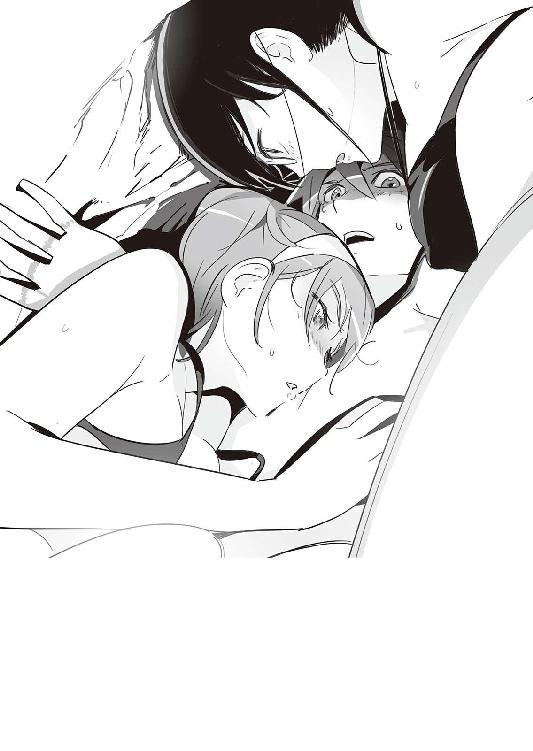
「私もだ、謙吾。これは、どういうことなんだ？ 低温のせいか？」
「俺もちょっと......変だな......熱い......クラクラする......」
「私、ユキナと一緒でも平気だよ......」
「二人同時なんて、そんな......」
「ドキドキするでしょ......」
いよいよ危ない一線が見えてきた三人。
「......何をやっているんですか？」
こども学長の声が上からかかって、最初は幻聴かと思った。
あまりといえばあまりのタイミングだが......救助が間に合ったのだ。
「がががが学長！」
「......まあ、なんとなく想像はつきますが......」
と、こども学長は肩をすくめる。
「ちょっとだけ、心配して損した......と思いました。外で軍用バギーや医療スタッフが待機していますから、急いで服を着てください......」
６
謙吾たちにとって、幸運なことが二つ、そして不運なことが一つ起きた。
幸運なことその一、命が助かったこと。
幸運なことその二、人肌で温め合っているのを、こども学長以外の人間には見られなかったこと。
不運なことは、こども学長に弱みを握られてしまったことだ。謙吾たちが何かまずいことをしたら、この話はたちまち学園中に広まってしまうだろう。
謙吾は、スタート地点のプレハブ休憩施設内にいた。救護所で電気毛布にくるまって、熱い紅茶で体を芯から温めている。ユキナのおかげで低体温症も凍傷もなく、冬のアラスカで遭難したとは思えない状態だった。
救護所に七湖もやってきた。ごく自然に、謙吾と同じ電気毛布に入ってくる。
「......今日も散々だったな」
「ユキナは？」
「彼女はナイチンゲールだからな。特別な検査があるんだ」
「そっか......」
寒さがナイチンゲールの体にどう影響するのか──そんなデータも、グリークスの技術研究スタッフにとっては必要なのだろう。ユキナだけが、ハイテク機器が満載の医療トレーラーで治療と検査を受けている。
「私、ユキナのことがちょっと苦手だった」
七湖がぽつり、と言った。
「色々とその、張りあうこともあるし......」
「............」
「でも、今日から好きになれそう」
と、七湖は微笑んだ。春の訪れを示す新芽のような微笑だ。
雨降って地固まる──とはいうが、雪山で遭難しても同じような効果が得られるものだろうか？ 相変わらず疲れることばかりだが、命が助かった安心感もあり、今晩は気持ちよく眠ることができそうだ。問題は、三人で一緒に寝袋に入っていたときのことを夢に見そう、ということだ。
──北壁の死闘、了
あとがき
というわけで『ＧＥＮＥＺ』シリーズ最終巻です。ありがとうございました。ここまで巻数を重ねることができたのも、読者のみなさまのおかげです。気に入っている短編が一つ未収録だったので、それも入ってます。
シリーズ最終巻のあとがきというのも難しいですね。一巻をスタートしてから、書いている自分自身にも色々なことが起きて、それが作品にもどんどん反映されていった感じです。僕が別の文庫でやってた『疾走する思春期のパラベラム』もそうなんですが、一巻と最終巻では雰囲気や文体がだいぶ違うのではないでしょうか。......本当はもっと統一感があったほうがいいのでは？ とは思いつつも、でもこういうのって自分じゃ制御が難しいんです。
小説は身体的な作業です。その内容や文体を完全に制御できないのは、自分の肉体を完全に制御できないのと同じことです。どんなに気をつけていても、徹底的に管理していても、人は病気になるし、ケガもする。「なんとなく調子がいい」「なんとなく調子が悪い」という、曖昧で感覚的な身体性から人間は逃れることができない。人間が頭を使って書いている限り、どんな機械を使おうと（それこそタイプライターだろうがワープロだろうがパソコンだろうが）、小説も身体性から逃れることはできない。
......身体性ってちょっと難しい言葉ですよね。これは分野（哲学、科学、心理学......）によって使い方が微妙に異なる言葉だから難しく感じる。僕の場合、「身体を通してたしかに感じる様々な要素」「自分の身体ををきちんと『循環』して出てきた思考、その過程」といったニュアンスでこの言葉を使うことが多いです。「身体的な思考」の代表的な一例として、「腹が減っては戦はできぬ」があります。
ちょっと脱線気味ではあるのですが、ここで逆に「身体を『循環』していない、身体性をともなわない文章」の例をあげてみます。こんな感じになります。
「親が死んだくらいで会社を休むな」「最近の若い従業員は『やる気』が足りない」「ものを食べたり、他の従業員としゃべっている暇があったら働け」「食料も弾薬も尽きかけているが精神力でカバーできる」......などなど。企業の経営者が多用する印象。
あと、「○×みたいな連中は人間じゃない」みたいな言い回しも、身体性や想像力、共感能力の減退が引き起こす言動と言っていいでしょう（作品中、この手の言動をあえて悪役に対して使うことはありますが）。
ええと。話を戻しましょう。「書いている自分自身にも色々なことが起きて、それが作品にもどんどん反映されていった感じ」という話の続き。たぶん三年くらい前からだと思うのですが、意識的に「自分の身体性を強化しよう」と思って、まず身体を鍛え始めました。筋トレ、ランニング、格闘技の道場通い......。これはわかりやすいですよね。人間は自分の身体を完全に制御することはできない。しかし、鍛えることによって「ある程度」「部分的には」自分の支配下におくことができる。まだまだ仕事や遊びのせいもあって運動量が不足していて、満足いく身体を獲得するにはいたっていないのですが、やっぱり自分の「調子」がよくなっているのは実感できる。
あともう一つ。身体性を強化するために。読書量を増やしました。「身体的な文章」「身体的な思考」を頭に取り込むためです。身体的な文章とは何か？ 読んでいると身体を動かしたくなったり、お腹がすいてきたり、緊張感で手に汗を握ったり、痛みの描写で読んでいるこっちまで思わず瞼を閉じてしまいそうになる......そんな文章です。そうやって獲得した「身体性」を、自分の作品の「面白さ」に直接つなげることができれば最高なんですが、この話を広げていくと長くなりすぎるのでここまで。実は、ずっと『ＧＥＮＥＺ』の話をしていたんですよ。もしあなたの手元にＧＥＮＥＺの一巻と最終巻があるのなら、ぜひ「身体性」という観点から読み比べていただけると嬉しいです。
最後になりましたが、イラストのmebae先生ありがとうございました。mebae先生の絵がなければ、八巻まで続くことはなかったでしょう。たくさんの素敵なキャラクターデザインに最大級の感謝を。
もちろん、大手書店で流通するような本は一人で作ることはできません。担当編集者のみなさま、デザイン、そして営業担当のかた......本当にお世話になりました。これからもよろしくお願いいたします。
『TOUCH』という海外ドラマのなかで、こんなセリフがあります。──人間はレンガにそっくりで、社会とはそれが組み合わさってできた「壁」みたいなものだ。助けあい、互いに支え合っている。しかしその「壁」にはたまに目に見えない強い力が襲いかかってきて、誰も気づかないうちにその強度を試されている──。
僕と読者のみなさまの関係も、そういうものであればいいなといつも思っています。もっと精進します。ではまた次の本で！ 深見真でした。
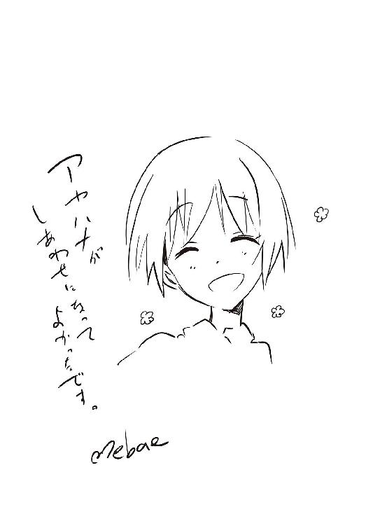
初 出
プロローグ～エピローグ 書き下ろし
ボーナストラック「北壁の死闘」
ドラゴンマガジン２０１１年１月号
GENEZ―8
ジーンズ
深見真
平成25年2月25日 発行
発行者 山下直久
発行所 株式会社富士見書房
〒102-8144 東京都千代田区富士見1-12-14
http://www.fujimishobo.co.jp/
(C)2013 Makoto Fukami/Fujimishobo
(C)2013 mebae/Kaikai Kiki Co., Ltd.